To understand the necessity for extending fractions to rational numbers, to represent rational numbers on the number line and to know that between any two given rational numbers, there lies many rational numbers.
To learn and perform the four basic arithmetic operations and solve word problems on rational numbers and simplify expressions with atmost three brackets.
To understand the properties of rational numbers.
To compute the square, the square root, the cube and the cube root of numbers.
To make a rough estimate of the square roots and the cube roots of numbers.
To express numbers in exponential form and understand the laws of exponents with integral powers.
To identify and express the numbers in scientific notation.
1.1 Introduction
Let us recall the different types of numbers which we have already learnt in our earlier classes. When we want to count, it is natural to start with numbers 1, 2, 3, 4, 5, ... Isn't it?
These are all called as Counting numbers or Natural numbers and their collection is denoted by \(\mathbb{N}\). The use of three dots at the end of the list is a notation to show that the list keeps going forever.
The natural numbers can be visualized as a ray marked with these numbers:
Fig 1.1
Consider the situation that yesterday my purse had money, say ₹8, but today the purse may be empty. How many rupees are there in the purse now? How to denote this emptiness? Here comes the concept of zero which evolved to symbolize the idea of emptiness. The concept of zero, though quite natural now, was not normal to early humans. Only after hundreds of years people started thinking of it as an actual number. The difficulty was solved when the Indian Mathematicians provided the symbol for zero. The natural numbers system with this additional number zero became Whole numbers. The whole numbers can be visualized now as follows:
Fig 1.2
The system of whole numbers is denoted by \(\mathbb{W}\).
Even zero was not sufficient to solve all problems. Think what happens when 4 is taken away from 6?
Draw a number line up to, say 9. Mark 6 by a dot on it.
Fig 1.3
We know that, to subtract 4, we need to go 4 steps to the left side from 6. We will land on 2 and so the answer is 2. But what will happen if we want to subtract 6 from 4? This situation is where the humans needed (and created) negative numbers.
Fig 1.4
But, how can a number be negative? Simple! Just think of them as numbers less than zero. Including the negative integers with the whole numbers, we get the list of numbers called the Integers. The integers consist of zero, the natural numbers and the negatives of the natural numbers and it consists a list of numbers that stretch in either direction without end. The entire collection of integers is denoted by \(\mathbb{Z}\).
1.2 Rational Numbers
Even after coining integers, one could not relax! \(10 \div 5\) is no doubt fine, giving the answer 2 but is \(8 \div 5\) comfortable? Numbers between numbers are needed. \(8 \div 5\) seen as 1.6, is a number between 1 and 2. But, where does \((-3) \div 4\) lie? Between 0 and \(-1\). Similarly, where do you find \(\frac{-12}{5}\) on the number line? Between \(-2\) and \(-3\). Thus, a ratio made by dividing an integer by another integer is called a rational number. (Remember, we should not divide by zero!)
Formally speaking, a rational number is a number of the fractional (ratio) form \(\frac{a}{b}\), where a and b are integers and \(b \ne 0\). The collection of all rational numbers is denoted by Q. Non-negative rational numbers may be thought of as fractions. They can also be expressed as decimals and percents.
Since operations on rational numbers demand a basic knowledge of operations on fractions, let us recall through an exercise some of the basic ideas related to fractions.
Recap Exercise
The simplest form of \(\frac{125}{200}\) is ____.
Which of the following is not an equivalent fraction of \(\frac{8}{12}\)?
Fill in the boxes: \(\frac{\Box}{66} = \frac{70}{\Box} = \frac{28}{44} = \frac{\Box}{121} = \frac{7}{\Box}\)
In a city \(\frac{7}{20}\) of the population are women and \(\frac{1}{4}\) are children. Find the fraction of the population of men.
Represent \(\left(\frac{1}{2} + \frac{1}{4}\right)\) by a diagram.
Try these
Is the number \(-7\) a rational number? Why?
Write any 6 rational numbers between 0 and 1.
Note
The word 'ratio' in Math refers to the comparison of the sizes of two different quantities of any kind. For example, if there is one teacher for every 20 students in a class, then the ratio of teachers to students is 1:20. Ratios are often written as fractions and so \(1:20 = \frac{1}{20}\). For this reason, numbers in the Fractional form are called rational numbers.
1.2.1 Rational numbers on a number line
Locating the rational numbers on a number line is an important skill. For example, to represent the number \(\frac{-3}{4}\) on the number line, \(\frac{-3}{4}\) being negative would be marked to the left of 0 and it is between 0 and \(-1\). We know that the integers, 1 and \(-1\) are equidistant from 0 and so are the numbers 2 and \(-2\), 3 and \(-3\) from 0. This concept remains the same for rational numbers too. Now, as we mark \(\frac{3}{4}\) to the right of zero, at 3 parts out of 4 between 0 and 1, the same way, we will mark \(\frac{-3}{4}\) to the left of zero, at 3 parts out of 4 between 0 and \(-1\) as shown below.
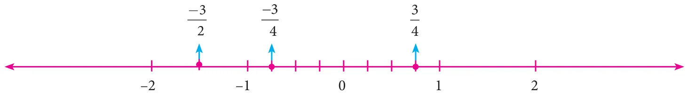
Fig. 1.5
Similarly, it is easy to find \(\frac{-3}{2}\) between \(-1\) and \(-2\) since \(\frac{-3}{2} = -1\frac{1}{2}\).
Now, on the following number line what rational numbers do the letters A and B represent?
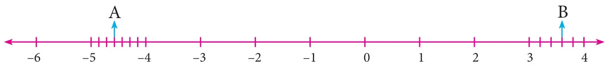
Fig. 1.6
You will now be able to say easily the rational numbers marked by A and B on the number line as shown above. Isn't it? Here, A represents the rational number \(-4\frac{4}{7}\left(\frac{-32}{7}\right)\) and B represents the rational number \(3\frac{3}{5}\left(\frac{18}{5}\right)\).
1.2.2 Decimal representation of a rational number
A rational number can also be represented in decimal form rather than in the usual fractional form. Given a rational number in the form \(\frac{a}{b}\) (\(b \ne 0\)), just divide the numerator a by the denominator b and we can see that it can be expressed as a terminating or non-terminating, recurring decimal.
Activity
Use a string as a number line and fix it on the wall, for the length of the class room. Just mark the integers spaciously and ask the students to pick the rational number cards from a box and fix it roughly at the right place on the number line string. This can be played between teams and the team which fixes more number of cards correctly (by marking) will be the winner.
Example 1.1
Write the decimal forms of the following rational numbers:
(v) \(\frac{1}{3} = 0.3333\)... (by actual division and it is recurring and non-terminating)
Note
The above examples show how a rational number may be given in decimal form. The reverse process of converting the decimal form of a rational number to the fractional form may be seen in the higher classes.
There are decimal numbers which are non-terminating and non-recurring such as
\(\pi = 3.141592653589793238462643\).....
\(\sqrt{2} = 1.41421356237309504880168\)....... etc.
They are not rational numbers and one can study more about them in the higher classes.
Try these
Write the decimal forms of the following rational numbers:
Rational numbers may be classified as positive and negative rational numbers. If both the numerator and the denominator of the fraction representing a rational number are of the same sign, then the rational number is positive. For example, numbers like \(\frac{3}{4}\), \(\frac{-11}{-6}\) etc., are positive rational numbers. If either the numerator or the denominator of the fraction representing a rational number is negative, then the rational number is negative. For example, numbers like \(\frac{-3}{4}\), \(\frac{11}{-6}\) etc., are negative rational numbers.
Note
0 is a rational number which is neither positive nor negative.
Note that \(\frac{-11}{6} = \frac{11}{-6} = -\frac{11}{6}\)
1.2.4 Equivalent rational numbers
We know how to write equivalent fractions when a fraction is given. Since a rational number can be represented by a fraction, we can think of equivalent rational numbers, duly obtained through equivalent fractions.
Suppose a rational number is in fractional form. Multiply its numerator and denominator by the same non-zero integer to obtain a rational number which is equivalent to it. For example,
\(-\frac{2}{3}\) is equivalent to \(\frac{-6}{9}\) since \(\frac{-2}{3} = \frac{-2 \times 3}{3 \times 3} = \frac{-6}{9}\)
\(-\frac{2}{3}\) is also equivalent to \(\frac{10}{-15}\) since \(\frac{2}{-3} = \frac{2 \times 5}{-3 \times 5} = \frac{10}{-15}\)
Observe the following rational numbers: \(\frac{4}{5}\), \(\frac{-3}{7}\), \(\frac{1}{6}\), \(\frac{-4}{13}\), \(\frac{-50}{51}\). Here, we see that
the denominators of these rational numbers are all positive integers
1 is the only common factor between the numerator and the denominator of each of them and
the negative sign occurs only in the numerator.
Such rational numbers are said to be in standard form. A rational number is said to be in standard form, if its denominator is a positive integer and both the numerator and denominator have no common factor other than 1. If a rational number is not in the standard form, then it can be simplified to arrive at the standard form.
Do you know?
The collection of rational numbers is denoted by the letter Q because it is formed by considering all quotients, except those involving division by 0. Decimal numbers can be put in quotient form and hence they are also rational numbers.
Example 1.2
Reduce to the standard form: (i) \(\frac{48}{-84}\) (ii) \(\frac{-18}{-42}\)
Which of the following pairs represents equivalent rational numbers?
(i) \(\frac{-6}{4}\), \(\frac{18}{-12}\) (ii) \(\frac{-4}{-20}\), \(\frac{1}{-5}\) (iii) \(\frac{-12}{-17}\), \(\frac{60}{85}\)
Find the standard form of:
(i) \(\frac{36}{-96}\) (ii) \(\frac{-56}{-72}\) (iii) \(\frac{27}{18}\)
Mark the following rational numbers on a number line.
(i) \(\frac{-2}{3}\) (ii) \(\frac{-8}{-5}\) (iii) \(\frac{5}{-4}\)
1.2.6 Comparison of rational numbers
It is useful to remember the following points:
Every positive number is greater than zero.
Every negative number is smaller than zero.
Every positive number is greater than every negative number.
Every number on the right of a number on a number line is greater than that number.
When two integers or fractions are given, we know how to compare them and say which is greater or smaller. Now, in the same way, we can compare a pair of rational numbers.
Type 1: Comparing two rational numbers with opposite signs
Example 1.3
Compare \(\frac{5}{17}\) and \(\frac{-10}{19}\).
Solution:
Since every positive number is greater than every negative number, we conclude that \(\frac{5}{17} > \frac{-10}{19}\).
Type 2: Comparing two rational numbers represented by two fractions with same denominators
Example 1.4
Compare \(\frac{1}{3}\) and \(\frac{4}{3}\).
Solution:
Since the denominators are the same, just compare the numerators. Since \(1 < 4\), we conclude that \(\frac{1}{3} < \frac{4}{3}\).
Type 3: Comparing two rational numbers represented by two fractions with different denominators
Example 1.5
Compare \(\frac{3}{4}\) and \(\frac{5}{6}\).
Solution:
The LCM of the denominators is 12 (Find it!). Consider for each rational number an equivalent rational number with the LCM 12 as denominator. We get \(\frac{3}{4} = \frac{9}{12}\) and \(\frac{5}{6} = \frac{10}{12}\), which become like fractions now. Here, \(\frac{9}{12} < \frac{10}{12}\). Hence, we conclude that \(\frac{3}{4} < \frac{5}{6}\).
Type 4: Comparing two rational numbers that are not in standard form
Example 1.6
Compare \(\frac{9}{-4}\) and \(\frac{-2}{3}\).
Solution:
The number \(\frac{9}{-4}\) is not in standard form. First put it in the standard form.
\(\frac{9}{-4} = \frac{9}{-4} \times \frac{-1}{-1}\) (to get a positive denominator) \(= \frac{-9}{4}\)
Now, we shall compare the fractions \(\frac{-9}{4}\) and \(\frac{-2}{3}\). We find that these two fractions are unlike fractions. To make them as like fractions, we make use of their LCM, which is 12.
We can now compare their equivalent fractions \(\frac{-9}{4} = \frac{-27}{12}\) and \(\frac{-2}{3} = \frac{-8}{12}\) (How?). We find that the denominators are the same and so just comparing the numerators \(-27\) and \(-8\) are enough.
Visualizing these numbers on the number line, we see that
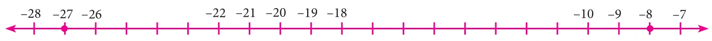
Fig. 1.7
\(-8\) is to the right of \(-27\) and hence \((-8) > (-27)\). This leads to the result that \(\frac{-8}{12} > \frac{-27}{12}\) and consequently we conclude that \(\frac{-2}{3} > \frac{9}{-4}\).
Example 1.7
Write the following rational numbers in ascending and descending order.
First make the denominators to be positive and write the numbers in standard form as \(\frac{-3}{5}\), \(\frac{-7}{10}\), \(\frac{-15}{20}\), \(\frac{-14}{30}\), \(\frac{-8}{15}\). Here, the LCM of 5, 10, 15, 20 and 30 is 60 (Find it!). Change the given rational numbers in equivalent form with common denominator 60.
So, the ascending order is \(\frac{-15}{20}\), \(\frac{7}{-10}\), \(\frac{-3}{5}\), \(\frac{-8}{15}\) and \(\frac{14}{-30}\).
Also, its reverse order gives the descending order as \(\frac{14}{-30}\), \(\frac{-8}{15}\), \(\frac{-3}{5}\), \(\frac{7}{-10}\) and \(\frac{-15}{20}\).
1.2.7 Rational numbers between any two given rational numbers
Consider the integers 4 and 10. We can locate five integers namely 5, 6, 7, 8 and 9 (shown in dark dots) between them. Isn't it?
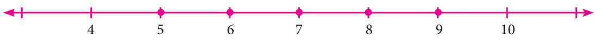
Fig. 1.8
How many integers can you find between 3 and \(-2\)? List them. Are there any integers between \(-5\) and \(-4\)? No, is the answer.
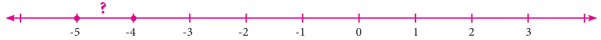
Fig. 1.9
This shows that the choice of integers between two given integers is limited. They are finite in number or may be nothing between them. Let us think what will happen, if we consider rational numbers instead of integers? We will see that we can have many rational numbers between any two rational numbers. There are at least two methods to find more rational numbers between any two rational numbers.
Method of Averages:
We know that is the average of any two numbers always lies at the middle of them. For example, the average of 2 and 8 is \(\frac{2+8}{2} = 5\) and this 5 lies at the middle of 2 and 8 as shown in the following number line.
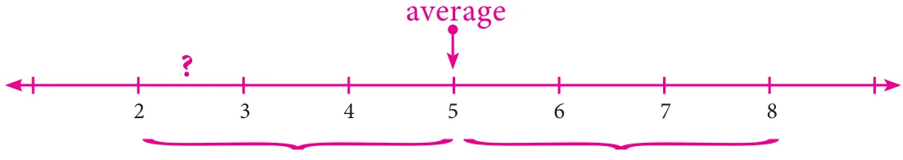
Fig. 1.10
We use this idea to find more rational numbers between any two rational numbers.
Example 1.8
Find a rational number between \(\frac{1}{3}\) and \(\frac{5}{9}\).
Solution:
The average of \(\frac{1}{3}\) and \(\frac{5}{9}\) = \(\frac{1}{2}\left(\frac{1}{3} + \frac{5}{9}\right) = \frac{1}{2}\left(\frac{1}{3} \times \frac{3}{3} + \frac{5}{9}\right)\) (Why?)
Note that \(\frac{4}{9}\) is one rational number we have found in between \(\frac{1}{3}\) and \(\frac{5}{9}\) and we can find many such numbers in between \(\frac{1}{3}\) and \(\frac{5}{9}\). This shows that between any two rational numbers there lie an unlimited number of rational numbers! Mathematically, we say that there lie an infinite number of rational numbers between any two rational numbers.
Think
Are there any rational numbers between \(\frac{-7}{11}\) and \(\frac{6}{-11}\)?
Method of Equivalent rational numbers:
We can use the idea of equivalent fractions to get more rational numbers between any two rational numbers. This is clearly explained in the following illustration.
Illustration:
Let us now try to find more rational numbers say between \(\frac{3}{7}\) and \(\frac{4}{7}\) by the following visual explanation on the number line. If we get the multiples of the denominator of the equivalent rational numbers (the easy one will be to multiply by 10), then we can insert as many rational numbers as we want. We shall write \(\frac{3}{7}\) as \(\frac{30}{70}\) and \(\frac{4}{7}\) as \(\frac{40}{70}\) and see that there are 9 rational numbers between \(\frac{3}{7}\) and \(\frac{4}{7}\) as given in the number line below.
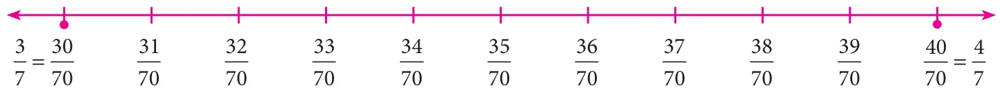
Fig. 1.12
Now, if we want more rational numbers between say \(\frac{37}{70}\) and \(\frac{38}{70}\) we can write \(\frac{37}{70}\) as \(\frac{370}{700}\) and \(\frac{38}{70}\) as \(\frac{380}{700}\). Then again, we will get nine rational numbers between \(\frac{37}{70}\) and \(\frac{38}{70}\) as \(\frac{371}{700}\), \(\frac{372}{700}\), \(\frac{373}{700}\), \(\frac{374}{700}\), \(\frac{375}{700}\), \(\frac{376}{700}\), \(\frac{377}{700}\), \(\frac{378}{700}\) and \(\frac{379}{700}\).
The following diagram helps us to understand this nicely with a magnifying lens used between 0 and 1 and further zoomed into the fractional parts also.
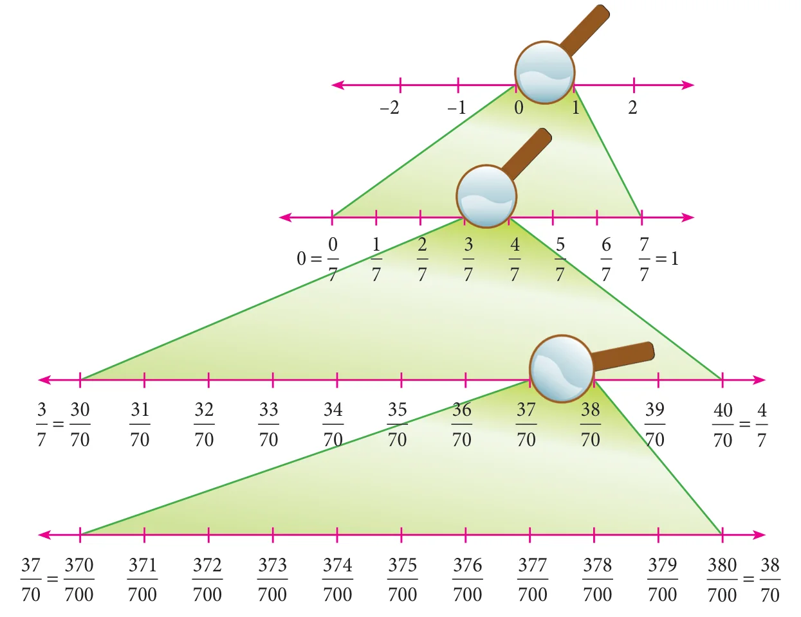
Fig. 1.13
Thus, we can see that there are an unlimited number of rational numbers between any two given rational numbers.
Example 1.9
Find atleast two rational numbers between \(\frac{-3}{4}\) and \(\frac{-2}{5}\).
Solution:
The denominators are different for the given rational numbers. The LCM of the denominators 4 and 5 is 20. Make the rational numbers such that they have common denominators as 20. Here,
It is easy now to find and insert rational numbers between \(\frac{-15}{20}\) and \(\frac{-8}{20}\) as shown below.
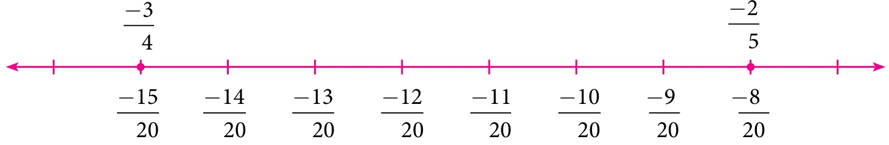
Fig. 1.14
We can list a few rational numbers as \(\frac{-14}{20}\), \(\frac{-13}{20}\), \(\frac{-12}{20}\), \(\frac{-11}{20}\), \(\frac{-10}{20}\) and \(\frac{-9}{20}\) between \(\frac{-15}{20}\) and \(\frac{-8}{20}\). Are these the only rational numbers between \(\frac{-15}{20}\) and \(\frac{-8}{20}\)? Think! Try to find 10 more rational numbers between them, if possible!
Note
We can find many rational numbers between \(\frac{-7}{11}\) and \(\frac{5}{-9}\) quickly as given below: The range of rational numbers can be got by the cross multiplication of denominators with the numerators after writing the given fractions in standard form. The cross multiplication here
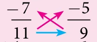
gives the range of rational numbers from \(-63\) to \(-55\) with the denominator 99. This is nothing but making the given rational numbers equivalent with the denominator 99!
Exercise 1.1
Fill in the blanks:
\(\frac{-19}{5}\) lies between the integers \(\underline{\qquad}\) and \(\underline{\qquad}\).
The decimal form of the rational number \(\frac{15}{-4}\) is \(\underline{\qquad}\).
The rational numbers \(\frac{-8}{3}\) and \(\frac{8}{3}\) are equidistant from \(\underline{\qquad}\).
The next rational number in the sequence \(\frac{-15}{24}, \frac{20}{-32}, \frac{-25}{40}\) is \(\underline{\qquad}\).
The standard form of \(\frac{58}{-78}\) is \(\underline{\qquad}\).
Say True or False:
0 is the smallest rational number.
\(\frac{-4}{5}\) lies to the left of \(\frac{-3}{4}\).
\(\frac{-19}{5}\) is greater than \(\frac{15}{-4}\).
The average of two rational numbers lies between them.
There are an unlimited number of rational numbers between 10 and 11.
Find the rational numbers represented by each of the question marks marked on the following number lines.
The points S, Y, N, C, R, A, T, I and O on the number line are such that CN=NY=YS and RA=AT=TI=IO. Find the rational numbers represented by the letters Y, N, A, T and I.
Draw a number line and represent the following rational numbers on it.
(i) \(\frac{9}{4}\) (ii) \(\frac{-8}{3}\) (iii) \(\frac{-17}{-5}\) (iv) \(\frac{15}{-4}\)
Write the decimal form of the following rational numbers.
(i) \(\frac{1}{11}\) (ii) \(\frac{13}{4}\) (iii) \(\frac{-18}{7}\) (iv) \(1\frac{2}{5}\) (v) \(-3\frac{1}{2}\)
List any five rational numbers between the given rational numbers.
(i) \(-2\) and 0 (ii) \(\frac{-1}{2}\) and \(\frac{3}{5}\) (iii) \(\frac{1}{4}\) and \(\frac{7}{20}\) (iv) \(\frac{-6}{4}\) and \(\frac{-23}{10}\)
Use the method of averages to write 2 rational numbers between \(\frac{14}{5}\) and \(\frac{16}{3}\).
Compare the following pairs of rational numbers.
(i) \(\frac{-11}{5}, \frac{-21}{8}\) (ii) \(\frac{3}{-4}, \frac{-1}{2}\) (iii) \(\frac{2}{3}, \frac{4}{5}\).
Arrange the following rational numbers in ascending and descending order.
Write the given rational numbers in the standard form and then add them.
So, \(\frac{-6}{11} + \frac{8}{11} + \frac{-12}{11} = \frac{-6+8-12}{11} = \frac{-10}{11}\)
Type 2: Adding numbers that have different denominators
After writing the given rational numbers in the standard form, use the LCM of their denominators to convert the numbers into equivalent rational numbers with a common denominator so that this reduces to Type1.
The additive inverse of a rational number is another rational number which when added to the given number, gives zero. For example, \(\frac{4}{3}\) and \(\frac{-4}{3}\) are additive inverses of each other, since their sum is zero.
1.3.3 Subtraction
Subtraction is simply adding the additive inverse.
Example 1.12
Subtract: \(\frac{9}{17}\) from \(\frac{-12}{17}\)
Product of two or more rational numbers is found by multiplying the corresponding numerators and denominators of the numbers and then writing them in the standard form.
Example 1.14
Evaluate: (i) \(\frac{-5}{8} \times \frac{7}{3}\) (ii) \(\frac{-6}{-11} \times (-4)\)
If the product of two rational numbers is 1, then each of them is said to be the reciprocal or the multiplicative inverse of the other. For the rational number a, its reciprocal is \(\frac{1}{a}\) and vice versa since \(a \times \frac{1}{a} = \frac{1}{a} \times a = 1\). For the rational number \(\frac{a}{b}\), its multiplicative inverse is \(\frac{b}{a}\) and vice versa since \(\frac{a}{b} \times \frac{b}{a} = \frac{b}{a} \times \frac{a}{b} = 1\).
1.3.6 Division
The idea of reciprocals of fractions is extended to the division of rational numbers also. To divide a given rational number by another rational number, we have to multiply the given rational number by the reciprocal of the second rational number. That is, division is simply multiplying the dividend by the multiplicative inverse of the divisor.
The sum of two rational numbers is \(\frac{4}{5}\). If one number is \(\frac{2}{15}\), then find the other.
Solution:
Let the other number be \(x\).
Given, \(\frac{2}{15} + x = \frac{4}{5}\)
\(\Rightarrow x = \frac{4}{5} - \frac{2}{15} = \frac{12 - 2}{15} = \frac{10}{15} \Rightarrow x = \frac{2}{3}\)
Example 1.17
The product of two rational numbers is \(\frac{-2}{3}\). If one number is \(\frac{3}{7}\), then find the other.
Solution:
Let the other number be \(x\).
Given, \(\frac{3}{7} \times x = \frac{-2}{3}\)
Multiplying by the reciprocal of \(\frac{3}{7}\), that is \(\frac{7}{3}\) on both sides,
\(\Rightarrow \frac{7}{3} \times \frac{3}{7} \times x = \frac{7}{3} \times \frac{-2}{3}\)
\(\Rightarrow x = \frac{-14}{9}\)
Example 1.18
One roll of ribbon is \(18\frac{3}{4}\) m long. Sankari has four full rolls and one–third of another roll. How many metres of ribbon does Sankari have in total?
Find the rational numbers that should be added and subtracted so that they will make the sum \(3\frac{1}{2} + 1\frac{3}{4} + 2\frac{3}{8}\) to the nearest whole number.
\(= \frac{61}{8} = 7\frac{5}{8}\), which lies between the whole numbers 7 and 8.
If we subtract \(\frac{5}{8}\) from \(7\frac{5}{8}\), it becomes 7. If we add \(\frac{3}{8}\) to \(7\frac{5}{8}\), it becomes \(7 + \frac{5}{8} + \frac{3}{8} = 7 + 1 = 8\).
Example 1.20
A student instead of multiplying a number by \(\frac{8}{9}\), by mistake divided it by \(\frac{8}{9}\). If the difference between the correct answer and the answer got by him is 34, then find the number.
Solution:
Let the number be \(x\).
The student had to find \(\frac{8x}{9}\) but, he had found \(\dfrac{x}{\left(\frac{8}{9}\right)}\), that is \(\frac{9x}{8}\).
Subtract : \(\frac{-8}{44}\) from \(\frac{-17}{11}\).
Evaluate : (i) \(\frac{9}{132} \times \frac{-11}{3}\) (ii) \(\frac{-7}{27} \times \frac{24}{-35}\)
Divide : (i) \(\frac{-21}{5}\) by \(\frac{-7}{-10}\) (ii) \(\frac{-3}{13}\) by \(-3\) (iii) \(-2\) by \(\frac{-6}{15}\)
Find \((a + b) \div (a - b)\) if
(i) \(a = \frac{1}{2}, b = \frac{2}{3}\) (ii) \(a = \frac{-3}{5}, b = \frac{2}{15}\)
Simplify : \(\frac{1}{2} + \left(\frac{3}{2} - \frac{2}{5}\right) \div \frac{3}{10} \times 3\) and show that it is a rational number between 11 and 12.
A student had multiplied a number by \(\frac{4}{3}\) instead of dividing it by \(\frac{4}{3}\) and got 70 more than the correct answer. Find the number.
Objective Type Questions
The standard form of the sum \(\frac{3}{4} + \frac{5}{6} + \left(\frac{-7}{12}\right)\) is \(\underline{\qquad}\).
A mathematical statement is true only if it is 100% true without any exception. If we do the addition, say \(\frac{3}{4} + \frac{1}{4}\) as \(\frac{3+1}{4+4} = \frac{4}{8} = \frac{1}{2}\). This is wrong, since \(\frac{3}{4} + \frac{1}{4} = \frac{3+1}{4} = \frac{4}{4} = 1\).
1.5 Properties of Rational Numbers
Some properties listed here below will be of good use in solving problems.
1.5.1 Closure property for the collection Q of rational numbers
Closure property for Addition
For any two rational numbers a and b, the sum a + b is also a rational number.
Closure property for Multiplication
For any two rational numbers a and b, the product ab is also a rational number.
Illustration
Try this
The closure property on integers holds for subtraction and not for division. What about rational numbers? Verify.
Take \(a = \frac{3}{4}\) and \(b = \frac{-1}{2}\)
Now, \(a + b = \frac{3}{4} + \frac{-1}{2} = \frac{3}{4} + \frac{-2}{4} = \frac{3-2}{4} = \frac{1}{4}\) is in \(\mathbb{Q}\)
Also, \(a \times b = \frac{3}{4} \times \frac{-1}{2} = \frac{-3}{8}\) is in \(\mathbb{Q}\)
1.5.2 Commutative property for the collection Q of rational numbers
Commutative property for Addition
For any two rational numbers a and b, \(a + b = b + a\).
Commutative property for Multiplication
For any two rational numbers a and b, \(ab = ba\) (ab means \(a \times b\) and ba means \(b \times a\)).
Hence, 1 is the multiplicative identity for \(\frac{-3}{7}\)
1.5.5 Inverse property for the collection Q of rational numbers
Additive Inverse property
For any rational number a, there exists a unique rational number \(-a\) such that
\(a + (-a) = (-a) + a = 0\). Here, 0 is the additive identity.
Multiplicative Inverse property
For any rational number b, there exists a unique rational number \(\frac{1}{b}\) such that
\(b \times \frac{1}{b} = \frac{1}{b} \times b = 1\). Here, 1 is the multiplicative identity.
Illustration
Take \(a = \frac{-11}{23}\). Now, \(-a = -\left(\frac{-11}{23}\right) = \frac{11}{23}\)
(1) and (2) shows that \(a \times (b + c) = (a \times b) + (a \times c)\).
Hence, multiplication is distributive over addition for the collection \(\mathbb{Q}\) of rational numbers.
Exercise 1.3
Verify the closure property for addition and multiplication for the rational numbers \(\frac{-5}{7}\) and \(\frac{8}{9}\).
Verify the commutative property for addition and multiplication for the rational numbers \(\frac{-10}{11}\) and \(\frac{-8}{33}\).
Verify the associative property for addition and multiplication for the rational numbers \(\frac{-7}{9}, \frac{5}{6}\) and \(\frac{-4}{3}\).
Verify the distributive property \(a \times (b + c) = (a \times b) + (a + c)\) for the rational numbers \(a = \frac{-1}{2}\), \(b = \frac{2}{3}\) and \(c = \frac{-5}{6}\).
Verify the identity property for addition and multiplication for the rational numbers \(\frac{15}{19}\) and \(\frac{-18}{25}\).
Verify the additive and multiplicative inverse property for the rational numbers \(\frac{-7}{17}\) and \(\frac{17}{27}\).
Objective Type Questions
Closure property is not true for division of rational numbers because of the number
(A) 1 (B) \(-1\) (C) 0 (D) \(\frac{1}{2}\)
\(\frac{1}{2} - \left(\frac{3}{4} - \frac{5}{6}\right) \neq \left(\frac{1}{2} - \frac{3}{4}\right) - \frac{5}{6}\) illustrates that subtraction does not satisfy the \(\underline{\qquad}\) property for rational numbers.
(A) commutative (B) closure (C) distributive (D) associative
Which of the following illustrates the inverse property for addition?
(A) \(\frac{1}{8} - \frac{1}{8} = 0\) (B) \(\frac{1}{8} + \frac{1}{8} = \frac{1}{4}\) (C) \(\frac{1}{8} + 0 = \frac{1}{8}\) (D) \(\frac{1}{8} - 0 = \frac{1}{8}\)
\(\frac{3}{4} \times \left(\frac{1}{2} - \frac{1}{4}\right) = \frac{3}{4} \times \frac{1}{2} - \frac{3}{4} \times \frac{1}{4}\) illustrates that multiplication is distributive over
(A) addition (B) subtraction (C) multiplication (D) division
1.6 Introduction to Square Numbers
More often we write like this:
\(4^2 = 16\)
This says "4 squared is 16"
The 2 at the top stands for squared and it indicates the number of times the number 4 appears in the product \((4^2 = 4 \times 4 = 16)\).
The numbers 1, 4, 9, 16, ... are all square numbers (also called perfect square numbers). Each of them is made up of the product of same two factors.
A natural number \(n\) is called a square number, if we can find another natural number \(m\) such that \(n = m^2\).
Is 49 a square number? Yes, because it can be written as \(7^2\). Is 50 a square number? The following table gives the squares of numbers up to 20.
Try to extend the table up to 50 numbers!
We can now easily verify the following properties of square numbers by referring the table given above:
The square numbers end with 0, 1, 4, 5, 6 and 9 only.
If a number ends with 1 or 9, its square ends with 1.
If a number ends with 2 or 8, its square ends with 4.
If a number ends with 3 or 7, its square ends with 9.
If a number ends with 4 or 6, its square ends with 6.
If a number ends with 5 or 0, its square also ends with 5 or 0 respectively.
Square of an odd number is always odd and the square of an even number is always even.
Numbers that end with 2,3,7 and 8 are not perfect squares.
Think
Is the square of a prime number, prime?
Will the sum of two perfect squares always be a perfect square? What about their difference and their product?
Try these
Which among 256, 576, 960, 1025, 4096 are perfect square numbers? (Hint: Try to extend the table of squares already seen).
One can judge just by look that each of the following numbers 82, 113, 1972, 2057, 8888, 24353 is not a perfect square. Explain why?
1.6.1 Some more special properties of square numbers
The square of a natural number other than 1, is either a multiple of 3 or exceeds a multiple of 3 by 1.
The square of a natural number, other than 1, is either a multiple of 4 or exceeds a multiple of 4 by 1.
The remainder of a perfect square when divided by 3, is either 0 or 1 but never 2.
The remainder of a perfect square, when divided by 4, is either 0 or 1 but never 2 and 3.
When a perfect square number is divided by 8, the remainder is either 0 or 1 or 4, but will never be equal to 2, 3, 5, 6 or 7.
Note
If a perfect square number ends in zero, then it must end with even number of zeros always. We can verify this for a few numbers in the table given below.
Number
10
20
30
40
...
90
100
110
...
2000
...
Its Square
100
400
900
1600
...
8100
10000
12100
...
4000000
...
Think
Consider the claim: "Between the squares of the consecutive numbers \(n\) and \((n+1)\), there are \(2n\) non-square numbers". Can it be true? How many non-square numbers are there between 2500 and 2601? Verify the claim.
1.7 Square Root
Squaring a number is another mathematical operation just like addition, subtraction, multiplication etc., Most mathematical operations have 'inverse' (meaning 'opposite') operations. For example, subtraction is the inverse of addition, division is the inverse of multiplication etc., Squaring also has an inverse operation namely finding the Square root.
The square root of a number n, written \(\sqrt{n}\) (or) \(n^{1/2}\) , is the number that gives n when multiplied by itself. For example, \(\sqrt{81}\) is 9, because \(9 \times 9 = 81\).
In the adjacent table, we have square roots of all the perfect squares starting from 1 to 100.
If \(11^{2} = 121\), what is \(\sqrt{121}\)? If \(529 = 23^{2}\), what is the square
root of 529? If we know that \(324 = 18^2\), we can immediately tell that \(\sqrt{324}\) is 18.
We have, \(1^2 = 1\) and so 1 is a square root of 1. Similarly,
\((-1)^2 = 1\). So, \((-1)\) is also a square root of 1.
\(2^2 = 4\) and so 2 is a square root of 4. Similarly, \((-2)^2 = 4\). So, \((-2)\) is also a square root of 4.
This continues as \(3^2 = 9\) and so 3 is a square root of 9.
Similarly, \((-3)^2 = 9\). So, \((-3)\) is also a square root of 9. The above examples suggest that there are two integral square roots for a perfect square number. However, in working out the problems, we will take up only positive integral square root. The positive square root of a number is always denoted by the symbol \(\sqrt{\phantom{x}}\). Thus, \(\sqrt{4}\) is 2 (and not \(-2\)). Also, \(\sqrt{9}\) is 3 (and not \(-3\)). We have to remember that this is a universally accepted notation.
1.7.1 Square root through Prime Factorisation
Study the following table giving the prime factors of numbers and those of their squares.
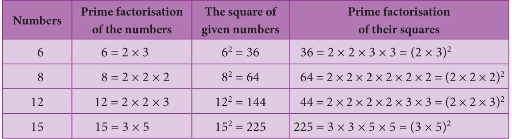
Look at 6 and its prime factors. How many times do 2 and 3 occur in 36 in the list? Now, look at its square 36 and its prime factors. How many times do 2 and 3 occur in 36 here?
Repeat the above task in the case of other numbers 8, 12, and 15 also. (We may also choose our own numbers and their squares). What do we find? We find that,
The number of times a prime factor occurs in the square of a number = twice the number of times it occurs in the prime factorisation of the number.
We use this idea to find the square root of a square number. First, resolve the given number into prime factors. Group the identical factors in pairs and then take one from them to find the square root.
Example 1.22
Find the square root of 324 by prime factorisation.
Solution:
First, resolve the given number into prime factors. Group the identical factors in pairs and then take one from them to find the square root.
Find the least number by which 250 is to be multiplied (or) divided so that the resulting number is a perfect square. Also, find the square root in that case.
Solution:
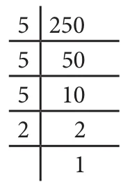
Here, \(250 = 5 \times 5 \times 5 \times 2\)
\(= 5^2 \times 5 \times 2\)
Here, the prime factors 5 and 2 do not have pairs.
Therefore, we can either divide 250 by \(10\ (5 \times 2)\) or multiply 250 by 10.
If we multiply 250 by 10, we get \(2500 = 5^2 \times 5 \times 2 \times 5 \times 2\) and therefore the square root of 2500 would be \(5 \times 5 \times 2 = 50\).
If we divide 250 by 10, we get 25 and in this case we get \(\sqrt{25} = \sqrt{5^2} = 5\).
Here, the prime factor 3 does not have a second pair. Hence, 108 is not a perfect square number.
Think
In this case, if we want to find the smallest factor with which we can multiply or divide 108 to get a square number, what should we do?
1.7.2 Finding the square root of a number by Long Division Method
When we come across numbers with large number of digits, finding their square roots by factorisation becomes lengthy and difficult. Use of long division helps us in such cases. Let us look into the method with a couple of illustrations.
Illustration 1
Find the square root of 576 by long division method.
Step 1:
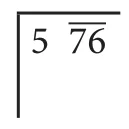
Group the digits in pairs, starting with the digit in the unit's place. Each pair and the remaining digit (if any) is called a period. Put a bar over every pair of digits starting from the right of the given number. If there are odd number of digits, the extreme left digit will be without a bar sign above it.
So, here we have \(5\ \overline{76}\)
Step 2:
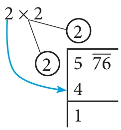
Think of the largest number whose square is equal to or just less than the first period. Take this number as the divisor and also as the quotient. The left extreme number here is 5. The largest number whose square is less than or equal to 5 is 2. This is our divisor and the quotient.
Step 3:
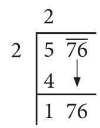
Bring 76 down and write it down to the right of the remainder 1.
Now, the new dividend is 176.
Step 4:
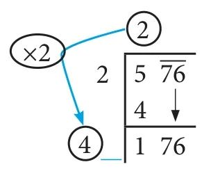
To find the new divisor, multiply the earlier quotient (2) by 2 (always) and write it leaving a blank space next to it.
Step 5:
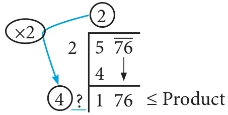
The new divisor is 4 followed by a digit. We should choose this digit next to 4 such that the new quotient multiplied by the new divisor will be less than or equal to 176.
Step 6:
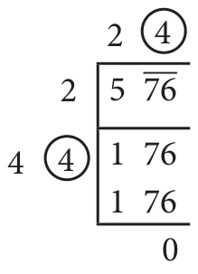
Clearly, the required digit here has to be 4 or 6. (Why?)
When we calculate, \(4\underline{6} \times \underline{6} = 276\) whereas \(4\underline{4} \times \underline{4} = 176\).
Therefore, we put 4 in the blank space and write \(4\underline{4} \times \underline{4} = 176\) below 176 and subtract to get the remainder 0 and the quotient at the top, that is 24 is the square root of 576.
\(\therefore \sqrt{576} = 24\).
Illustration 2
In the following example, follow the figures one after another and try to understand what each figure explains, the stage by stage and the gradual computation of computing the square root of 288369.
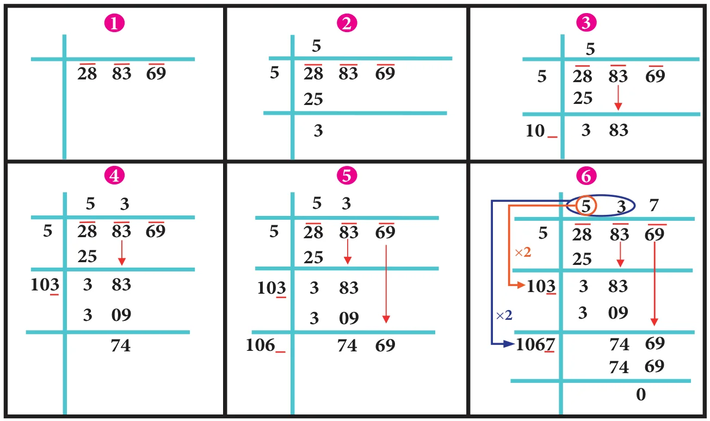
We find that \(\sqrt{288369} = 537\).
Example 1.25
Find the square root of 459684 by long division method.
Solution:
By long division method, we can find the square root of 459684 as given below:
\(\therefore \sqrt{459684} = 678\)
Example 1.26
The area of a square field is \(3136\ \text{m}^2\). Find its perimeter.
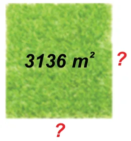
Solution:
Given that the area of the square field \(= 3136\ \text{m}^2\).
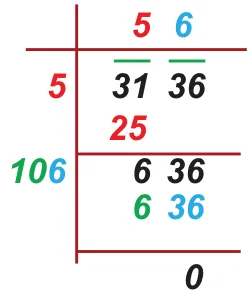
\(\therefore\) The side of square field \(= \sqrt{3136} = 56\ \text{m}\)
\(\therefore\) The perimeter of the square field \(= 4 \times\) side
\(= 4 \times 56\)
\(= 224\ \text{m}\)
Example 1.27
A real estate owner had two plots, a square plot of side 39 m and a rectangular plot of dimensions 100 m length and 64 m breadth. He sells both of these plots and acquires a new square plot of the same area. What is the length of side of his new plot?
Solution:
The transactions can be visualised as follows:
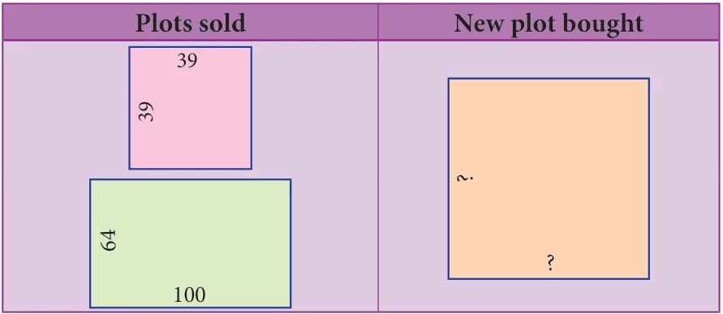
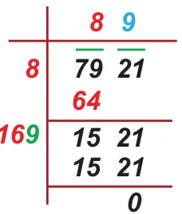
Area of the square plot bought \(=\) Area of the square plot sold \(+\) Area of the rectangular plot sold
\(= 39 \times 39 + 100 \times 64\)
\(= 1521 + 6400\)
\(= 7921\ \text{m}^2\)
Length of a side of the new square plot \(= \sqrt{7921} = 89\ \text{m}\)
Try these
Find the square root by long division method: 1. 400 2. 1764 3. 9801
1.7.3 Number of digits in the square root of a perfect square number
We made use of bars to find the square root in the division method. This marking bars help us to find the number of digits in the square root of a perfect square number. Observe the following examples (with bars shown as if we compute square root by division procedure).
Hence, we conclude that the number of bars indicates the number of digits in the square root.
Try these
Without calculating the square root, guess the number of digits in the square root of the following numbers: 1. 14400 2. 390625 3. 100000000
1.7.4 Square root of decimal numbers
To compute the square root of numbers in the decimal form, we simply follow the following steps:
Step 1:
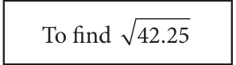
Make even number of decimal places even by affixing a zero on the extreme right of the digit in the decimal part (only if required).
Step 2:
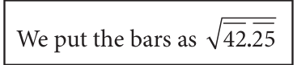
The number has an integral part and a decimal part. In the integral part, mark the bars as done in the case of division method to find the square root of a perfect square number.
Step 3:
In the decimal part, mark the bars on every pair of digits beginning with the first decimal place.
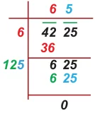
Step 4:
Now, calculate the square root by long division method.
Step 5:
Put the decimal point in the square root as soon as the integral part is exhausted. \(\therefore \sqrt{42.25} = 6.5\)
1.7.5 Square root of product and quotient of numbers
For any two positive numbers \(a\) and \(b\). we have
(i) \(\sqrt{ab} = \sqrt{a} \times \sqrt{b}\) and (ii) \(\sqrt{\frac{a}{b}} = \frac{\sqrt{a}}{\sqrt{b}}\) \((b \neq 0)\)
Find the square root of 1. 5.4756 2. 19.36 3. 116.64
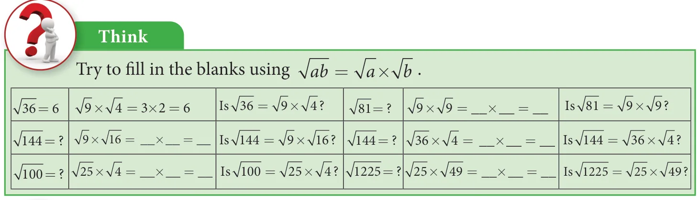
Activity
Attempt to prepare a table of square root problems as in the above case to show that if \(a\) and \(b\) are two perfect square numbers, then \(\sqrt{\frac{a}{b}} = \frac{\sqrt{a}}{\sqrt{b}}\) \((b \neq 0)\). We can use this idea to compute certain square-root problems easily.
Example 1.29
Find the value of \(\sqrt{42.25}\).
Solution:
We can write this as \(\sqrt{42.25} = \sqrt{\frac{4225}{100}} = \frac{\sqrt{4225}}{\sqrt{100}}\)
Now, it is easy to compute the square root of the whole number 4225 by long division method as \(\sqrt{4225} = 65\) and so, we now get \(\sqrt{42.25} = \sqrt{\frac{4225}{100}} = \frac{\sqrt{4225}}{\sqrt{100}} = \frac{65}{10} = 6.5\)
This is another way of tackling problems of square root of decimal numbers without any botheration of decimal symbol.
Try these
Using this method, find the square root of the numbers 1.2321 and 11.9025.
Example 1.30
Simplify: (i) \(\sqrt{12} \times \sqrt{3}\) (ii) \(\sqrt{\frac{98}{162}}\)
Solution:
(i) Remembering the rule, \(\sqrt{a} \times \sqrt{b} = \sqrt{ab}\)
(ii) \(\sqrt{1\frac{9}{16}} = \sqrt{\frac{25}{16}} = \sqrt{\frac{5^2}{4^2}} = \frac{5}{4} = 1\frac{1}{4}\)
Remark: In the case of the (ii) problem one may be tempted to give the answer immediately as \(1\frac{3}{4}\), but this is not correct since you have to convert the mixed fraction into an improper fraction and then use the rule \(\sqrt{\frac{a}{b}} = \frac{\sqrt{a}}{\sqrt{b}}\) \((b \neq 0)\)
1.7.6 Approximating square roots
Try these
Write the numbers in ascending order.
\(4, \sqrt{14}, 5\)
\(7, \sqrt{65}, 8\)
Can you write the given numbers \(\sqrt{40}\), 6 and 7 in ascending order? Here 40 is not a square number and so we cannot determine its root easily. However, we can estimate an approximation to \(\sqrt{40}\) and use it here.
We know that the two closest squares surrounding 40 are 36 and 49.
Thus, \(36 < 40 < 49\) which can be written as \(6^2 < 40 < 7^2\).
Considering the square root, we have \(6 < \sqrt{40} < 7\).
Exercise 1.4
Fill in the blanks:
The ones digit in the square of 77 is \(\underline{\qquad}\).
The number of non-square numbers between \(24^{2}\) and \(25^{2}\) is \(\underline{\qquad}\).
The number of perfect square numbers between 300 and 500 is \(\underline{\qquad}\).
If a number has 5 or 6 digits in it, then its square root will have \(\underline{\qquad}\) digits.
The value of \(\sqrt{180}\) lies between integers \(\underline{\qquad}\) and \(\underline{\qquad}\).
Say True or False:
When a square number ends in 6, its square root will have 6 in the unit's place.
A square number will not have odd number of zeros at the end.
The number of zeros in the square of 91000 is 9.
The square of 75 is 4925.
The square root of 225 is 15.
Find the square of the following numbers.
(i) 17 (ii) 203 (iii) 1098
Examine if each of the following is a perfect square.
(i) 725 (ii) 190 (iii) 841 (iv) 1089
Find the square root by prime factorisation method.
(i) 1764 (ii) 6889 (iii) 11025 (iv) 17956 (v) 418609
Estimate the value of the following square roots to the nearest whole number.
(i) \(\sqrt{440}\) (ii) \(\sqrt{800}\) (iii) \(\sqrt{1020}\)
Find the square root of the following decimal numbers and fractions.
(i) 2.89 (ii) 67.24 (iii) 2.0164 (iv) \(\frac{144}{225}\) (v) \(7\frac{18}{49}\)
Find the least number that must be subtracted to 6666 so that it becomes a perfect square. Also, find the square root of the perfect square thus obtained.
Find the least number by which 1800 should be multiplied so that it becomes a perfect square. Also, find the square root of the perfect square thus obtained.
Objective Type Questions
The square of 43 ends with the digit \(\underline{\qquad}\).
(A) 9 (B) 6 (C) 4 (D) 3
\(\underline{\qquad}\) is added to \(24^{2}\) to get \(25^{2}\).
The number of digits in the square root of 123454321 is \(\underline{\qquad}\).
(A) 4 (B) 5 (C) 6 (D) 7
1.8 Cubes and Cube Roots
If you multiply a number by itself and then by itself again, the result is a cube number. This means that a cube number is a number that is the product of three identical numbers. If \(n\) is a number, its cube is represented by \(n^{3}\).
Cube numbers can be represented visually as 3D cubes comprising of single unit cubes. Cube numbers are also called as perfect cubes. The perfect cubes of natural numbers are 1, 8, 27, 64, 125, 216, ... and so on.
1.8.1 Properties of cubes of numbers
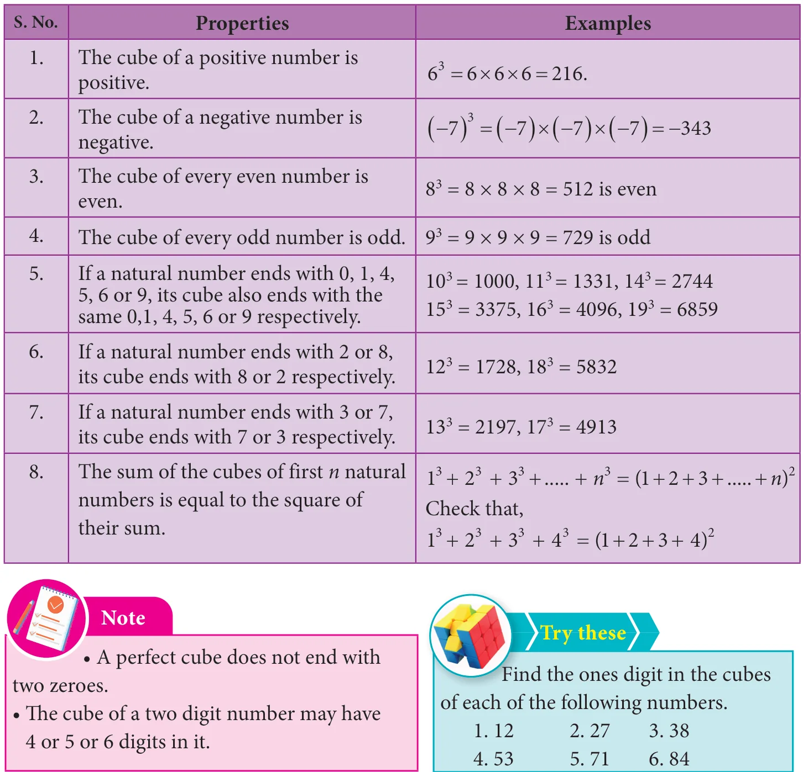
1.8.2 Cube root
The cube root of a number is the value that when cubed gives the original number. For example, the cube root of 27 is 3 because when 3 is cubed we get 27.
Notation:
The cube root of a number \(x\) is denoted as
\(\sqrt[3]{x}\) (or) \(x^{\frac{1}{3}}\).
Here are some more cubes and cube roots:
\(\sqrt[3]{1} = 1\) since \(1^{3} = 1\), \(\sqrt[3]{8} = 2\) since \(2^{3} = 8\),
\(\sqrt[3]{27} = 3\) since \(3^{3} = 27\), \(\sqrt[3]{64} = 4\) since \(4^{3} = 64\),
\(\sqrt[3]{125} = 5\) since \(5^{3} = 125\) and so on.
Example 1.32
Is 400 a perfect cube?
Solution:
By prime factorisation, we have \(400 = \underline{2 \times 2 \times 2} \times 2 \times 5 \times 5\).
There is only one triplet. To make further triplets, we will need two more 2's and one more 5. Therefore, 400 is not a perfect cube.
Example 1.33
Find the smallest number by which 675 must be multiplied to obtain a perfect cube.
The ones digits in the cube of 73 is \(\underline{\qquad}\).
The maximum number of digits in the cube of a two digit number is \(\underline{\qquad}\).
The smallest number to be added to 3333 to make it a perfect cube is \(\underline{\qquad}\).
The cube root of \(540 \times 50\) is \(\underline{\qquad}\).
The cube root of 0.000004913 is \(\underline{\qquad}\).
Say True or False:
The cube of 24 ends with the digit 4.
Subtracting \(10^{3}\) from 1729 gives \(9^{3}\).
The cube of 0.0012 is 0.000001728.
79570 is not a perfect cube.
The cube root of 250047 is 63.
Show that 1944 is not a perfect cube.
Find the smallest number by which 10985 should be divided so that the quotient is a perfect cube.
Find the smallest number by which 200 should be multiplied to make it a perfect cube.
Find the cube root of \(24 \times 36 \times 80 \times 25\).
Find the cube root of 729 and 6859 by prime factorisation.
What is the square root of cube root of 46656?
If the cube of a squared number is 729, find the square root of that number.
Find the two smallest perfect square numbers which when multiplied together gives a perfect cube number.
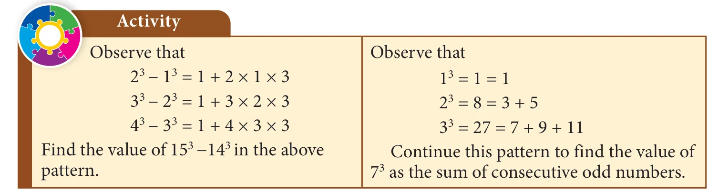
1.9 Exponents and Powers
We know how to express some numbers as squares and cubes. For
example, we write \(5^2\) for 25 and \(5^3\) for 125. In general terms, an expression that represents repeated multiplication of the same factor is called a power. The number 5 is called the base and the number 2 is called the exponent (more often called as power). The exponent corresponds to the number of times the base is used as a factor.
1.9.1 Powers with positive exponents
Value of powers given by positive whole number exponents quite often increase rapidly. Observe the following example:
At this rate of increase, what do you think \(2^{100}\) will be?
In fact, \(2^{100} = 1267650600228229401496703205376\)
Thus, we understand that the positive exponential notation with positive power could be useful when we come across with large numbers.
1.9.2 Powers with zero and negative exponents
Observe this pattern:
\(2^{5} = 32\)
\(2^{4} = 16\)
\(2^{3} = 8\)
\(2^{2} = 4\)
\(2^{1} = 2\)
\(2^{0} = \;?\)
Starting from the beginning, what happens in the successive steps? We find that the result is half of that of the previous step. So, what can we say about \(2^{0}\)? If we prepare a table like this for \(3^{5}\), \(3^{4}\), \(3^{3}\), and so on what will it tell us about \(3^{0}\)? We can use the same process as in this pattern, to conclude that any non-zero number raised to the zero exponent must result in 1. Thus,
\(a^{0} = 1\), where \(a \neq 0\)
Let us see what happens if we extend the above pattern further downward.
\(2^{3} = 8\)
\(2^{2} = 4\)
\(2^{1} = 2\)
\(2^{0} = 1\)
\(2^{-1} = \frac{1}{2}\)
\(2^{-2} = \frac{1}{4}\)
\(2^{-3} = \frac{1}{8}\)
As before, starting from the beginning, in the successive steps, we find that the result is half of that of the previous step. Since \(2^{0} = 1\), the next step is \(2^{-1}\), whose value is the previous step's value 1, divided by 2, that is \(\frac{1}{2}\). Next is \(2^{-2}\), which is the same as \(\frac{1}{2}\) divided by 2, that is \(\frac{1}{4}\) and so on. Thus,
In general, \(a^{-m} = \frac{1}{a^{m}}\), where \(m\) is an integer
1.9.3 Expanded form of numbers using exponents
In the lower classes, we have learnt how to write a whole number in the expanded form.
For example, \(5832 = 5 \times 1000 + 8 \times 100 + 3 \times 10 + 2 \times 1\)
\(= 5 \times 10^{3} + 8 \times 10^{2} + 3 \times 10^{1} + 2\) (when we use exponential notation).
What shall we do if we get decimal places? Powers of 10 with negative exponents come to our rescue! Thus, \(58.32 = 50 + 8 + \frac{3}{10} + \frac{2}{100}\)
Expand the following numbers using exponents: 1. 8120 2. 20305 3. 3652.01 4. 9426.521
1.9.4 Laws of Exponents
Laws of exponents arise out of certain basic ideas. A positive exponent of a number indicate how many times we use that number in a multiplication whereas a negative exponent suggests us how many times we use that number in a division, since the opposite of multiplying is dividing.
Product law According to this law, when multiplying two powers that have the same base, we can add the exponents. That is,
where \(a\) \((a \neq 0)\), \(m\), \(n\) are integers. Note that the base should be the same in both the quantities.
Examples:
\(2^{3} \times 2^{2} = 2^{5}\) by law (meaning \(8 \times 4 = 32\) and note that it is not \(2^{3 \times 2}\))
\((-2)^{-4} \times (-2)^{-3} = (-2)^{(-4)+(-3)}\) by law and so \(= (-2)^{-7}\)
\((-5)^{3} \times (-5)^{-3} = (-5)^{3-3}\) by law and so \(= (-5)^{0} = 1\)
Quotient law
According to this law, when dividing two powers that have the same base we can subtract the exponents. That is,
where \(a\) \((a \neq 0)\), \(m\), \(n\) are integers. Note that the base should be the same in both the quantities. How does it work? Study the following examples.
Examples:
\(\frac{(-3)^{5}}{(-3)^{2}} = (-3)^{5-2}\) by law and \((-3)^{3} = -27\)
Find \(x\) so that \((-7)^{x+2} \times (-7)^{5} = (-7)^{10}\)
Solution:
\((-7)^{x+2} \times (-7)^{5} = (-7)^{10}\)
\((-7)^{x+2+5} = (-7)^{10}\)
Since the bases are equal, we equate the exponents to get
\(x + 7 = 10\)
\(\Rightarrow x = 10 - 7 = 3\)
1.9.5 Standard Form and Scientific Notation
Standard form of a number is just the number as we normally write it. We use expanded notation to show the value of each digit. That is, it is exhibited as a sum of each digit duly multiplied by its matching place value (like ones, tens, hundreds etc.,). For example, 195 is in standard form. It can be expanded as \(195 = 1 \times 100 + 9 \times 10 + 5 \times 1\).
Astronomers, biologists, engineers, physicists and many others come across quantities whose measures require very small or very large numbers. If they write the numbers in standard form, it may not help us to understand or make computations easily. Scientific notation is a way to make these numbers easier to work with.
To write in scientific notation, follow the form \(S \times 10^{a}\), where S is a number (integer or integer with decimal) between 1 and 10, but not 10 itself, and a is a positive or negative integer. Thus, a number in scientific notation is written as the product of a number (integer or integer with decimal) and a power of 10. We move the decimal place forward or backward until we have a number from 1 to 9. Then, we add a power of ten that tells how many places you moved the decimal forward or backward.
Examples:
Some more examples:
The diameter of the earth is 12756000 miles. This can be easily written in scientific form as \(1.2756 \times 10^{7}\) miles.
The volume of Jupiter is about 143300000000000 km³. This can be easily written in scientific form as \(1.433 \times 10^{14}\) km³.
The size of a bacterium is 0.00000085 mm. This can be easily written in scientific form as \(8.5 \times 10^{-7}\) mm.
Example 1.39
Combine the scientific notations: (i) \((7 \times 10^{2})(5.2 \times 10^{7})\) (ii) \((3.7 \times 10^{-5})(2 \times 10^{-3})\)
Write the following scientific notations in standard form:
\(2.27 \times 10^{-4}\) (ii) Light travels at \(1.86 \times 10^{5}\) miles per second.
Solution:
\(2.27 \times 10^{-4} = 0.000227\)
Light travels at \(1.86 \times 10^{5}\) miles per second \(= 186000\) miles per second
Try these
Write in standard form: Mass of planet Uranus is \(8.68 \times 10^{25}\) kg.
Write in scientific notation: (i) 0.000012005 (ii) 4312.345 (iii) 0.10524 (iv) The distance between the Sun and the planet Saturn \(1.4335 \times 10^{12}\) miles.
Exercise 1.6
Exercise 1.6
Fill in the blanks:
\((-1)^{\text{even integer}}\) is _______.
For \(a \ne 0\), \(a^{0}\) is _______.
\(4^{-3} \times 5^{-3} =\) _______.
\((-2)^{-7} =\) _______.
\(\left(-\frac{1}{3}\right)^{-5} =\) _______.
Say True or False:
If \(8^{x} = \frac{1}{64}\), the value of \(x\) is \(-2\).
The simplified form of \((256)^{-\frac{1}{4}} \times 4^{2}\) is \(\frac{1}{4}\).
Using the power rule, \((3^{7})^{-2} = 3^{5}\).
The standard form of \(2 \times 10^{-4}\) is 0.0002.
The scientific form of 123.456 is \(1.23456 \times 10^{-2}\).
If \(\frac{3}{4}\) of a box of apples weighs 3 kg and 225 gm, how much does a full box of apples weigh?
Mangalam buys a water jug of capacity \(3 \frac{4}{5}\) litre. If she buys another jug which is \(2\frac{2}{3}\) times as large as the smaller jug, how many litre can the larger one hold?
Ravi multiplied \(\frac{25}{8}\) and \(\frac{16}{15}\) and he says that the simplest form of this product is \(\frac{10}{3}\) and Chandru says the answer in the simplest form is \(3 \frac{1}{3}\). Who is correct? (or) Are they both correct? Explain.
Find the length of a room whose area is \(\frac{153}{10}\) sq.m and whose breadth is \(2\frac{11}{20}\) m.
There is a large square portrait of a leader that covers an area of 4489 cm\(^2\). If each side has a 2 cm liner, what would be its area?
A greeting card has an area 90 cm\(^2\). Between what two whole numbers is the length of its side?
225 square shaped mosaic tiles, each of area 1 square decimetre exactly cover a square shaped verandah. How long is each side of the square shaped verandah?
If \(\sqrt[3]{1906624} \times \sqrt{x} = 3100\), find \(x\).
If \(2^{m-1} + 2^{m+1} = 640\), then find \(m\).
Give the answer in scientific notation: A human heart beats at an average of 80 beats per minute. How many times does it beat in i) an hour? ii) a day? iii) a year? iv) 100 years?
Challenging Problems
In a map, if 1 inch refers to 120 km, then find the distance between two cities B and C which are \(4\frac{1}{6}\) inches and \(3\frac{1}{3}\) inches from the city A which lies between the cities B and C.
Give an example and verify each of the following statements.
The collection of all non-zero rational numbers is closed under division.
Subtraction is not commutative for rational numbers.
Division is not associative for rational numbers.
Distributive property of multiplication over subtraction is true for rational numbers. That is, \(a(b - c) = ab - ac\).
The mean of two rational numbers is rational and lies between them.
If \(\frac{1}{4}\) of a ragi adai weighs 120 grams, what will be the weight of \(\frac{2}{3}\) of the same ragi adai?
If \(p + 2q = 18\) and \(pq = 40\), find \(\frac{2}{p} + \frac{1}{q}\).
Find \(x\) if \(5\frac{x}{5} \times 3\frac{3}{4} = 21\).
By how much does \(\frac{1}{\left(\frac{10}{11}\right)}\) exceed \(\frac{\left(\frac{1}{10}\right)}{11}\) ?
A group of 1536 cadets wanted to have a parade forming a square design. Is it possible? If it is not possible, how many more cadets would be required?
Evaluate: \(\sqrt{286225}\) and use it to compute \(\sqrt{2862.25} + \sqrt{28.6225}\)
Order the following from the least to the greatest: \(16^{25}\), \(8^{100}\), \(3^{500}\), \(4^{400}\), \(2^{600}\)
SUMMARY
A number that can be expressed in the form \(\frac{a}{b}\) where \(a\) and \(b\) are integers and \(b \neq 0\) is called a rational number.
All natural numbers, whole numbers, integers and fractions are rational numbers.
Every rational number can be represented on a number line.
0 is neither a positive nor a negative rational number.
A rational number \(\frac{a}{b}\) is said to be in the standard form if its denominator \(b\) is a positive integer and \(\text{HCF}\,(a,b)=1\)
Ict Corner
Step-1 Open the Browser and type www.Geogebra.com (or) scan the QR CODE given below.
Step-2 Type Rational Numbers on the search column
Step-3 Move the numerator and denominator slide to show the different rational numbers and click the number line models to show the number line.
Through this activity you will know about the rational numbers, operations on them and study their properties as well.
Step 1 Step 2
Web URL rational numbers (rational number links) Web URL https://www.geogebra.org/m/n92AKzBF#material/ca5D7VbZ
*Pictures are indicatives only. *If browser requires, allow Flash Player or Java Script to load the page.
Ict Corner
Step-1 Open the Browser type the URL Link given below (or) Scan the QR Code. GeoGebra work sheet named "8th Standard III term" will open. Select the work sheet named "Square root_prime factors"
Step-2 Click on " NEW PROBLEM" and check the calculation.
Expected Outcome
Step 1 Step 2
Browse in the link Numbers: https://www.geogebra.org/m/xmm5kj9r or Scan the QR Code.
Measurements
2.1 Introduction
2 MEASUREMENTS
Learning Objectives
To know the parts of a circle.
To calculate the length of arc, area and circumference of a sector.
To calculate the area and the perimeter of combined plane figures.
To understand the representation of 3-D shapes in 2-D.
To understand the representation of 3-D objects with cubes.
2.1 Introduction
An important aspect in everyone's day-to-day life is 'to measure'. Measuring the length of a rope, the distance between two places, finding the perimeter and area of plots and lands, building the structures under specified measures etc., are a few of the many situations where the concept of 'measure' is used.
It is said that the biggest invention by man is the wheel. The wheel is otherwise called as the 'cradle of invention'. What is the shape of a wheel? Circle, isn't it? In the things we use, apart from circles, we can also see different shapes like triangles, squares, rectangles etc.,
Measurements play a vital role in everyone's life. Not only the persons who learns proper mathematics in schools, but also the layman uses his logical thinking to apply the concept of measurements when he needs. For example, a carpenter who carves out the wooden wheels of a temple car wants to protect the outer surface by an iron strap. With all his experience, he says that a 22 feet strap will be required for a 7 feet high (diameter) wooden wheel.
We have already learnt how to find the perimeter and the area of shapes like circles, triangles, squares, rectangles, trapeziums, parallelograms etc. In this chapter, we shall see the parts of a circle and how to find the perimeter and the area of a sector and some combined shapes.
Recap
The teacher asks the students to calculate the area of the circle of radius 7 cm. Many students have solved it as in Method 1, but a few of them have done it as in Method 2.
Then, they had the following conversation:
Sudha : Which of these two answers is correct, Teacher?
Teacher : Both answers are correct but only approximate.
Sudha : We get two answers for the same question. How is it possible, teacher?
Teacher : We can infact solve this exactly as \(\pi \times 7 \times 7 = 49\pi\) sq.cm.
Meena : When we find the area of a square, a rectangle etc., we all get unique answers, but why is the area of a circle not unique?
Teacher : What is the value of \(\pi\)?
Meena : The value of \(\pi\) is \(\frac{22}{7}\) or 3.14
Teacher : Actually it is neither \(\frac{22}{7}\) nor 3.14. They are only approximate values.
Meena : Then, what is the exact value of \(\pi\)?
Teacher : Though \(\pi\) is the constant, it is a non-terminating and non-recurring decimal number. So, we are not able to use its exact value and to make the calculations easy, \(\frac{22}{7}\) or 3.14 is used as the approximate value of \(\pi\).
Meena : Is the area of a circle always approximate, teacher?
Teacher : No, it is an exact answer unless we substitute the value of \(\pi\) as \(\frac{22}{7}\) or 3.14.
Meena : Then, for the above problem, \(49\pi\) sq.cm is an exact answer whereas 154 sq.cm and 153.86 sq.cm are approximate answers. Am I right, teacher?
Teacher : Yes, you are right Meena.
The circumference of a circle is \(2\pi r\) units, which can also be written as \(\pi d\) units. As \(\pi = 3.14\) (approximately) and it is slightly more than 3, for some quick guess, we shall say that a circle whose diameter is d units shall have its circumference slightly more than three times its diameter.
For example,
If a round table of diameter of 3m is to be decorated by flower strings around it, it will require a little more than 9m of flower strings.
2.2 Parts of a Circle
A circle is the path traced by a moving point so that its distance from a fixed point is always constant. The fixed point of the circle is called its 'centre' and the constant distance is called its 'radius'.
Further, if any two points on the circrumference of a circle are joined by a line segment, then the line segment is called a 'chord'. A chord divides a circle into two parts. A chord which passes through the centre of a circle is called as a 'diameter'. A diameter of a circle divides it into two equal parts. It is also the 'longest chord' of a circle.
Activity
Using a bangle, draw a circle on the paper and cut it. Then mark any two points A and B on it and fold the circle so that the fold has A and B on it. Now, this line segment represents a chord.
By paper folding, find two diameters and hence the centre of a circle.
Check whether the diameter of a circle is twice its radius.
2.2.1 Circular Arc and Circular Sector
Look at the glass bangle and the pizza given in Fig. 2.3 carefully.
Though both are of circular shapes, what we understand is that, the bangle indicates the boundary of the circle, whereas the pizza indicates the plane enclosed within the boundary of the circle. Thus, it is clear that the bangle indicates the circumference of the circle whereas the pizza indicates the area of the circle.
From them, cut a part as shown in Fig. 2.4.
Each of the glass bangle pieces represents the circular arcs. Here, arc AB \(\left(\overset{\frown}{AB}\right)\) is the smaller one and arc BA \(\left(\overset{\frown}{BA}\right)\) is the larger one. Each of the parts of the pizza represents the circular sectors. Here \(A_1\) is the minor sector and \(A_2\) is the major sector.
Fig. 2.5
A part of the circumference of a circle is called a circular arc.
The plane surface that is enclosed between two radii and the circular arc of a circle is called a sector.
Each part of a circle which is divided by a chord is called a segment.
Note
The part which has a smaller arc is called as the 'minor segment' and the part which has a larger arc is called as the 'major segment'.
Think
The given circular figure is divided into six equal parts. Can we call the equal parts as sectors? Why?
Central Angle
The angle formed by a sector of a circle at its centre is called the central angle. The vertex of the central angle of the sector is the centre of the circle. The two arms of it are the radii. In the Fig. 2.7, the shaded sector has the central angle, \(\angle AOB = \theta^{\circ}\) (read as theta) and its two arms OA and OB are the radii of the circle.
The central angle of a circle is 360°. If a circle is divided into '\(n\)' equal sectors, the central angle of each of the sectors is \(\theta^{\circ} = \frac{360^{\circ}}{n}\).
For example, the central angle of a semicircle \(= \frac{360^{\circ}}{2} = 180^{\circ}\) and the central angle of a quadrant of a circle \(= \frac{360^{\circ}}{4} = 90^{\circ}\).
Try these
Fill the central angle of the shaded sector (each circle is divided into equal sectors)
2.2.2 Length of the arc and Area of the sector
Fig. 2.8
We have already learnt that a circle of radius '\(r\)' units has
Central angle \(= 360^{\circ}\)
Circumference of the circle \(= 2\pi r\) units
Area of the circle \(= \pi r^2\) Sq.units.
First, let us take a circle . If a circle is divided into 2 equal sectors we will get 2 semi-circles. The length of a semi-circular arc is half of the circumference of the circle and the area of the semi-circle is half of the area of the circle.
Length of the semi-circular arc \(= \frac{1}{2} \times 2\pi r = \frac{180^{\circ}}{360^{\circ}} \times 2\pi r\) units.
Area of the semi-circle \(= \frac{1}{2} \times \pi r^2 = \frac{180^{\circ}}{360^{\circ}} \times \pi r^2\) sq.units.
Smilarly, if a circle is divided into 3 equal sectors,
Length of the arc of this sector \(= \frac{1}{3} \times 2\pi r = \frac{120^{\circ}}{360^{\circ}} \times 2\pi r\) units
Area of the sector \(= \frac{1}{3} \times \pi r^2 = \frac{120^{\circ}}{360^{\circ}} \times \pi r^2\) sq. units.
In the same way, if a circle is divided into 4 equal sectors,
Length of the arc of the circular quadrant \(= \frac{1}{4} \times 2\pi r = \frac{90^{\circ}}{360^{\circ}} \times 2\pi r\) units.
Area of the quadrant \(= \frac{1}{4} \times \pi r^2 = \frac{90^{\circ}}{360^{\circ}} \times \pi r^2\) sq.units
What do we know from this?
If the ratio of the central angle of a sector to the central angle of a circle is multiplied with the circumference and the area of the circle, we can find the length of the arc of that sector and its area respectively.
That is, if we assume that the central angle of a sector of radius '\(r\)' units as \(\theta^{\circ}\), then, the ratio of the central angle \(\theta^{\circ}\) to \(360^{\circ}\) is \(\frac{\theta^{\circ}}{360^{\circ}}\).
Length of the arc, \(l = \frac{\theta^{\circ}}{360^{\circ}} \times 2\pi r\) units
Area of the sector, \(A = \frac{\theta^{\circ}}{360^{\circ}} \times \pi r^2\) sq.units.
Think
Instead of multiplying by \(\frac{1}{2}\), \(\frac{1}{3}\) and \(\frac{1}{4}\), we shall multiply by \(\frac{180^{\circ}}{360^{\circ}}\), \(\frac{120^{\circ}}{360^{\circ}}\) and \(\frac{90^{\circ}}{360^{\circ}}\) respectively. Why?
Note
If a circle of radius \(r\) units divided into \(n\) equal sectors, then the
Length of the arc of each of the sectors \(= \frac{1}{n} \times 2\pi r\) units and
Area of each of the sectors \(= \frac{1}{n} \times \pi r^2\) sq.units
Also, the area of the sector is derived as \(= \frac{\theta^{\circ}}{360^{\circ}} \times \pi r^2\)
\(= \left(\frac{1}{2} \times l\right) \times r = \frac{lr}{2}\) sq.units
2.2.3 Perimeter of a sector
We already know that the total length of the boundary of a closed part is its perimeter, Isn't it? What is the boundary of a sector? Two radii (\(OA\) and \(OB\)) and an arc \(\overset{\frown}{AB}\).
So, the perimeter of a sector = length of the arc + length of two radii
\(P = l + 2r\) units
\(\therefore\) Perimeter of a sector, \(P = l + 2r\) units
Do You Know?
Tamil people always have a prominent role in the history of Mathematics. They had recorded in the form of a song on how to find the area of a circle, a few thousand years before itself, in the book titled 'Kanakkathikaram'. (கணக்கதிகாரம்). The song is as follows:
"வட்டத்தரை கொண்டு விட்டத்தரை தாக்கச் சட்டெனத் தோன்றும் குழி"
Meaning:
'வட்டத்தரை' represents half of the circumference and 'விட்டத்தரை' represents half of the diameter which is the radius and 'குழி' represents the area. In this song, the Tamil people had recorded that, if half the circumference is multiplied by half the diameter, the area of the circle can be calculated.
Area of the circle = வட்டத்தரை \(\times\) விட்டத்தரை
\(= \frac{1}{2}\) of circumference \(\times \frac{1}{2}\) of diameter \(= \left(\frac{1}{2} \times 2\pi r\right) \times r\)
\(\therefore\) Area of the circle, \(A = \pi r^2\) sq.units
Note
The perimeter of a semi-circle
\(P = l + 2r\) units
\(= \pi r + 2r = (\pi + 2)r\) units
The perimeter of a circular quadrant
\(P = l + 2r = \frac{\pi r}{2} + 2r = \left(\frac{\pi}{2} + 2\right)r\) units
Example 2.1
The radius of a sector is 21cm and its central angle is \(120^{\circ}\). Find (i) the length of the arc (ii) area of the sector (iii) perimeter of sector. \(\left(\pi = \frac{22}{7}\right)\)
Fig. 2.13
Solution:
Radius, \(r = 21\) cm and central angle, \(\theta = 120^{\circ}\).
Length of the arc, \(l = \frac{\theta^{\circ}}{360^{\circ}} \times 2\pi r\) units
Kamalesh has a dining table, circular in shape of radius 70 cm whereas Tharun has a circular quadrant dining table of radius 140 cm. Whose dining table has a greater area? \(\left(\pi = \frac{22}{7}\right)\)
Fig. 2.16
Solution:
Area of the dining table with Kamalesh \(= \pi r^2\) sq. units
\(= \frac{22}{7} \times 70 \times 70\)
\(A = 15400\) sq.cm (approximately.)
Area of the circular quadrant dining table with Tharun
We find that, the area of the dining tables of both of them have the same area.
Think
If the radius of a circle is doubled, what will happen to the area of the new circle so formed?
Example 2.5
Fig. 2.18
Four identical medals, each of diameter 7cm are placed as shown in Fig. 2.18. Find the area of the shaded region between the medals. \(\left(\pi = \frac{22}{7}\right)\)
Solution:
Diameter, \(d = 7\) cm, therefore \(r = \frac{7}{2}\) cm.
Area of the shaded region = Area of the square \(- \; 4 \times\) Area of the circular quadrant
Find the central angle of the shaded sectors (each circle is divided into equal sectors).
For the sectors with given measures, find the length of the arc, area and perimeter. \((\pi = 3.14)\)
(i) central angle \(45^{\circ}\), \(r = 16\ cm\) (ii) central angle \(120^{\circ}\), \(d = 12.6\ cm\)
From the measures given below, find the area of the sectors.
(i) length of the arc \(= 48\ m\), \(r = 10\ m\) (ii) length of the arc \(= 50\ cm\), \(r = 13.5\ cm\)
Find the central angle of each of the sectors whose measures are given below. \(\left(\pi = \frac{22}{7}\right)\)
(i) area \(= 462\ cm^{2}\), \(r = 21\ cm\) (ii) length of the arc \(= 44\ m\), \(r = 35\ m\)
A circle of radius 120 \(m\) is divided into 8 equal sectors. Find the length of the arc of each of the sectors.
A circle of radius 70 \(cm\) is divided into 5 equal sectors. Find the area of each of the sectors.
Dhamu fixes a square tile of 30 \(cm\) on the floor. The tile has a sector design on it as shown in the figure. Find the area of the sector. \((\pi = 3.14)\).
A circle is formed with 8 equal granite stones as shown in the figure each of radius 56 \(cm\) and whose central angle is \(45^{\circ}\). Find the area of each of the granite stones. \(\left(\pi = \frac{22}{7}\right)\)
2.3 Combined shapes
In our day-to-day life, we use infinitely many things with shapes like circle, triangle, square, rectangle, rhombus etc., don't we? We use them separately as well as with two or three or more shapes combined together as shown in the following figures.
What do we observe from the above figures?
The shape of a glass window is like a semi-circle placed over a rectangle whereas the front – facing wall of a model house looks like a triangle over a square.
Likewise, list the shapes used to make an invitation card and a locker.
Thus, two or more plane figures joined with the sides of same measure give rise to combined shapes.
2.3.1 Perimeter of combined shapes
The perimeter of a combined shape is the sum of all the lengths of the sides that form a closed boundary.
For example, observe the Fig. 2.19 which has a square of side a units and an equilateral triangle of side a units combined together.
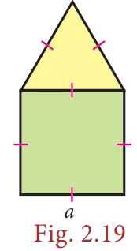
Though a square has 4 sides and an equilateral triangle has 3 sides, when they are combined together, we will have a total of only 5 sides as the boundary of the combined shape and not 7 sides. Isn't it? So, the perimeter of the combined shape, here is \(5a\) units.
2.3.2 Area of combined shapes
To find the area of a combined shape, split the combined shape into known simpler shapes, find their area separately and then add them up. That is, the area of combined shapes is nothing but the sum of all the areas of the simple shapes in it.
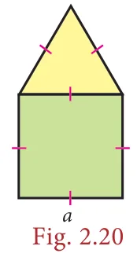
To find the area of the Fig.2.20, find the area of the square and the area of the equilateral triangle separately and then add them up.
The combined shapes that we come across mostly in our day-to-day life are irregular polygons. To find the area of the given irregular polygon, we must identify the simple shapes in it, find their areas separately and then add them up.
For example, an irregular polygonal field given below can be split into known simpler shapes as under and then its area can be found.
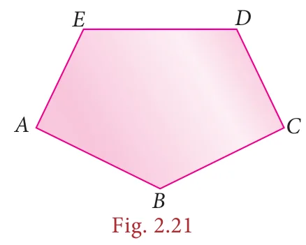
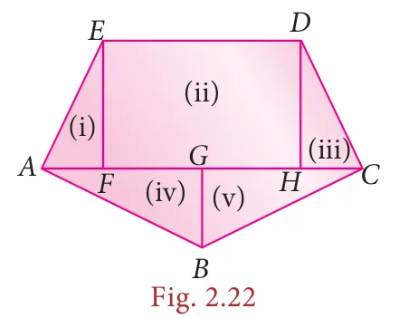
Do You Know?
A closed plane figure formed by three or more sides is called a ‘polygon’ .Based on the sides, some of the polygons are named as given below.
Number of sides
3
4
5
6
7
8
9
10
Name of the Polygon
Triangle
Quadrilateral
Pentagon
Hexagon
Heptagon
Octagon
Nonagon
Decagon
If all sides and all angles of a polygon are equal, then it is called as a regular polygon. Examples: equilateral triangle, square etc., Other polygons are irregular polygons. Examples: scalene triangle, rectangle etc.,
Think
All the sides of a rhombus are equal. Is it a regular polygon?
The formulae to find the area and the perimeter of some plane figures learnt in the earlier class are tabulated below and it will be helpful to find the area and the perimeter of combined figures.
Example 2.6
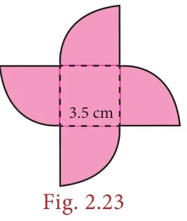
Find the perimeter and area of the given Fig.2.23. \(\left(\pi = \frac{22}{7}\right)\)
Solution:
Radius of a circular quadrant, \(r = 3.5\) cm and side of a square, \(a = 3.5\) cm.
The given figure is formed by the joining of 4 quadrants of a circle with each side of a square. The boundary of the given figure consists of 4 arcs and 4 radii.
Perimeter of the given combined shape
\(= 4 \times\) length of the arcs of the quadrant of a circle \(+\ 4 \times\) radius
Nishanth has a key-chain which is in the form of an equilateral triangle and a semicircle attached to a square of side 5 cm as shown in the Fig. 2.24. Find its area. \(\left(\pi = 3.14, \sqrt{3} = 1.732\right)\)
Solution:
Side of the square \(= 5\) cm
Diameter of the semi-circle \(= 5\) cm \(\Rightarrow\) Radius \(= 2.5\) cm
Side of the equilateral triangle \(= 5\) cm
\(\therefore\) Area of the key-chain = area of the semi circle + area of the square + area of the equilateral triangle
A 3-fold invitation card is given with measures as in the Fig. 2.25. Find its area.
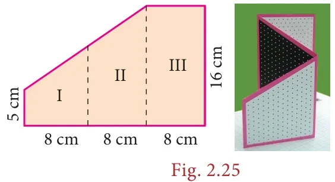
Solution:
Figures I and II are trapeziums separately as well as combinedly.
The parallel sides of the combined trapezium (I and II) are 5 cm and 16 cm and its height, \(h = 8 + 8 = 16\ \text{cm}\), length of the rectangle (III) \(= 16\) cm and its breadth \(= 8\) cm
\(\therefore\) Area of the combined invitation card
= area of the combined trapezium + area of the rectangle
\(= \frac{1}{2} \times h \times (a + b) + l \times b\)
Seenu wants to buy a floor mat for his kitchen at home as given in Fig. 2.27. If the cost of the mat is ₹ 20 per square foot, what will be the cost of the entire mat?
Fig. 2.27
Solution:
The mat given in the figure can be split into two rectangles as follows:
\(\therefore\) Area of the entire mat
= area of the (I) rectangle + area of the (II) rectangle
The area of the unshaded regions in each of the squares of side a units are the same in all the cases given below.
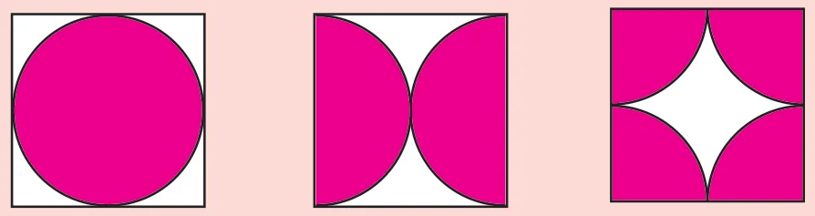
If the biggest circle is cut from a square of side 'a' units, then the remaining area in the square is approximately \(\frac{3}{14}a^{2}\) sq.units. \(\left(\pi = \frac{22}{7}\right)\)
The area of the biggest circle cut out from the square of 'a' units \(= \frac{11}{14}a^{2}\) sq. units (approximately)
In the given figure if \(\pi = \frac{22}{7}\), the area of the unshaded part of a square of side a units is approximately \(\frac{3}{7}a^{2}\) sq.units and that of the shaded part is approximately \(\frac{4}{7}a^{2}\) sq.units.
Example 2.11
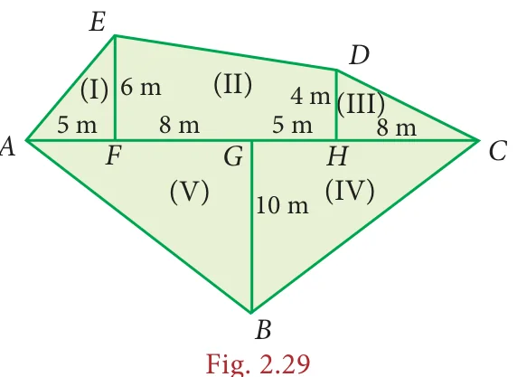
Find the area of an irregular polygon field whose measures are as given in the Fig. 2.29.
Solution:
The given field has four triangles (I, III, IV and V) and a trapezium (II).
Area of the triangle (I) \(= \frac{1}{2} \times b \times h = \frac{1}{2} \times 5 \times 6 = 15\ \text{m}^{2}\)
Area of the trapezium (II) \(= \frac{1}{2}h(a + b) = \frac{1}{2} \times 13 \times (6 + 4) = 65\ \text{m}^{2}\)
Area of the triangle (III) \(= \frac{1}{2} \times b \times h = \frac{1}{2} \times 8 \times 4 = \frac{32}{2} = 16\ \text{m}^{2}\)
Area of the triangle (IV) \(= \frac{1}{2} \times b \times h = \frac{1}{2} \times 13 \times 10 = 65\ \text{m}^{2}\)
Area of the triangle (V) \(= \frac{1}{2} \times b \times h = \frac{1}{2} \times 13 \times 10 = 65\ \text{m}^{2}\)
\(\therefore\) The total area of the field \(= 15 + 65 + 16 + 65 + 65 = 226\ \text{m}^{2}\)
Exercise 2.2
Find the perimeter and area of the figures given below. \(\left(\pi = \frac{22}{7}\right)\)
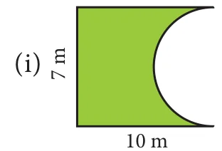
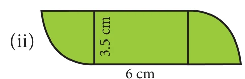
Find the area of the shaded part in the following figures. \((\pi = 3.14)\)
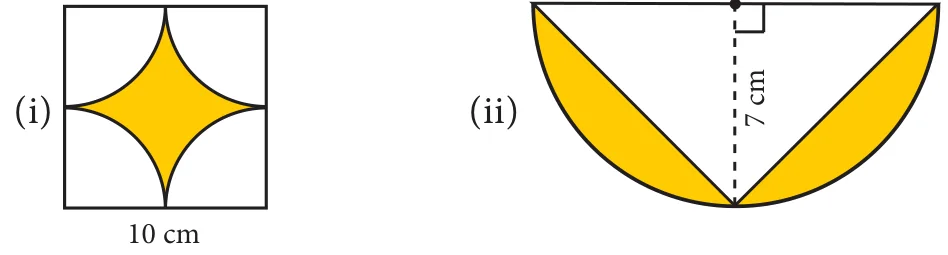
Find the area of the combined figure given which is got by the joining of two parallelograms.
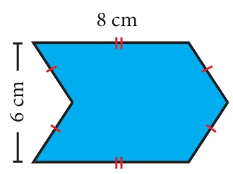
Find the area of the combined figure given, formed by joining a semicircle of diameter \(6\) cm with a triangle of base \(6\) cm and height \(9\) cm. \((\pi = 3.14)\)
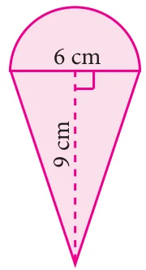
The door mat which is hexagonal in shape has the following measures as given in the figure. Find its area.
A rocket drawing has the measures as given in the figure. Find its area.
Find the area of the irregular polygon shaped fields given below.
2.4 Three dimensional (3-D) shapes
Trace the outline of a ₹2 coin, ₹10 note and a square shaped biscuit on a paper.
Fig. 2.30
What shapes have you traced? A circle, a rectangle and a square. Isn't it? These shapes represents the plane figures. Also, these plane figures have two dimensions namely length and breadth. Now, you place some two rupee coins, some ten rupee notes and some square shaped biscuits respectively on the drawn shapes as shown in the figure.
What do you get now? A cylinder, a cuboid and a cube. Isn't it? These shapes do not lie completely on the plane and they occupy some space also. That is, they have the third dimension namely the height along with the dimensions length and breadth. Thus, the shapes
which have three dimensions namely length, breadth and height (depth) are called three
dimensional shapes, simply called as 3-D shapes. Some examples of 3-D shapes are
Cube Cuboid Prism Triangular Pyramid
Fig. 2.32
Square Pyramid Cylinder Cone Sphere
2.4.1 Faces, Edges and Vertices
Observe the following shape. What is it? A cube. A cube is made of six square shaped planes. These 6 square shaped planes of the cube are known as its faces.
Fig. 2.33
A line segment which connects any two faces of a cube is called as Edge and each corner point where three edges meet is called as Vertex. So, a cube has 6 faces, 12 edges and
8 vertices.
2.4.2 Nets for building three dimensional (3-D) shapes
When we buy sweets, a shop keeper picks a flat shaped card which has some flips and makes a rectangular shaped box (cuboid) by folding it as shown in the figure. Then, he arranges the sweets in the box and gives it to us.
Fig. 2.34
The flat shaped card already designed for making the box excluding flaps (dotted lines) is known as a net. For example, from the following nets we
can build cubes and square pyramids.
2.4.4 Cross section of solid shapes
When we cut the vegetables in cross section for cooking purpose, we see some plane figures in it. For example, the cross section of a carrot and a plantain stem is a circle. Fig. 2.35
2.4.5 3-D shapes in different views
A 3-D object may look different from different positions. View of a 3D shape is what you see while observing the object from different positions. Some of the views are front view, top view and side view. The different views of some of the objects are as shown below.
Exercise 2.3
Fill in the blanks:
The three dimensions of a cuboid are \(\underline{\qquad}\), \(\underline{\qquad}\) and \(\underline{\qquad}\).
The meeting point of more than two edges in a polyhedron is called as \(\underline{\qquad}\).
A cube has \(\underline{\qquad}\) faces.
The cross section of a solid cylinder is \(\underline{\qquad}\).
If a net of a 3-D shape has six plane squares, then it is called \(\underline{\qquad}\).
Which 3-D shapes do the following nets represent? Draw them.
For each solid, three views are given. Identify for each solid, the corresponding Top, Front and Side (T, F and S) views.
Verify Euler's formula for the table given below.
Exercise 2.4
Miscellaneous Practice Problems
Two gates are fitted at the entrance of a library. To open the gates easily, a wheel is fixed at 6 feet distance from the wall to which the gate is fixed. If one of the gates is opened to \(90^{\circ}\), find the distance moved by the wheel \((\pi = 3.14)\).
With his usual speed, if a person covers a circular track of radius 150 \(m\) in 9 minutes, find the distance that he covers in 3 minutes \((\pi = 3.14)\).
Find the area of the house drawing given in the figure.
Draw the top, front and side view of the following solid shapes
Challenging problems
Guna has fixed a single door of width 3 feet in his room where as Nathan has fixed a double door, each of width \(1\frac{1}{2}\) feet in his room. From the closed position, if each of the single and double doors can open up to \(120^{\circ}\), whose door takes a minimum area?
In a rectangular field which measures \(15\,m \times 8\,m\), cows are tied with a rope of length \(3\,m\) at four corners of the field and also at the centre. Find the area of the field where no cows can graze. \((\pi = 3.14)\)
Three identical coins each of diameter 6 \(cm\) are placed as shown. Find the area of the shaded region between the coins. \((\pi = 3.14)\) \((\sqrt{3} = 1.732)\)
Using Euler's formula, find the unknowns.
SUMMARY
SUMMARY
If any two points on the circumference of a circle are joined by a line segment, then the line segment is called a ‘chord’.
A diameter of a circle divides it into two equal parts. It is the longest chord of a circle.
A part of the circumference of a circle is called the circular arc.
The plane surface that is enclosed between two radii and the circular arc of a circle is called a ‘sector’.
The angle made by the sector with the centre of the circle is called the ‘central angle’.
The perimeter of a combined shape is the sum of all the lengths of the sides that form a closed boundary.
The area of combined shapes is nothing but the sum of all areas of the simpler shapes in it.
The shapes which have three dimensions namely length, breadth and height are called three dimensional shapes (or) simply called as 3-D shapes.
A cube has 6 faces, 12 edges and 8 vertices.
Ict Corner
Step-1 Open the Browser and type www.Geogebra.com (or)scan the QR CODE given below.
Step-2 Type Area of sector on the search column
Step-3 Move the radius slide and degree slide. You will get various results.
“Through this activity you will know about how to find the perimeter and area of the sectors.”
Go through the remaining worksheets given for this chapter
Web URL Measurement (measurements links) https://www.geogebra.org/m/FSqNDNxN
*Pictures are indicatives only. *If browser requires, allow Flash Player or Java Script to load the page.
Algebra
Chapter opener
Recap
In our earlier classes, we have learnt about constants, variables, like terms, unlike terms, co-efficients, numerical and algebraic expressions. Later, we have done some basic operations like addition and subtraction on algebraic expressions. Now, we shall recollect them and extend the learning.
Further, we are going to learn about multiplication and division of algebraic expressions and algebraic identities.
Answer the following questions :
Write the number of terms in the following expressions
The length of a log is \(3a + 4b - 2\) and a piece \((2a - b)\) is removed from it. What is the length of the remaining log?
A tin had \(x\) litres of oil. Another tin had \((3x^2 + 6x - 5)\) litres of oil. The shopkeeper added \((x + 7)\) litres more to the second tin. Later, he sold \((x^2 + 6)\) litres of oil from the second tin. How much oil was left in the second tin?
3.1 Introduction
Let us consider the given situation that Ganesh planted saplings in his garden. He planted 10 rows each with 5 saplings. Can you say how many saplings were planted?
Yes, we know that, the total number of saplings is the product of number of rows and number of saplings in each row.
Hence, the total number of saplings \(= 10\) rows \(\times 5\) saplings in each row \(= 10 \times 5 = 50\) saplings
Likewise, David planted some saplings. Not knowing the total number of rows and saplings in each row, how will you express the total number of saplings?
For the unknown quantities, we call them as '\(x\)' and '\(y\)'. Therefore, the total number of saplings = '\(x\)' rows \(\times\) '\(y\)' sapling in each row
\(= x \times y = xy\) saplings
Let us extend this situation, Rahim planted saplings where the number of rows are \((2x^2 + 5x - 7)\) and each row contains \(3y^2\) saplings. Now the above idea will help us to find the total number of saplings planted by Rahim.
The total number of saplings \(= (2x^2 + 5x - 7)\) rows \(\times 3y^2\) saplings in each row.
\(= 3y^2 \times (2x^2 + 5x - 7)\)
How do we find the product of the above algebraic expression? Now, we will learn to find the product of algebraic expressions.
3.2 Multiplication of Algebraic Expressions
While doing the product of algebraic expressions, we should follow the steps given below.
Step 1: Multiply the signs of the terms. That is, the product of two like signs are positive and the product of two unlike signs are negative.
Like signs
\((+) \times (+) = +\)
\((-) \times (-) = +\)
Unlike signs
\((+) \times (-) = -\)
\((-) \times (+) = -\)
Step 2: Multiply the corresponding co-efficients of the terms.
Step 3: Multiply the variable factors by using laws of exponents.
If '\(x\)' is a variable and m, n are positive integers then,
\(x^{m} \times x^{n} = x^{m+n}\)
For example, \(x^{3} \times x^{4} = x^{3+4} = x^{7}\)
3.2.1 Multiplication of two or more monomials
Consider that, Geetha buys 3 pens each @ ₹5, how much she has to pay to the shopkeeper?
Geetha has to pay to the shopkeeper \(= 3 \times \text{₹}5\)
\(= \text{₹}15\)
If there are '\(x\)' pens and the cost of each pen is ₹'\(y\)',
then the cost of \((3x^{2})\) pens bought by Geetha @ ₹\(5y\)
\(= (3x^{2}) \times 5y\)
\(= (3 \times 5)(x^{2} \times y)\)
\(= \text{₹}\,15x^{2}y\)
Example 3.1
If the length and breadth of a rectangular painting are \(4xy^3\) and \(3x^2y\). Find its area.
Solution:
Area of the rectangular painting, \(A = (l \times b)\) sq.units
\(= (4xy^3) \times (3x^2y)\)
\(= (4 \times 3)(x \times x^2)(y^3 \times y)\)
\(A = 12x^3y^4\) sq.units
Example 3.2
Find the product of \(2x^2y^2\), \(3y^2z\) and \(-z^2x^3\)
Solution:
We have, \((2x^2y^2) \times (3y^2z) \times (-z^2x^3)\)
3.2.2 Multiplication of a polynomial by a monomial
If there are '\(a\)' shops and each shop has '\(x\)' apples in 8 baskets and '\(y\)' oranges in 3 baskets and '\(z\)' bananas in 5 baskets, then the total number of apples, oranges and bananas are
\(= a \times (8x + 3y + 5z)\)
\(= a(8x) + a(3y) + a(5z)\)
(using distributive law).
\(= 8ax + 3ay + 5az\)
Example 3.3
Multiply \(3x^2y\) and \((2x^3y^3 - 5x^2y + 9xy)\)
Solution:
Now, \((3x^2y) \times (2x^3y^3 - 5x^2y + 9xy)\)
\(= 3x^2y(2x^3y^3) - 3x^2y(5x^2y) + 3x^2y(9xy)\)
multiplying each term of the polynomial by the monomial
Ram deposited '\(x\)' number of ₹2000 notes, '\(y\)' number of ₹500 notes, '\(z\)' number of ₹100 notes in a bank and Velan deposited '\(3xy\)' times of amount of what Ram had deposited. How much amount did Velan deposit in the bank?
Solution:
Amount deposited by Ram
\(= (x \times \text{₹}2000 + y \times \text{₹}500 + z \times \text{₹}100)\)
\(= \text{₹}(2000x + 500y + 100z)\)
Amount deposited by Velan \(= 3xy\) times \(\times\) Amount deposited by Ram
\(= \text{₹}\,3xy \times (2000x + 500y + 100z)\)
\(= (3 \times 2000)(x \times x \times y) + (3 \times 500)(x \times y \times y) + (3 \times 100)(x \times y \times z)\)
\(= \text{₹}(6000x^2y + 1500xy^2 + 300xyz)\)
3.2.3 Multiplication of two binomials
Consider that a rectangular flower bed whose length is decreased by 5 units from the original length and whose breadth is increased by 3 units to the original breadth. What is the area of the rectangular flower bed?
Area of the rectangle \(= l \times b\)
Here, area of the rectangular flower bed \(A = (l - 5) \times (b + 3)\) sq.units
How do we multiply this?
Now, let us learn how to multiply two binomials.
If \((x + y)\) and \((p + q)\) are two binomials, we can find their product as given below,
So, the above area of the rectangle \(= (l - 5) \times (b + 3)\)
Let us consider one more example. Consider the given figure , In the square \(OABC\),
\(OA = 4\) units ; \(OC = 4\) units
The area of the square \(OABC = 4 \times 4\)
\(A = 16\) sq.units
If the sides of the square are increased by '\(x\)' units and '\(y\)' units respectively, then we get the rectangle \(ODEF\) whose sides are \(OD = (4 + x)\) units and \(OF = (4 + y)\) units.
Now, the area of the rectangle \(ODEF = (4 + x)(4 + y)\)
A) iv, v, ii, i, iii B) v, iv, iii, ii, i C) iv, v, ii, iii, i D) iv, v, iii, ii, i
A car moves at a uniform speed of \((x + 30)\) km/hr. Find the distance covered by the car in \((y + 2)\) hours. (Hint: distance \(=\) speed \(\times\) time).
Objective Type Questions
The product of \(7p^{3}\) and \((2p^{2})^{2}\) is
\(14p^{12}\)
\(28p^{7}\)
\(9p^{7}\)
\(11p^{12}\)
The missing terms in the product \(-3m^{3}n \times 9(\underline{\quad}) = \underline{\qquad\qquad}\,m^{4}n^{3}\) are
\(mn^{2}, 27\)
\(m^{2}n, 27\)
\(m^{2}n^{2}, -27\)
\(mn^{2}, -27\)
If the area of a square is \(36x^{4}y^{2}\) then, its side is \(\underline{\qquad\qquad}\)
\(6x^{4}y^{2}\)
\(8x^{2}y^{2}\)
\(6x^{2}y\)
\(-6x^{2}y\)
If the area of a rectangle is \(48m^{2}n^{3}\) and whose length is \(8mn^{2}\) then, its breadth is \(\underline{\quad}\).
\(6mn\)
\(8m^{2}n\)
\(7m^{2}n^{2}\)
\(6m^{2}n^{2}\)
If the area of a rectangular land is \((a^{2} - b^{2})\) sq.units whose breadth is \((a - b)\) then, its length is \(\underline{\qquad\qquad}\)
\(a - b\)
\(a + b\)
\(a^{2} - b\)
\((a + b)^{2}\)
3.3 Division of Algebraic Expressions
In the previous sessions, we have learnt how to add, subtract and multiply algebraic expressions. Now, we are going to learn about another basic operation 'division' on algebraic expressions. We know that the division is the reverse operation of multiplication.
Now, the cost of 10 balls at the rate of ₹5 each \(=10 \times 5\)
= ₹50
whereas if we have ₹50 and we want to buy 10 balls then, the cost of each ball is \(= \frac{50}{10}\)
= ₹5
What we have seen above is division on numbers. But how will you divide an algebraic expression by another algebraic expression?
Of course, the same procedure has to be followed for the algebraic expressions with the help of laws of exponents.
If \(x\) is a variable and \(m, n\) are constants, then \(x^{m} \div x^{n} = x^{m-n}\) where \(m > n\).
3.3.1 Division of a monomial by another monomial
Dividing a monomial \(10p^{4}\) by another monomial \(2p^{3}\), we get
(expansion of power)
\(=5p\)
However, to divide we can also follow laws of exponents as,
\(\frac{10p^{4}}{2p^{3}} = 5p^{4-3}\)
\(= 5p\)
\(\frac{x^{m}}{x^{n}} = x^{m-n}\)
Example 3.6
Velu pastes '\(4xy\)' pictures in one page of his scrap book.
How many pages will he need to paste \(100x^{2}y^{3}\) pictures? (\(x, y\) are positive integers)
Solution:
Total number of pictures \(=100x^{2}y^{3}\)
Pictures in one page \(= 4xy\)
Total number of pages needed \(= \frac{\text{Total number of pictures}}{\text{pictures in one page}}\)
We have studied in the previous class about standard algebraic identities. An identity is an equation satisfied by any value that replaces its variable(s). Now, we shall recollect four known identities, which are,
Instead of the symbol \(\equiv\), we use \(=\) to represent an identity without any confusion.
Try these
Expand the following
\((p+2)^{2} = \underline{\qquad}\)
\((3-a)^{2} = \underline{\qquad}\)
\((6^{2} - x^{2}) = \underline{\qquad}\)
\((a+b)^{2} - (a-b)^{2} = \underline{\qquad}\)
\((a+b)^{2} = (a+b) \times \underline{\qquad}\)
\((m+n)(\underline{\qquad}) = m^{2} - n^{2}\)
\((m + \ldots)^{2} = m^{2} + 14m + 49\)
\((k^{2} - 49) = (k + \ldots)(k - \ldots)\)
\(m^{2} - 6m + 9 = \underline{\qquad}\)
\((m-10)(m+5) = \underline{\qquad}\)
Note
\(x=1\) is the only solution for \(7x + 3 = 10\) whereas any value of \(x\) satisfies \((x+2)^{2} = x^{2} + 4x + 4\). So \(7x + 3 = 10\) is an equation \((x+2)^{2} = x^{2} + 4x + 4\) is an identity. An identity is an equation but vice versa is not true.
3.5.1 Application of Identities
The identities give an alternative method of solving problems on multiplication of algebraic expressions and also of numbers.
Example 3.8
Find the value of \((3a+4c)^{2}\) by using \((a+b)^{2}\) identity.
Solution:
Comparing \((3a+4c)^{2}\) with \((a+b)^{2}\), we have \(a = 3a, b = 4c\)
\((p + q)(p^{2} - pq + q^{2})\) is equal to \(\underline{\qquad\qquad}\)
\(p^{3} + q^{3}\)
\((p + q)^{3}\)
\(p^{3} - q^{3}\)
\((p - q)^{3}\)
\((a - b) = 3\) and \(ab = 5\) then \(a^{3} - b^{3} = \underline{\qquad\qquad}\)
15
18
62
72
\(a^{3} + b^{3} = (a + b)^{3} - \underline{\qquad\qquad}\)
\(3a(a + b)\)
\(3ab(a - b)\)
\(-3ab(a + b)\)
\(3ab(a + b)\)
3.7 Factorisation
Expressing any number as the product of two or more numbers is called as factorisation. The number 12 can be expressed as the product of prime factors like \(12 = 2 \times 2 \times 3\). This is called prime factorisation. How will you factorise an algebraic expression? Yes. Expressing an algebraic expression as the product of two or more expressions is called the Factorisation.
Note
A number which is divisible by 1 and itself (or) A number which has only 2 factors are called prime numbers. Example: 2, 3, 5, 7, 11, ...
A number which has more than 2 factors are called composite numbers. Example: 4, 6, 8, 9, 10, 12, ...
For example, (i) \(a^{2} - b^{2} = (a + b)(a - b)\) Here, \((a + b)\) and \((a - b)\) are the two factors of \(a^{2} - b^{2}\)
(ii) \(5y + 30 = 5(y + 6)\), Here 5 and \((y + 6)\) are the factors of \(5y + 30\)
Any expression can be Factorised as \((1) \times (\text{expression})\)
For example, \(a^{2} - b^{2}\) can also be factorised as
because '1' is a factor for all numbers and expressions
So, when we factorise the expressions, follow the suitable type of factorisation given below to get two or more factors other than 1. Stop doing the factorisation process once you have taken out all the common factors from the expression and then list out the factors.
Type 1: Factorisation by taking out the common factor from each term.
Example 3.18
Factorise: \(4x^{2}y + 8xy\)
Solution:
We have, \(4x^{2}y + 8xy\) This can be written as,
\(= (2 \times 2 \times x \times x \times y) + (2 \times 2 \times 2 \times x \times y)\)
Taking out the common factor \(2, 2, x, y\), we get
\(= 2 \times 2 \times x \times y(x + 2)\)
\(= 4xy(x + 2)\)
Type 2 : Factorisation by taking out the common binomial factor from each term
Example 3.19
(i) Factorise: \((2x + 5)(x - y) + (4y)(x - y)\)
Solution:
We have \((2x + 5)(x - y) + (4y)(x - y)\)
Taking out the common binomial factor \((x - y)\)
we get, \((x - y)(2x + 5 + 4y)\)
(ii) Factorise \(3n(p - 2) + 4(2 - p)\)
Solution:
We have \(3n(p - 2) + 4(2 - p)\) (taking \(-\) as common)
\(3n(p - 2) - 4(p - 2)\)
Taking out the common binomial factor \((p - 2)\)
we get, \((p - 2)(3n - 4)\)
Type 3 : Factorisation by grouping
Sometimes, the terms of a given expression are grouped suitably in such a way that they have a common factor so that the factorisation is easy to take out common factor from those terms.
Example 3.20
Factorise : \(x^{2} + yz + xy + xz\)
Solution:
We have, \(x^{2} + yz + xy + xz\)
Group the terms suitably as, \(= (x^{2} + xy) + (yz + xz)\)
Find the simple interest on Rs. \(5a^{2}b^{2}\) for \(4ab\) years at \(7b\%\) per annum.
The cost of a note book is Rs. \(10ab\). If Babu has Rs. \((5a^{2}b + 20ab^{2} + 40ab)\). Then how many note books can he buy?
Factorise : \((7y^{2} - 19y - 6)\)
Challenging problems
A contractor uses the expression \(4x^{2} + 11x + 6\) to determine the amount of wire to order when wiring a house. If the expression comes from multiplying the number of rooms times the number of outlets and he knows the number of rooms to be \((x + 2)\), find the number of outlets in terms of 'x'. [Hint : factorise \(4x^{2} + 11x + 6\)]
A mason uses the expression \(x^{2} + 6x + 8\) to represent the area of the floor of a room. If the decides that the length of the room will be represented by \((x + 4)\), what will the width of the room be in terms of \(x\)?
What is the formula to find the perimeter of a rectangle? If we denote the length by \(l\) and breadth by \(b\), the perimeter \(P\) is given as \(P = 2(l + b)\). In this formula, 2 is a fixed number whereas the literal numbers \(P\), \(l\) and \(b\) are not fixed because they depend upon the size of the rectangle and hence \(P\), \(l\) and \(b\) are variables. For rectangles of different sizes, their values go on changing. 2 is a constant (which does not change whatever may be the size of the rectangle).
An algebraic expression is a mathematical phrase having one or more algebraic terms including variables, constants and operating symbols (such as plus and minus signs).
Example: \(4x^{2} + 5x + 7xy + 100\) is an algebraic expression; note that the first term \(4x^{2}\) consists of constant 4 and variable \(x^{2}\). What is the constant in the term \(7xy\)? Is there a variable in the last term of the expression?
The 'number parts' of the terms with variables are coefficients. In \(4x^{2} + 5x + 7xy + 100\), the coefficient of the first term is 4. What is the coefficient of the second term? It is 5. The coefficient of the \(xy\) term is 7.
3.8.2 Forming algebraic expressions
We now to translate a few statements into an algebraic language and recall how to frame expressions. Here are some examples:
3.8.3 Equations
An equation is a statement that asserts the equality of two expressions; the expressions are written one on each side of an "equal to" sign.
For example: \(2x + 7 = 17\) is an equation (where \(x\) is a variable). \(2x + 7\) forms the Left Hand Side (LHS) of the equation and 17 is its Right Hand Side (RHS).
Linear equations
An equation containing only one variable with its highest power as one is called a linear equation. Examples: \(3x - 7 = 10\).
Linear equations in one or more variables:
An equation is formed when a statement is put in the form of mathematical terms. Here are some examples:
(i) A number is added to 5 to get 25
This statement can be written as \(x + 5 = 25\).
This equation \(x + 5 = 25\) is formed by one variable \((x)\) whose highest power is 1. So it is called a linear equation in one variable.
Therefore, an equation containing only one variable with its highest power as one is called a linear equation in one variable.
Examples: \(5x - 2 = 8\), \(3y + 24 = 0\)
This linear equation in one variable is also known as simple equation.
(ii) Sum of two numbers is 45
This statement can be written as \(x + y = 45\).
This equation \(x + y = 45\) is formed by two variables \(x\) and \(y\) whose highest power is 1. Hence, we call it as a linear equation in two variables.
Now, in this class we shall learn to solve linear equations in one variable only. You will learn to solve other type of equations in higher classes.
Note
The equations so formed with power more than 1 of its variables, (2,3....etc.) are called as quadratic, cubic equations and so on.
Examples: (i) \(x^{2} + 4x + 7 = 0\) is a quadratic equation.
(ii) \(5x^{3} - x^{2} + 3x = 10\) is a cubic equation.
Try these
Identify which among the following are linear equations.
\(2 + x = 19\)
\(7x^{2} - 5 = 3\)
\(4p^{3} = 12\)
\(6m + 2\)
\(n = 10\)
\(7k - 12 = 0\)
\(\frac{6x}{8} + y = 1\)
\(5 + y = 3x\)
\(10p + 2q = 3\)
\(x^{2} - 2x - 4\)
Convert the following statements into linear equations:
Example 3.28
7 is added to a given number to give 19.
Solution:
Let the number be \(n\). When 7 is added to this number we get \(n + 7\). This result is to give 19. Therefore, the equation is \(n + 7 = 19\).
Example 3.29
The sum of 4 times a number and 18 is 28.
Solution:
Let the number be \(x\). 4 times the number is \(4x\). Adding 18 now, we get \(18 + 4x\). Now the result should be 28. Thus, the equation has to be \(18 + 4x = 28\).
Try these
Convert the following statements into linear equations:
On subtracting 8 from the product of 5 and a number, I get 32.
The sum of three consecutive integers is 78.
Peter had a Two hundred rupee note. After buying 7 copies of a book he was left with ₹60.
The base angles of an isosceles triangle are equal and the vertex angle measures \(80^{\circ}\).
In a triangle ABC, \(\angle A\) is \(10^{\circ}\) more than \(\angle B\). Also \(\angle C\) is three times \(\angle A\). Express the equation in terms of angle B.
3.8.4 Solution of a linear equation
The value which replaces a variable in an equation so as to make the two sides of the equation equal is called a solution or root of the equation.
Example : \(2x = 10\)
We find that the equation is "satisfied" with the value \(x = 5\). That is, if we put \(x = 5\), in the equation, the value of the LHS will be equal to the RHS. Thus \(x = 5\) is a solution of the equation. Note that no other value for \(x\) satisfies the equation. Thus one can say \(x = 5\) is "the" solution of the equation.
(i) The DO-UNDO Method:
This formation of equation can be visualized as follows:
From the number \(x\), we reached \(2x - 5\) by performing operations like subtraction, multiplication etc. So when \(2x - 5 = 11\) is given, to get back to the value of \(x\), we have to 'undo' all that we did! Thus, we 'do' to form the equation and 'undo' to get the solution.
Example 3.30
(a) Solve the equation: \(x - 7 = 6\)
Solution:
\(x - 7 = 6\) (Given)
\(x - 7 + 7 = 6 + 7\) (add 7 on both sides)
\(x = 13\)
(b) Solve the equation: \(3x = 51\)
Solution:
\(3x = 51\) (Given)
\(3 \times x = 51\)
\(\frac{3 \times x}{3} = \frac{51}{3}\) (\(\div\) 3 on both sides)
\(x = 17\)
(ii) Transposition method
The shifting of a number from one side of an equation to other is called transposition.
For the above example, (a) doing addition of 7 on both sides is the same as changing the number \(-7\) on the left hand side to its additive inverse +7 and add it on the right hand side.
\(x - 7 = 6\)
\(x = 6 + 7\)
\(x = 13\)
likewise, (b) doing division by 3 on both sides is the same as changing the number 3 on the LHS to its reciprocal \(\frac{1}{3}\) and multiply it on the RHS and vice-versa.
For Example
(i)
\(6x = 12\)
\(x = \frac{12}{6}\)
\(x = 2\)
(ii)
\(\frac{y}{7} = 10\)
\(y = 10 \times 7\)
\(y = 70\)
Note
While rearranging the given linear equation, group the like terms on one side of the equality sign, and then do the basic arithmetic operations according to the signs that occur in the expression.
The challenging part of solving word problems is translating the statements into equations. Collect as many such problems and attempt to solve them.
Example 3.33
The sum of two numbers is 36 and one number exceeds another by 8. Find the numbers.
Solution:
Let the smaller number be \(x\) and the greater number be \(x+8\)
Given: the sum of two numbers \(= 36\)
\(x + (x+8) = 36\)
\(2x + 8 = 36\)
\(2x = 36 - 8\)
\(2x = 28\)
\(x = \frac{28}{2} = 14\)
Hence,
The smaller number, \(x = 14\)
The greater number, \(x + 8 = 14 + 8 = 22\)
Example 3.34
A bus is carrying 56 passengers with some people having ₹8 tickets and the remaining having ₹10 tickets. If the total money received from these passengers is ₹500, find the number of passengers with each type of tickets.
Solution:
Let the number of passengers having ₹8 tickets be \(y\). Then, the number of passengers with ₹10 tickets is \((56 - y)\).
Total money received from the passengers = ₹500
That is, \(y \times 8 + (56 - y) \times 10 = 500\)
\(8y + 560 - 10y = 500\)
\(8y - 10y = 500 - 560\)
\(-2y = -60\)
\(y = \frac{60}{2}\)
\(y = 30\)
Hence, the number of passengers having,
₹8 tickets \(= 30\)
₹10 tickets \(= 56 - 30 = 26\)
Example 3.35
The length of a rectangular field exceeds its breadth by 9 metres. If the perimeter of the field is 154m, find the length and breadth of the field.
Solution:
Let the breadth of the field be '\(x\)' metres; then its length \((x+9)\) metres.
Perimeter of the \(P = 2(\text{length} + \text{breadth}) = 2(x + 9 + x) = 2(2x + 9)\)
Given that, \(2(2x + 9) = 154\).
\(4x + 18 = 154\)
\(4x = 154 - 18\)
\(4x = 136\)
\(x = 34\)
Hence,
Thus, breadth of the rectangular field \(= 34\,m\)
length of the rectangular field \(= x + 9 = 34 + 9 = 43\,m\)
Example 3.36
There is a wooden piece of length 2m. A carpenter wants to cut it into two pieces such that the first piece is 40 cm smaller than twice the other piece. What is the length of the smaller piece ?
Solution:
Let us assume that the length of the first piece is \(x\) cm.
Then the length of the second piece is \((200\,\text{cm} - x\,\text{cm})\) i.e., \((200 - x)\) cm.
According to the given statement (change m to cm),
First piece = 40 less than twice the second piece.
\(x = 2 \times (200 - x) - 40\)
\(x = 400 - 2x - 40\)
\(x + 2x = 360\)
\(3x = 360\)
\(x = \frac{360}{3}\)
\(x = 120\)
Hence,
Thus the length of the first piece is 120 cm
The length of second piece is \(200\,\text{cm} - 120\,\text{cm} = 80\,\text{cm}\), which happens to be the smaller.
Example 3.37
Mother is five times as old as her daughter. After 2 years, the mother will be four times as old as her daughter. What are their present ages?
Solution:
Given condition: After two years, Mother's age \(= 4\) times of Daughter's age
\(5x + 2 = 4(x + 2)\)
\(5x + 2 = 4x + 8\)
\(5x - 4x = 8 - 2\)
\(x = 6\)
Hence daughter's present age \(= 6\) years;
and mother's present age \(= 5x = 5 \times 6 = 30\) years
Example 3.38
The denominator of a fraction is 3 more than its numerator. If 2 is added to the numerator and 9 is added to the denominator, the fraction becomes \(\frac{5}{6}\). Find the original fraction.
Solution:
Let the original fraction be \(\frac{x}{y}\).
Given that \(y = x + 3\). (Denominator = Numerator + 3).
Therefore, the fraction can be written as \(\frac{x}{x + 3}\). As per the given condition, \(\frac{x + 2}{(x + 3) + 9} = \frac{5}{6}\)
Therefore, the original fraction is \(\frac{x}{x + 3} = \frac{48}{48 + 3} = \frac{48}{51}\).
Example 3.39
The sum of the digits of a two-digit number is 8. If 18 is added to the value of the number, its digits get reversed. Find the number.
Solution:
Let the two digit number be \(xy\) (i.e., ten's digit is \(x\), ones digit is \(y\))
Its value can be expressed as \(10x+y\).
Given, \(x+y = 8\) which gives \(y = 8 - x\)
Therefore its value is \(10x+y\)
\(= 10x + 8 - x\)
\(= 9x + 8.\)
The new number is \(yx\) with value is \(10y + x\)
\(= 10(8 - x) + x\)
\(= 80 - 9x\)
Given, when 18 is added to the given number \((xy)\) gives new number \((yx)\)
\((9x + 8) + 18 = 80 - 9x\)
This simplifies to \(9x + 9x = 80 - 8 - 18\)
\(18x = 54\)
\(x = 3 \Rightarrow y = 8 - 3 = 5\)
The two digit number is \(xy = 10x+y \Rightarrow 10(3)+5 = 30+5 = 35\)
Example 3.40
From home, Rajan rides on his motorbike at 35 km/hr and reaches his office 5 minutes late. If he had ridden at 50 km/hr, he would have reached his office 4 minutes earlier. How far is his office from his home?
Solution:
Let the distance be '\(x\)' km. (Recall that, time \(= \frac{\text{Distance}}{\text{Speed}}\))
Time taken to cover '\(x\)' km at 35 km/hr: \(T_{1} = \frac{x}{35}\) hr
Time taken to cover '\(x\)' km at 50 km/hr: \(T_{2} = \frac{x}{50}\) hr
According to the problem, the difference between two timings
\(= 4 - (-5)\)
\(= 4 + 5 = 9\) minutes
\(= \frac{9}{60}\) hour (changing minutes to hour)
Given, \(T_{1} - T_{2} = \frac{9}{60}\)
\(\frac{x}{35} - \frac{x}{50} = \frac{9}{60}\)
\(\frac{10x - 7x}{350} = \frac{9}{60}\)
\(\frac{3x}{350} = \frac{9}{60}\)
\(x = \frac{9}{60} \times \frac{350}{3}\)
The distance to his office \(x = 17\frac{1}{2}\) km.
Exercise 3.7
Fill in the blanks:
The solution of the equation \(ax+b=0\) is \(\underline{\qquad}\).
If \(a\) and \(b\) are positive integers then the solution of the equation \(ax=b\) has to be always \(\underline{\qquad}\).
One-sixth of a number when subtracted from the number itself gives 25. The number is \(\underline{\qquad}\).
If the angles of a triangle are in the ratio \(2:3:4\) then the difference between the greatest and the smallest angle is \(\underline{\qquad}\).
In an equation \(a + b = 23\). The value of a is 14 then the value of b is \(\underline{\qquad}\).
Say True or False
"Sum of a number and two times that number is 48" can be written as \(y+2y = 48\)
\(5(3x+2) = 3(5x - 7)\) is a linear equation in one variable.
\(x = 25\) is the solution of one third of a number is 10 less than the original number.
One number is seven times another. If their difference is 18, find the numbers.
The sum of three consecutive odd numbers is 75. Which is the largest among them?
The length of a rectangle is \(\frac{1}{3}\) of its breadth. If its perimeter is 64m, then find the length and breadth of the rectangle.
A total of 90 currency notes, consisting only of ₹5 and ₹10 denominations, amount to ₹500. Find the number of notes in each denomination.
At present, Thenmozhi's age is 5 years more than that of Murali's age. Five years ago, the ratio of Thenmozhi's age to Murali's age was \(3:2\). Find their present ages.
A number consists of two digits whose sum is 9. If 27 is subtracted from the original number, its digits are interchanged. Find the original number.
The denominator of a fraction exceeds its numerator by 8. If the numerator is increased by 17 and the denominator is decreased by 1, we get \(\frac{3}{2}\). Find the original fraction.
If a train runs at 60 km/hr it reaches its destination late by 15 minutes. But, if it runs at 85 kmph it is late by only 4 minutes . Find the distance covered by the train.
Objective Type Questions
Sum of a number and its half is 30 then the number is \(\underline{\qquad}\).
(A) 15 (B) 20 (C) 25 (D) 40
The exterior angle of a triangle is \(120^{\circ}\) and one of its interior opposite angle \(58^{\circ}\), then the other opposite interior angle is \(\underline{\qquad}\).
What sum of money will earn ₹500 as simple interest in 1 year at 5% per annum?
(A) 50000 (B) 30000 (C) 10000 (D) 5000
The product of LCM and HCF of two numbers is 24. If one of the number is 6, then the other number is \(\underline{\qquad}\).
(A) 6 (B) 2 (C) 4 (D) 8
The largest number of the three consecutive numbers is \(x+1\), then the smallest number is
(A) \(x\) (B) \(x+1\) (C) \(x+2\) (D) \(x-1\)
3.9 Graph
3.9.1 Introduction
There was an instance in the 17th century when Rene Descartes, a famous mathematician became ill and from his bed, noticed an insect hovering over a corner and sitting at various places on the ceiling. He wanted to identify all the places where the insect sat on the ceiling. Immediately, he drew the top plane of the room in a paper, creating the horizontal and vertical lines. Based on these perpendicular lines, he used the directions and understood that the places of the insect can be spotted by the movement of the insect in the east, west, north and south directions. He called that place as \((x,y)\) in the plane which indicates two values, one \((x)\) in the horizontal direction and the other \((y)\) in the vertical direction (say east and north in this case). This is how the concept of graphs came into existence.
3.9.2 Graph sheets
Graph is just a visual method for showing relationships between numbers. In the previous class, we studied how to represent integers on a number line horizontally. Now take one more number line - vertically. We take the graph sheet keeping both number lines mutually perpendicular to each other at '0'zero as given in the figure. The number lines and the marking integers should be placed along the dark lines of the graph sheet.
The intersecting point of the perpendicular lines 'O' represent the origin \((0,0)\).
Cartesian system
Rene Descartes system of fixing a point with the help of two measurements, horizontal and vertical, is named as Cartesian system, in his honour. The horizontal line is named as XOX', called the X-axis. The vertical line is named as YOY', called the Y- axis. Both the axes are called coordinate axes. The plane containing the X axis and the Y axis is known as the coordinate plane or the Cartesian plane.
3.9.3 Signs in the graphs
X-coordinate of a point is positive along OX and negative along OX'
Y-coordinate of a point is positive along OY and negative along OY'
3.9.4 Ordered pairs
A point represents a position in a plane. A point is denoted by a pair (a,b) of two numbers 'a' and 'b' listed in a specific order in which 'a' represents the distance along the X-axis and 'b' represents the distance along the Y-axis. It is called an ordered pair \((a,b)\). It helps us to locate precisely a point in the plane. Each point can be exactly identified by a pair of numbers. It is also clear that the point \((b,a)\) is not same as (a,b) as they both indicate different orders.
We have, XOX' and YOY' as the co-ordinate axes and let 'M' be \((4,3)\) in the plane.To locate 'M'
(i) you (always) start at O, a fixed point (which we have, agreed to call as origin),
(ii) first, move 4 units along the horizontal direction (that is, the direction of \(x\)-axis)
(iii)and then trek along the \(y\)- direction by 3 units.
To understand how we have travelled to reach M, we denote by \((4,3)\).
4 is called the \(x\)-coordinate of M and 3 is called the \(y\)-coordinate of M.
It is also habitual to name the \(x\)-coordinate as abscissa and the \(y\)-coordinate as ordinate. \((4,3)\) is as an ordered pair.
Think
If instead of \((4,3)\), we write \((3,4)\) and try to mark it, will it represent 'M' again?
3.9.5 Quadrants
The coordinate axes divide the plane of the graph into four regions called quadrants. It is a convention that the quadrants are named in the anti clock wise sense starting from the positive side of the X axis.
Quadrant
Sign
I the region XOY
\(x>0\), \(y>0\), then the coordinates are \((+,+)\) Examples: \((5,7)\) \((2,9)\) \((10,15)\)
II the region X'OY
\(x<0\), \(y>0\) then the coordinates are \((-,+)\) Examples \((-2,8)\) \((-1,10)\) \((-5,3)\)
III the region X'OY'
\(x<0\), \(y<0\) then the coordinates are \((-,-)\) Examples: \((-2,-3)\) \((-7,-1)\) \((-5,-7)\)
IV the region XOY'
\(x>0\), \(y<0\) then the coordinates are \((+,-)\) Examples : \((1,-7)\) \((4,-2)\) \((9,-3)\)
Coordinate of a point on the axes:
If \(y=0\) then the coordinate \((x,0)\) lies on the '\(x\)'-axis. For example \((2,0)\) \((-5,0)\) \((7,0)\) are points on the '\(x\)'-axis.
If \(x=0\) then the coordinate \((0,y)\) lies on the '\(y\)'-axis. For example \((0,3)\) \((0,-4)\) \((0,9)\) are points on the '\(y\)'-axis.
3.9.6 Plotting the given points on a graph
Consider the following points \((4,3)\), \((-4,5)\), \((-3,-6)\), \((5,-2)\), \((6,0)\), \((0,-5)\)
(i) To locate \((4,3)\).
Start from origin O, move 4 units along OX and from 4, move 3 units parallel to OY to reach M\((4,3)\).
(ii) To locate \((-4,5)\)
From the origin, move 4 units along OX' and from \(-4\), move 5 units parallel to OY to reach N\((-4,5)\).
(iii) To locate \((-3,-6)\)
From the origin move 3units along OX' and from \(-3\), move 6 units parallel to OY' to reach P\((-3,-6)\).
(iv) To locate \((5,-2)\)
From the origin move 5 points along OX and from 5, move 2 units parallel to OY' to reach Q\((5,-2)\).
(v) To locate \((6,0)\) and \((0,-5)\)
In the given point \((6,0)\), X-coordinate is 6 and Y-coordinate is zero. So the point lies on the \(x\)-axis. Move 6 units on OX from the origin to reach R\((6,0)\).
In the given point \((0,-5)\) X-coordinate is zero and Y- coordinate is \((-5)\). So, the point lies on Y-axis. Move 5 units on OY' from the origin to reach S\((0,-5)\).
Try these
1. Complete the table given below.
S.No
Point
Sign of X-coordinate
Sign of Y-coordinate
Quadrant
1
\((-7,2)\)
2
\((10,-2)\)
3
\((-3,-7)\)
4.
\((3,1)\)
5.
\((7,0)\)
6.
\((0,-4)\)
2. Write the coordinates of the points marked in the following figure
Exercise 3.8
Fill in the blanks:
X- axis and Y-axis intersect at \(\underline{\qquad\qquad}\).
The coordinates of the point in third quadrant are always \(\underline{\qquad\qquad}\).
\((0,-5)\) point lies on \(\underline{\qquad\qquad}\) axis.
The x- coordinate is always \(\underline{\qquad}\) on the y-axis.
\(\underline{\qquad\qquad}\) coordinates are the same for a line parallel to Y-axis.
Say True or False:
\((-10,20)\) lies in the second quadrant.
\((-9,0)\) lies on the \(x\)-axis.
The coordinates of the origin are \((1,1)\).
Find the quadrants without plotting the points on a graph sheet. \((3,-4)\), \((5,7)\), \((2,0)\), \((-3,-5)\), \((4,-3)\), \((-7,2)\), \((-8,0)\), \((0,10)\), \((-9,50)\).
Plot the following points in a graph sheet. A\((5,2)\), B\((-7,-3)\), C\((-2,4)\), D\((-1,-1)\), E\((0,-5)\), F\((2,0)\), G\((7,-4)\), H\((-4,0)\), I\((2,3)\), J\((8,-4)\), K\((0,7)\).
Use the graph to determine the coordinates where each figure is located.
Star \(\underline{\qquad\qquad}\)
Bird \(\underline{\qquad\qquad}\)
Red Circle \(\underline{\qquad\qquad}\)
Diamond \(\underline{\qquad\qquad}\)
Triangle \(\underline{\qquad\qquad}\)
Ant \(\underline{\qquad\qquad}\)
Mango \(\underline{\qquad\qquad}\)
Housefly \(\underline{\qquad\qquad}\)
Medal \(\underline{\qquad\qquad}\)
Spider \(\underline{\qquad\qquad}\)
3.9.7 To obtain a straight line
Now, we know how to plot the points on the graph. The points may lie on the graph in different order. If we join any two points we will get a straight line.
Example 3.41
Draw a straight line by joining the points A \((-2,6)\) and B \((4,-3)\)
Solution:
The given first point A \((-2,6)\) lies in the II quadrant and plot it. Second point B \((4,-3)\) lies in the IV quadrant and plot it.
Now join the point A and point B using scale and extend it. We get a straight line.
Note:
The straight line intersects X axis at \((2,0)\) and Y axis at \((0,3)\).
Example 3.42
Draw straight lines by joining the points A\((2,5)\) B\((-5,-2)\) M\((-5,4)\) N\((1,-2)\) also find the point of intersection
Solution:
Plot the first pair of points A and B in I and III quadrants. Join the points and extend it to get AB straight line. Plot the second pair of points M and N in II and IV quadrants. Join the points and extend it to get MN straight line.
Now, both lines are intersect at P\((-2,1)\)
(i) The line AB intersect the coordinate axis, ie) \(x\)-axis at R\((-3,0)\) and y-axis at Q\((0,3)\)
(ii) The line MN intersect the coordinate axis, ie) \(x\)-axis at S\((-1,0)\) and y-axis at T\((0,-1)\)
3.9.8 Line parallel to the coordinate axes
If a line is parallel to the X-axis, its distance from X axis is the same and it is represented as \(y = c\) .
If a line is parallel to the Y-axis, its distance from Y axis is the same and it is represented as \(x = k\). (Here c and k are constants)
Example 3.43
Draw the graph of \(x = 5\)
Solution:
\(x=5\) means that \(x\)-coordinate is always 5 for whatever value of y-coordinate. So we may give any value for y-coordinate and this is tabulated as follows.
X
\(5\)
\(5\)
\(5\)
\(5\)
\(5\)
\(x=5\) is given (fixed)
Y
\(-2\)
\(-1\)
\(0\)
\(2\)
\(3\)
Take any value for y (Why?)
Note
\(x = 0\) represents the Y axis \(y = 0\) represents the X axis
Think
Which of the points \((5,-10)\) \((0,5)\) \((5,20)\) lie on the straight line X = 5?
The points are \((5,-2)\) \((5,-2)\) \((5,0)\) \((5,2)\) \((5,3)\). Plot the points in the graph and join them. We get a straight line parallel to Y axis at a distance of 5 units from the Y axis.
3.9.9 Scale in a graph
There will be situations in drawing a graph where ‘y’ is a big multiple of ‘x’ and the usual graph in units may not be enough to locate the ‘y’ coordinate and vice-versa. In this situation, we use the concept of scale in both the axes as per the need. Represent a convenient scale at the right side corner of the graph. A few examples are given below.
3.10 Linear Graph
3.10.1 Linear pattern
Plot the following points on a coordinate plane: \((0,2)\), \((1,3)\), \((2,4)\), \((3,5)\), \((4, 6)\). What do you find? They all lie on a line! There is some pattern in them. Look at the y- coordinate in each ordered pair: \(2 = 0+2\); \(3 = 1+2\); \(4 = 2+2\); \(5 = 3+2\); \(6 = 4+2\) In each pair, the y- coordinate is 2 more than the x- coordinate. The coordinates of each point have the same relationship between them. All the points plotted lie on a line!
In such a case, when all the points plotted lie on a line, we say ‘a linear pattern’ exists.
In this example, we found that in each ordered pair \(y\) value \(= x\) value \(+2\).
Therefore the linear pattern above can be denoted by the algebraic equation \(y = x + 2\). Such an equation is called a linear equation and the line graph for linear equation is called a linear graph.
Linear equations use one (or more) variables where one variable is dependent on the other(s).
The longer the distance we travel by a taxi, the more we have to pay. The distance travelled is an example of an independent variable. Being dependent on the distance, the taxi fare is called the dependent variable.
The more one uses electricity, greater will be the amount of electricity bill. The amount of electricity consumed is an example for independent variable and the bill amount is naturally the dependent variable.
3.10.2 Graph of a linear function in two variables
We have talked about parallel lines, intersecting lines etc., in geometry but never actually looked at how far apart they were, or where they were .Drawing graphs helps us place lines. A linear equation is an equation with two variables (like \(x\) and y) whose graph is a line. To graph a linear equation, we need to have at least two points, but it is usually safe to use more than two points. (Why?) When choosing points, it would be nice to include both positive and negative values as well as zero. There is a unique line passing through any pair of points.
Example 3.44
Draw the graph of \(y = 5x\)
Solution:
The given equation \(y = 5x\) means that for any value of \(x\), \(y\) takes five times of \(x\) value.
\(x\)
\(y = 5x\)
\(-3\)
\(y = 5 \times (-3) = -15\)
\(-1\)
\(y = 5 \times (-1) = -5\)
\(0\)
\(y = 5 \times (0) = 0\)
\(2\)
\(y = 5 \times (2) = 10\)
\(3\)
\(y = 5 \times (3) = 15\)
\(x\)
\(-3\)
\(-1\)
\(0\)
\(2\)
\(3\)
\(y\)
\(-15\)
\(-5\)
\(0\)
\(10\)
\(15\)
Plot the point \((-3,-15)\) \((-1,-5)\) \((0,0)\) \((2,10)\) \((3,15)\)
Example 3.45
Graph the equation \(y = x + 1\).
Begin by choosing a couple of values for \(x\) and \(y\). It will firstly help to see
what happens to \(y\) when \(x\) is zero and
what happens to \(x\) when \(y\) is zero.
After this we can go on to find one or two more values.
Let us find at least two more ordered pairs. For easy graphing, let us avoid fractional answers. We shall make suitable guesses.
\(x\)
\(y = x+1\)
\(-2\)
\(y = -2+1 = -1\)
\(-1\)
\(y = -1+1 = 0\)
\(0\)
\(y = 0+1 = 1\)
\(1\)
\(y = 1+1 = 2\)
\(2\)
\(y = 2+1 = 3\)
\(x\)
\(-2\)
\(-1\)
\(0\)
\(1\)
\(2\)
\(y\)
\(-1\)
\(0\)
\(1\)
\(2\)
\(3\)
Note
The orientation of the graph will be different according to the scale chosen.
We have now five points of the graph: \((-2,-1)\) \((-1, 0)\) \((0, 1)\) \((1, 2)\) and \((2, 3)\).
Try these
Identify and correct the errors
Exercise 3.9
Fill in the blanks:
\(y = px\) where \(p \in z\) always passes through the \(\underline{\qquad}\).
The intersecting point of the line \(x = 4\) and \(y = -4\) is \(\underline{\qquad}\).
Scale for the given graph, On the x-axis 1 cm = ------- units y-axis 1 cm = ------- units
Say True or False.
The points \((1,1)\) \((2,2)\) \((3,3)\) lie on a same straight line.
\(y = -9x\) not passes through the origin.
Will a line pass through \((2, 2)\) if it intersects the axes at \((2, 0)\) and \((0, 2)\).
A line passing through \((4, -2)\) and intersects the Y-axis at \((0, 2)\). Find a point on the line in the second quadrant.
If the points \(P(5, 3)\) \(Q(-3, 3)\) \(R(-3, -4)\) and S form a rectangle, then find the coordinate of S.
A line passes through \((6, 0)\) and \((0, 6)\) and an another line passes through \((-3, 0)\) and \((0, -3)\). What are the points to be joined to get a trapezium?
Find the point of intersection of the line joining points \((-3, 7)\) \((2, -4)\) and \((4, 6)\) \((-5, -7)\). Also find the point of intersection of these lines and also their intersection with the axis.
Draw the graph of the following equations, (i) \(x = -7\) (ii) \(y = 6\)
Draw the graph of (i) \(y = -3x\) ii) \(y = x - 4\) iii) \(y = 2x + 5\)
Find the values.
Exercise 3.10
Miscellaneous Practice Problems
The sum of three numbers is 58. The second number is three times of two-fifth of the first number and the third number is 6 less than the first number. Find the three numbers.
In triangle ABC, the measure of \(\angle B\) is two-third of the measure of \(\angle A\). The measure of \(\angle C\) is \(20^{\circ}\) more than the measure of \(\angle A\). Find the measures of the three angles.
Two equal sides of an isosceles triangle are \(5y - 2\) and \(4y + 9\) units. The third side is \(2y + 5\) units. Find '\(y\)' and the perimeter of the triangle.
In the given figure, angle XOZ and angle ZOY form a linear pair. Find the value of \(x\).
Draw a graph for the following data:
Does the graph represent a linear relation?
Challenging Problems
Three consecutive integers, when taken in increasing order and multiplied by 2, 3 and 4 respectively, total up to 74. Find the three numbers.
331 students went on a field trip. Six buses were filled to capacity and 7 students had to travel in a van. How many students were there in each bus?
A mobile vendor has 22 items, some which are pencils and others are ball pens. On a particular day, he is able to sell the pencils and ball pens. Pencils are sold for ₹15 each and ball pens are sold at ₹20 each. If the total sale amount with the vendor is ₹380, how many pencils did he sell?
Draw the graph of the lines \(y = x\), \(y = 2x\), \(y = 3x\) and \(y = 5x\) on the same graph sheet. Is there anything special that you find in these graphs?
Consider the number of angles of a convex polygon and the number of sides of that polygon. Tabulate as follows:
Use this to draw a graph illustrating the relationship between the number of angles and the number of sides of a polygon.
SUMMARY
When the product of two algebraic expressions we follow, Multiply the signs of the terms, Multiply the corresponding co-efficients of the terms. Multiply the variable factors by using laws of exponents.
For dividing a polynomial by a monomial, divide each term of the polynomial by a monomial.
Identity: An identity is an equation is satisfied by any value that replaces its variables (s).
\((a + b)^2 = a^2 + 2ab + b^2\)
\((x + a)(x + b) = x^2 + (a + b)x + ab\)
\((a - b)^2 = a^2 - 2ab + b^2\)
\((a + b)^3 = a^3 + 3a^2b + 3ab^2 + b^3\)
\(a^2 - b^2 = (a + b)(a - b)\)
\((a - b)^3 = a^3 - 3a^2b + 3ab^2 - b^3\)
\((x + b)(x + b)(x + c) = x^3 + (a + b + c)x^2 + (ab + bc + ca)x + abc\)
Factorisation: Expressing an algebraic expression as the product of two or more expression is called Factorisation.
An equation containing only one variable with its highest power as one is called a linear equation in one variable.
The value which replaces a variable in an equation so as to make the two sides of the equation equal is called a solution or root of the equation.
Graphing is just a visual method for showing relationships between numbers.
The horizontal line is named as XOX', called the X-axis. The vertical line is named as YOY', called the Y-axis. Both the axes are called coordinate axes. The plane containing the x axis and the y axis is known as the coordinate plane or the Cartesian plane.
A point is denoted by a pair (a,b) of two numbers 'a' and 'b' listed in a specific order in which 'a' represents the distance along the X-axis and 'b' represents the distance along the Y axis. It is called an ordered pair (a,b).
The coordinate axes divide the plane of the graph into four regions called quadrants.
The line graph for the linear equation is called a linear graph.
ICT Corner
Through this activity you will know about the Algebra, operations on them and study their properties as well.
Step-1 Open the Browser and type the URL given below.
Step-2 Click on any one of the link in the items to know about the basics in algebra, exponents, polynomial, quadric equation etc.
Step-3 For example, click on the "Balance While adding and subtracting", link under the Basic menu. A new tab will open in the browser where you can see the interactive game on adding and subtracting algebra.
Step-4 Likewise you can learn all the concepts in algebra.
Web URL Algebra: https://www.mathsisfun.com/algebra/index.html
*Pictures are indicatives only. *If browser requires, allow Flash Player or Java Script to load the page.
ICT Corner
Step-1 Open the Browser type the URL Link given below (or) Scan the QR Code. GeoGebra work book named "ALGEBRA" will open. Click on the worksheet named "Point Plotting".
Step-2 In the given worksheet you can get new point by clicking on "New point".Enter the correct point in the input box and press enter.
To recall the concepts of percentage, profit, loss and simple interest.
To solve problems involving percentage, applications of percentage in profit, loss, overhead expenses, discount and GST.
To know what compound interest is and to be able to find the compound interest through patterns and formula and use them in simple problems.
To find the difference between compound interest and simple interest for 2 years and 3 years.
To recall direct and inverse proportions.
To know about compound variation and do problems on it.
To solve time and work problems.
4.1 Introduction
The following conversation happens in a Math class of VIII Std.
Teacher : Dear students, money collection is being made for the Flag Day and so far 32 out of 40 students in VII Std and 42 out of 50 students from our class have contributed. Can anyone of you say, whose contribution is better?
Sankar : Teacher, 32 out of 40 is \(\frac{32}{40}\) and 42 out of 50 is \(\frac{42}{50}\). The corresponding like fractions of them are \(\frac{160}{200}\) and \(\frac{168}{200}\) respectively. So, our class students' contribution is better.
Teacher : Very Good, Sankar. Students, is there any other way to compare?
Bumrah : Yes Teacher, percentages will help. Here, \(\frac{32}{40} = \frac{32}{40} \times 100 = 80\,\%\) and \(\frac{42}{50} = \frac{42}{50} \times 100 = 84\%\) Clearly, our class contribution is 4% more than VII Std.
Teacher : Well done, Bumrah. You are exactly correct. Can anyone of you say where the use of percentages is seen more?
Bhuvi : Yes Teacher. My father told me that percentages are used in the calculation of profit, loss, discount, calculation of tax (eg: GST), interest on investment, growth in population and depreciation of machines and almost everywhere where comparison is made. He also had told me that it is an easy tool which is helpful to compare values.
Teacher : Well said, Bhuvi. These are the topics what we are going to see in this chapter using percentages.
The above conversation leads the way to know the application of percentages in various situations and in the commonly seen problems in our day-to-day life. We will also see direct and inverse proportions, compound variation and time and work problems topics later.
4.2 Applications of Percentage in Word Problems
We know that Per Cent means per hundred or out of a hundred. It is denoted by the symbol %. \(x\%\) denotes the fraction \(\frac{x}{100}\). It is very useful in comparing quantities easily. Let us see its uses in the following word problems.
Example 4.1
If \(x\,\%\) of 600 is 450, then find the value of \(x\).
Solution:
Given, \(x\%\) of \(600 = 450\)
\(\frac{x}{100} \times 600 = 450\)
\(x = \frac{450}{6}\)
\(x = 75\)
Example 4.2
When a number is decreased by 25%, it becomes 120. Find the number.
Divide ₹350 among P, Q and R such that P gets 50% of what Q gets and Q gets 50% of what R gets.
Think
With a lot of pride, the traffic police commissioner of a city reported that the accidents had decreased by 200% in one year. He came up with this number by stating that the increase in accidents from 200 to 600 is clearly a 200% rise and now that it had gone down from 600 last year to 200 this year should be a 200% fall. Is this decrease from 600 to 200, the same 200% as reported by him? Justify.
Example 4.5
The income of a person is increased by 10% and then decreased by 10%. Find the change in his income.
For any given number, when it is increased or decreased first by \(x\,\%\) and then increased or decreased by \(y\,\%\), then the value of the number is increased or decreased by \(\left(x + y + \frac{xy}{100}\right)\%\). Use 'negative' sign for decrease and also assume 'decrease' if the sign is negative. Use this note to check the answer for the Example 4.5.
Exercise 4.1
Fill in the blanks:
If 30% of \(x\) is 150, then \(x\) is \(\underline{\qquad\qquad}\).
2 minutes is \(\underline{\qquad\qquad}\)% to an hour.
If \(x\,\%\) of \(x = 25\), then \(x = \underline{\qquad\qquad}\).
In a school of 1400 students, there are 420 girls. The percentage of boys in the school is \(\underline{\qquad\qquad}\).
0.5252 is \(\underline{\qquad\qquad}\)%.
Rewrite each underlined part using percentage language.
One half of the cake is distributed to the children.
Aparna scored 7.5 points out of 10 in a competition.
The statue was made of pure silver.
48 out of 50 students participated in sports.
Only 2 persons out of 3 will be selected in the interview.
48 is 32% of which number?
What is 25% of 30% of 400?
If a car is sold for ₹200000 from its original price of ₹300000, then find the percentage of decrease in the value of the car.
If the difference between 75% of a number and 60% of the same number is 82.5, then find 20% of that number.
A number when increased by 18% gives 236. Find the number.
A number when decreased by 20% gives 80. Find the number.
A number is increased by 25% and then decreased by 20%. Find the percentage change in that number.
The ratio of boys and girls in a class is 5:3. If 16% of boys and 8% of girls failed in an examination, then find the percentage of passed students.
Objective Type Questions
12% of 250 litre is the same as \(\underline{\qquad\qquad}\) of 150 litre.
(A) 10% (B) 15% (C) 20% (D) 30%
If three candidates A, B and C in a school election got 153,245 and 102 votes respectively, then the percentage of votes got by the winner is \(\underline{\qquad\qquad}\).
(A) 48% (B) 49% (C) 50% (D) 45%
15% of 25% of \(10000 = \underline{\qquad\qquad}\).
(A) 375 B) 400 C) 425 (D) 475
When 60 is subtracted from 60% of a number to give 60, the number is
(A) 60 (B) 100 (C) 150 (D) 200
If 48% of 48 = 64% of \(x\), then \(x =\)
(A) 64 (B) 56 (C) 42 (D) 36
4.3 Profit, Loss, Discount, Overhead Expenses and GST
4.3.1 Profit and Loss
Try these
If the selling price of an article is less than the cost price of the article, then there is a \(\underline{\qquad}\).
An article costing ₹5000 is sold for ₹4850. Is there a profit or loss? What percentage is it?
If the ratio of cost price and the selling price of an article is 5:7, then the profit/ gain is \(\underline{\qquad}\)%.
Cost Price (C.P)
The amount for which an article is bought is called its Cost Price (C.P).
Selling Price (S.P)
The amount for which an article is sold is called its Selling Price (S.P).
Profit or Gain
When the S.P is more than the C.P, then there is a profit or gain.
Therefore, Profit/Gain = S.P \(-\) C.P
Loss
When the S.P is less than the C.P, then there is a loss.
Therefore, Loss = C.P \(-\) S.P
It is to be noted that the profit or loss is always calculated on the cost price.
Formulae:
Profit or Gain % \(= \left(\frac{\textit{Profit}}{\textit{C.P}} \times 100\right)\%\)
Loss % \(= \left(\frac{\textit{Loss}}{\textit{C.P}} \times 100\right)\%\)
During the month of Aadi and festival seasons, shopkeepers offer a certain percentage of rebate on the marked price of the articles in order to increase the sales and also to clear the old stock. This rebate is known as discount.
Marked price
In big shops and departmental stores, we see that every product is tagged with a card and a price marked on it. This price marked on the card is called the marked price.
Based on this marked price, the shopkeeper offers a certain percentage of discount. The price payable by the customer after deduction of discount is called the selling price.
That is, Selling Price = Marked Price \(-\) Discount
4.3.3 Overhead Expenses
Traders, retailers and shopkeepers are involved in the buying and selling of goods. Sometimes, when articles like machinery, furniture, electronic items etc., are bought, a few expenses may happen on their repairs, transportation and labour charges etc., These expenses are included in the cost price and are called as overhead expenses.
The goods and services tax (GST) is the only common tax in India levied on almost all the goods and the services meant for domestic consumption. The GST is remitted by the traders and the consumers alike and is also one of the main sources of income to both the Central and State Governments.There are 3 types of GST namely Central GST (CGST), State GST (SGST) and Integrated GST (IGST). For union territories, there is UTGST.
The GST is shared by the Central and the State Governments equally. There are also many products like Egg, Honey, Milk, Salt etc., which are exempted from GST. Products like Petrol, Diesel etc., do not come under GST and they are taxed separately. The GST council has fitted over 1300 goods and 500 services under four tax slabs namely 5%, 12%, 18% and 28%.
Example 4.6
Ranjith bought a washing machine for ₹16150 and paid ₹1350 for its transportation. Then, he sold it for ₹19250. Find his gain or loss percentage.
The cost price of 16 boxes of strawberries is equal to the selling price of 20 boxes of strawberries. Find the gain or loss percentage.
Solution:
Let the C.P of one strawberry box be ₹\(x\).
C.P of 16 strawberry boxes \(= 16x\) and
S.P of 20 strawberry boxes = C.P of 16 strawberry boxes \(= 16x\) (given)
Here, S.P < C.P, hence there is a loss.
Loss = C.P \(-\) S.P \(= 20x - 16x = 4x\)
Loss % \(= \left(\frac{\textit{Loss}}{\textit{C.P}} \times 100\right)\%\)
\(= \left(\frac{4x}{20x} \times 100\right)\%\)
\(\therefore\) Loss % \(= 20\%\)
Do You Know?
If the cost price of \(x\) articles = selling price of \(y\) articles, then profit % \(= \left(\frac{x - y}{y} \times 100\right)\%\). If the answer is negative, then it is treated as loss. Check and verify this for Example 4.8.
Example 4.9
By selling a bicycle for ₹4275, a shopkeeper loses 5%. For how much should he sell it to have a profit of 5%?
\(\therefore\) To have a profit of 5%, he should sell the bicycle for ₹4725.
Example 4.10
The price of a rain coat was slashed from ₹1060 to ₹901 by a shopkeeper in the rainy season to boost the sales. Find the rate of discount given by him.
A shopkeeper marks the price of a marker board 15% above the cost price and then allows a discount of 15% on the marked price. Does he gain or lose in the transaction?
Example 4.11
Find the single discount in percentage which is equivalent to two successive discounts of 25% and 20% given on an article.
Solution:
Let the marked price of an article be ₹100.
First discount of 25% \(= 100 \times \frac{25}{100} =\) ₹25
Price after first discount \(= 100 - 25 =\) ₹75
Second discount of 20% \(= 75 \times \frac{20}{100} =\) ₹15
Price after second discount \(= 75 - 15 =\) ₹60
\(\therefore\) Net selling price = ₹60
\(\therefore\) Single discount in percentage equivalent to two given successive discounts \(= (100 - 60)\% = 40\%\).
Note
If there are 2 successive discounts of \(a\)% and \(b\)% respectively, then
Loss or gain percentage is always calculated on the \(\underline{\qquad}\).
A mobile phone is sold for ₹8400 at a gain of 20%. The cost price of the mobile phone is \(\underline{\qquad}\).
An article is sold for ₹555 at a loss of \(7\frac{1}{2}\%\). The cost price of the article is \(\underline{\qquad}\).
A mixer grinder marked at ₹4500 is sold for ₹4140 after discount. The rate of discount is \(\underline{\qquad}\).
The total bill amount of a shirt costing ₹575 and a T-shirt costing ₹325 with GST of 5% is \(\underline{\qquad}\).
If selling an article for ₹810 causes 10% loss on the selling price, then find its cost price.
If the profit earned on selling an article for ₹810 is the same as loss on selling it for ₹530, then find the cost price of the article.
If the selling price of 10 rulers is the same as the cost price of 15 rulers, then find the profit percentage.
Some articles are bought at 2 for ₹15 and sold at 3 for ₹25. Find the gain percentage.
By selling a speaker for ₹768, a man loses 20%. In order to gain 20%, how much should he sell the speaker?
Find the unknowns \(x\), \(y\) and \(z\).
Find the total bill amount for the data given below:
A branded Air-Conditioner (AC) has a marked price of ₹38000. There are 2 options given for the customer.
Selling Price is the same ₹38000 but with attractive gifts worth ₹3000
(or)
Discount of 8% on the marked price but no free gifts.
Which offer is better?
If a mattress is marked for ₹7500 and is available at two successive discounts of 10% and 20%, find the amount to be paid by the customer.
Objective Type Questions
A fruit vendor sells fruits for ₹200 gaining ₹40. His gain percentage is
(A) 20% (B) 22% (C) 25% (D) \(16\frac{2}{3}\%\)
By selling a flower pot for ₹528, a woman gains 20%. At what price should she sell it to gain 25%?
(A) ₹500 (B) ₹550 (C) ₹553 (D) ₹573
A man buys an article for ₹150 and makes overhead expenses which are 12% of the cost price. At what price must he sell it to gain 5%?
(A) ₹180 (B) ₹168 (C) ₹176.40 (D) ₹88.20
What is the marked price of a hat which is bought for ₹210 at 16% discount?
(A) ₹243 (B) ₹176 (C) ₹230 (D) ₹250
The single discount in % which is equivalent to two successive discounts of 20% and 25% is
(A) 40% (B) 45% (C) 5% (D) 22.5%
4.4 Compound Interest
When money is borrowed or deposited on simple interest (\(I = \frac{PNR}{100}\)), then the interest is calculated evenly on the principal throughout the loan or deposit period.
In post offices, banks, insurance companies and other financial institutions, there is another type of interest calculation on offer. Here, the interest accrued during the first time period (say 6 months) is added to the original principal and the amount so obtained is taken as the principal for the second time period (that is, the next 6 months) and this keeps going on, up to the fixed time agreement between the banker and the depositor.
After a certain period, the difference between the amount and the money deposited is called the compound interest which is abbreviated as C.I. Clearly, the compound interest will be more than the simple interest just because the principal keeps on changing for every time period.
We call the time period after which the interest is added to the principal, as the conversion period. For example, if the interest is compounded say quarterly, there will be four conversion periods in a year, every 3 months. In such cases, the interest rate will be one fourth of the annual rate and the number of times that interest will be compounded is four times the number of years.
In case of simple interest, the principal remains the same for the whole duration where as in case of compound interest, the principal keeps on changing as per the conversion period. The simple interest and the compound interest remains the same for the first conversion period.
Illustration 1
To find the compound interest on ₹20000 for 4 years at 10% p.a compounded annually and compare it with the simple interest obtained for the same.
Calculating Compound Interest
Principal for the I year = ₹20000
Interest for the I year \(\left(\frac{20000 \times 10 \times 1}{100}\right)\) = ₹ 2000
Amount at the end of I Year (P+I) = ₹22000
That is, Principal for the II year = ₹22000
Interest for the II year \(\left(\frac{22000 \times 10 \times 1}{100}\right)\) = ₹ 2200
Amount at the end of II year = ₹24200
That is, Principal for the III year = ₹24200
Interest for the III year \(\left(\frac{24200 \times 10 \times 1}{100}\right)\) = ₹ 2420
Amount at the end of III year = ₹26620
That is, Principal for the IV year = ₹26620
Interest for the IV year \(\left(\frac{26620 \times 10 \times 1}{100}\right)\) = ₹ 2662
\(\therefore\) Amount at the end of IV year = ₹29282
\(\therefore\) Compound Interest for 4 years \(= A - P = 29282 - 20000\) = ₹9282
\(\therefore I = \frac{20000 \times 4 \times 10}{100}\)
That is, \(I\) = ₹8000
What we observe from the calculation of C.I is a repeated multiplication by the factor 1.1 as 20000 (\(\times\) 1.1), 22000 (\(\times\) 1.1), 24200 (\(\times\) 1.1), 26620 (\(\times\) 1.1) for 4 years. We also note that the compound interest (₹9282) grows faster and is clearly more than the simple interest (₹8000) obtained. When the time period is longer, the above method is time consuming. So, to save time and to find the amount and the compound interest easily we have a formula as explained in the following illustration.
Try these
The formula to find the simple interest for a given principal is __________.
Find the simple interest on ₹900 for 73 days at 8% p.a.
In how many years will ₹2000 become ₹3600 at 10% p.a simple interest?
Illustration 2
To calculate the amount and compound interest for ₹1000 for 3 years at 10% p.a compound annually.
Flow chart showing 10% interest being compounded annually
Amount in account at end of I year is \(1000 \times (1.10) = 1000 \times (1.10)^1\)
Amount in account at end of II year is \(1000 \times (1.10) \times (1.10) = 1000 \times (1.10)^2\)
Amount in account at end of III year is \(1000 \times (1.10) \times (1.10) \times (1.10) = 1000 \times (1.10)^3\)
This leads to the pattern for Amount as \(P\left(1+\frac{r}{100}\right)\) for the I year, \(P\left(1+\frac{r}{100}\right)\left(1+\frac{r}{100}\right)\) for the II year, \(P\left(1+\frac{r}{100}\right)\left(1+\frac{r}{100}\right)\left(1+\frac{r}{100}\right)\) for the III year and so on. In general,
$$A = P\left(1+\frac{r}{100}\right)^n$$
for the \(n^{\text{th}}\) year. Here, the amount after 3 years, \(A = 1000\left(1+\frac{10}{100}\right)^3\) = ₹1331
and so, C.I \(= A - P\) = ₹331.
In 1626, Peter Minuit convinced the Wappinger Indians to sell him the Manhattan Island for 24 dollars. If the native Americans had put the 24 dollars into a bank account at 5% interest rate compounded monthly, by the year 2020 there would be well over 5.5 billion (550 crores) dollars in the account! This is the might of compound interest!
The following formulae will be helpful in calculating the compound interest easily for the following time periods.
When the interest is compounded annually, we have
$$A = P\left(1+\frac{r}{100}\right)^n$$
where A is the amount, P is the principal, \(r\) is the rate of interest per annum and \(n\) is the number of years and we shall get the compound interest as C.I = Amount − Principal.
When the interest is compounded half yearly, we have
$$A = P\left(1+\frac{r}{200}\right)^{2n}$$
When the interest is compounded quarterly, we have
$$A = P\left(1+\frac{r}{400}\right)^{4n}$$
When the interest is compounded annually but rate of interest differs year by year, we have
$$A = P\left(1+\frac{a}{100}\right)\left(1+\frac{b}{100}\right)\left(1+\frac{c}{100}\right) \ldots$$
where \(a\), \(b\) and \(c\) are interest rates for I, II and III years respectively.
When interest is compounded annually but time period is in fraction say \(a\frac{b}{c}\) years, we have
$$A = P\left(1+\frac{r}{100}\right)^a\left(1+\frac{\frac{b}{c} \times r}{100}\right)$$
(Use of calculators are permitted for lengthy calculations and also to verify answers).
Example 4.14
Find the C.I for the data given below:
Principal = ₹4000, \(r = 5\%\) p.a, \(n = 2\) years, interest compounded annually.
Principal = ₹5000, \(r = 4\%\) p.a, \(n = 1\frac{1}{2}\) years, interest compounded half-yearly.
Principal = ₹30000, \(r = 7\%\) for I year, \(r = 8\%\) for II year, compounded annually.
Principal = ₹10000, \(r = 8\%\) p.a, \(n = 2\frac{3}{4}\) years, interest compounded yearly.
The bacteria in a culture grows by 5% in the first hour, decreases by 8% in the second hour and again increases by 10% in the third hour. Find the count of the bacteria at the end of 3 hours, if its initial count was 10000.
The compound interest on ₹5000 at 12% p.a for 2 years, compounded annually is \(\underline{\qquad}\).
The compound interest on ₹8000 at 10% p.a for 1 year, compounded half yearly is \(\underline{\qquad}\).
The annual rate of growth in population of a town is 10%. If its present population is 26620, then the population 3 years ago was \(\underline{\qquad}\).
If the compound interest is calculated quarterly, the amount is found using the formula \(\underline{\qquad}\).
The difference between the C.I and S.I for 2 years for a principal of ₹5000 at the rate of interest 8% p.a is \(\underline{\qquad}\).
Say True or False.
Depreciation value is calculated by the formula, \(\text{P}\left(1-\frac{r}{100}\right)^{n}\).
If the present population of a city is P and it increases at the rate of \(r\)% p.a, then the population \(n\) years ago would be \(\text{P}\left(1+\frac{r}{100}\right)^{n}\).
The present value of a machine is ₹16800. It depreciates at 25% p.a. Its worth after 2 years is ₹9450.
The time taken for ₹1000 to become ₹1331 at 20% p.a, compounded annually is 3 years.
The compound interest on ₹16000 for 9 months at 20% p.a, compounded quarterly is ₹2522.
Find the compound interest on ₹3200 at 2.5% p.a for 2 years, compounded annually.
Find the compound interest for \(2\frac{1}{2}\) years on ₹4000 at 10% p.a, if the interest is compounded yearly.
A principal becomes ₹2028 in 2 years at 4% p.a compound interest. Find the principal.
In how many years will ₹3375 become ₹4096 at \(13\frac{1}{3}\)% p.a if the interest is compounded half-yearly?
Find the C.I on ₹15000 for 3 years if the rates of interest are 15%, 20% and 25% for the I, II and III years respectively.
Find the difference between C.I and S.I on ₹5000 for 1 year at 2% p.a, if the interest is compounded half yearly.
Find the rate of interest if the difference between C.I and S.I on ₹8000 compounded annually for 2 years is ₹20.
Find the principal if the difference between C.I and S.I on it at 15% p.a for 3 years is ₹1134.
Objective Type Questions
The number of conversion periods in a year, if the interest on a principal is compounded every two months is \(\underline{\qquad}\).
(A) 2 (B) 4 (C) 6 (D) 12
The time taken for ₹4400 to become ₹4851 at 10%, compounded half yearly is \(\underline{\qquad}\).
(A) 6 months (B) 1 year (C) 1 years (D) 2 years
The cost of a machine is ₹18000 and it depreciates at \(16\frac{2}{3}\)% annually. Its value after 2 years will be \(\underline{\qquad}\).
(A) ₹12000 (B) ₹12500 (C) ₹15000 (D) ₹16500
The sum which amounts to ₹2662 at 10% p.a in 3 years, compounded yearly is \(\underline{\qquad}\).
(A) ₹2000 (B) ₹1800 (C) ₹1500 (D) ₹2500
The difference between compound and simple interest on a certain sum of money for 2 years at 2% p.a is ₹1. The sum of money is \(\underline{\qquad}\).
(A) ₹2000 (B) ₹1500 (C) ₹3000 (D) ₹2500
4.5 Compound Variation
Before we could learn about compound variation, let us recall the concepts on direct and inverse proportions.
If two quantities are such that an increase or decrease in one quantity makes a corresponding increase or decrease (same effect) in the other quantity, then they are said to be in direct proportion or said to vary directly. In other words, \(x\) and \(y\) are said to vary directly if \(y = kx\) always, where \(k\) is called the proportionality constant and \(k > 0\) assuming that \(y\) depends on \(x\) and so \(k = \frac{y}{x}\).
For example, let us assume that one of you plan to give 2 pens to each of your friends in the birthday party. Then the number of pens to be bought will be in direct proportion with the number of friends who will attend the party. Isn't it? The following table will help you understand this clearly.
In this case, we find that the proportionality constant, \(k = \frac{y}{x} = \frac{2}{1} = \frac{4}{2} = \frac{10}{5} = \frac{24}{12} = \frac{30}{15} = 2\).
Few more examples of Direct Proportion:
Distance – Time (under constant speed): If the distance increases, then the time taken to reach that distance will also increase and vice- versa.
Purchase – Spending: If the purchase on utilities for a family during the festival time increases, then the spending limit also increases and vice versa.
WorkTime – Earnings: If the number of hours worked is less, then the pay earned will also be less and vice-versa.
Similarly, if two quantities are such that an increase or decrease in one quantity makes a corresponding decrease or increase (opposite effect) in the other quantity, then they are said to be in inverse (indirect) proportion or said to vary inversely. In other words, \(x\) and \(y\) are said to vary inversely, if \(xy = k\) always, where \(k\) is called proportionality constant and \(k > 0\).
For example, let us assume that a class of 30 students in a school walks on streets in a village for health awareness campaign in an orderly manner, then we can see an inverse proportion in the number of rows and columns they walk. The following table will help you understand this clearly.
We can map a few of these arrangements as (5 rows/6 columns) and (6 rows/5 columns) and see the opposite variations in rows and columns.
In this case, we find that the proportionality constant, \(k\) is 30.
Few more examples of Inverse Proportion:
Price – Consumption: If the price of consumable products increases, then naturally its consumption will decrease and vice-versa.
Workers – Time: If more workers are employed to complete a work, then the time taken to complete the work will be less and vice-versa.
Speed – Time (Fixed Distance): If we travel with less speed, then the time taken to cover a given distance will be more and vice-versa.
Now, use the concept of direct and inverse proportions and try to answer the following questions:
Try these
Classify the given examples as direct or inverse proportion:
Weight of pulses to their cost.
Distance travelled by bus to the price of ticket.
Speed of the athelete to cover a certain distance.
Number of workers employed to complete a construction in a specified time.
Area of a circle to its radius.
A student can type 21 pages in 15 minutes. At the same rate, how long will it take the student to type 84 pages?
If 35 women can do a piece of work in 16 days, in how many days will 28 women do the same work?
Let us now see what a Compound Variation is? There will be problems which may involve a chain of two or more variations in them. This is called as Compound Variation. The different possibilities of two variations are:
There are situations where neither direct proportion nor indirect proportion can be applied. For example, if one can see a parrot at a distance through one eye, it does not mean that he can see two parrots at the same distance through both the eyes. Also, if it takes 5 minutes to fry a vadai, it does not mean that it will take 100 minutes to fry 20 vadais!
Let us now solve a few problems on compound variation. Here, we compare the known quantity with the unknown (\(x\)). There are a few methods in practice by which problems on compound variation are solved. They are given as follows:
4.5.1 Proportion Method
In this method, we shall compare the given data and find whether they are in direct or inverse proportion. By finding the proportion, we can use the fact that
the product of the extremes = the product of the means
and get the value of the unknown (\(x\)).
4.5.2 Multiplicative Factor Method
Illustration:
Here, the unknown (\(x\)) is in men and so it is compared to the known, namely hours and days. If men and hours are in direct proportion (\(D\)), then take the multiplying factor as \(\frac{d}{c}\) (take the reciprocal). Also, if men and days are in inverse proportion (\(I\)), then take the multiplying factor as \(\frac{e}{f}\) (no change). Thus, we can find the unknown (\(x\)) in men as \(x = a \times \frac{d}{c} \times \frac{e}{f}\).
4.5.3 Formula Method
Identify the data from the given statement as Persons (P), Days (D), Hours (H) and Work (W) and use the formula,
where the suffix 1 contains the complete data from the first statement of the given problem and the suffix 2 contains the unknown data to be found out in the second statement of the problem. That is, this formula says, \(P_1\) men doing \(W_1\) units of work in \(D_1\) days working \(H_1\) hours per day is the same as \(P_2\) men doing \(W_2\) units of work in \(D_2\) days working \(H_2\) hours per day. Identifying the work \(W_1\) and \(W_2\) correctly is more important in these problems. This method will be easy for finding the unknown (\(x\)) quickly.
Example 4.19 (Direct – Direct Variation)
If a company pays ₹6 lakh for 15 workers for 20 days, how much would it need to pay for 5 workers for 12 days?
Solution:
Proportion Method
Here, the unknown is the pay (\(x\)). It is to be compared with the workers and the days.
Step 1:
Here, less days means less pay. So, it is in direct proportion.
\(\therefore\) The proportion is \(20 : 12 :: 6 : x \quad \longrightarrow \textcircled{1}\)
Step 2:
Also, less workers means less pay. So, it is in direct proportion again.
\(\therefore\) The proportion is \(15 : 5 :: 6 : x \quad \longrightarrow \textcircled{2}\)
Step 3:
Combining \(\textcircled{1}\) and \(\textcircled{2}\),
We know that, the product of the extremes = the product of the means
So, \(20 \times 15 \times x = 12 \times 6 \times 5 \Rightarrow x = \frac{12 \times 6 \times 5}{20 \times 15} =\) ₹1.2 lakh.
Multiplicative Factor Method
Here, the unknown is the pay (\(x\)). It is to be compared with the workers and the days.
Step 1:
Here, less days means less pay. So, it is in direct proportion.
\(\therefore\) The multiplying factor is \(\frac{12}{20}\) (take the reciprocal).
Step 2:
Also, less workers means less pay. So, it is in direct proportion again.
\(\therefore\) The multiplying factor is \(\frac{5}{15}\) (take the reciprocal).
Remark: Students may answer in any of the three given methods dealt here.
Try these
If \(x\) and \(y\) vary directly, find \(k\) when \(x = y = 5\).
If \(x\) and \(y\) vary inversely, find the constant of proportionality when \(x = 64\) and \(y = 0.75\)
Activity
Draw a circle of a given radius. Then, draw its radii in such a way that the angles between any two consecutive pair of radii are equal. Start drawing 3 radii and end with drawing 12 radii in the circle. List and prepare a table for the number of radii to the angle between a pair of consecutive radii and check whether they are in inverse proportion. What is the proportionality constant?
Example 4.21 (Inverse – Direct Variation)
If 81 students can do a painting on a wall of length 448 m in 56 days, then how many students can do the painting on a similar type of wall of length 160 m in 27 days?
Solution:
Multiplicative Factor Method
Here, the unknown is the students (\(x\)). It is to be compared with the days and the length of the wall.
Step 1:
Here, less days means more students. So, it is in inverse proportion.
\(\therefore\) The multiplying factor is \(\frac{56}{27}\).
Step 2:
Also, less length means less students. So, it is in direct proportion.
\(\therefore\) The multiplying factor is \(\frac{160}{448}\).
Step 3:
\(\therefore x = 81 \times \frac{56}{27} \times \frac{160}{448}\)
\(x = 60\) students.
Formula Method
Here, \(P_1 = 81\), \(D_1 = 56\) and \(W_1 = 448\) and \(P_2 = x\), \(D_2 = 27\) and \(W_2 = 160\)
Using the formula, \(\frac{P_1 \times D_1}{W_1} = \frac{P_2 \times D_2}{W_2}\)
Identify the different variations present in the following questions:
24 men can make 48 articles in 12 days. Then, 6 men can make \(\underline{\qquad}\) articles in 6 days.
15 workers can lay a road of length 4 km in 4 hours. Then, \(\underline{\qquad}\) workers can lay a road of length 8 km in 8 hours.
25 women working 12 hours a day can complete a work in 36 days. Then, 20 women must work \(\underline{\qquad}\) hours a day to complete the same work in 30 days.
In a camp there are 420 kg of rice sufficient for 98 persons for 45 days. The number of days that 60 kg of rice will last for 42 persons is \(\underline{\qquad}\).
4.6 Time and Work
How would you find the answer for the following question? If Kani can finish a given work in 2 hours and Viji in 3 hours, then in what time can they finish it working together? The answer for this question will be known here in this section. Work to be done is usually considered as one unit. Work can be in any form like building a wall, making a road, filling or emptying a tank or even eating a certain amount of food. Time is measured in hours, days etc., Certain assumptions are made that the work so done is uniform and each person shares the same work time in case of group work in completing the work.
Unitary Method
If two persons X and Y can complete some work individually in a and b days, then their one day's work will be \(\frac{1}{a}\) and \(\frac{1}{b}\) respectively.
Working together, their one day's work \(= \frac{1}{a} + \frac{1}{b} = \frac{a+b}{ab}\) and so,
X and Y together can complete the work in \(\frac{ab}{a+b}\) days.
Example 4.23
A and B together can do a piece of work in 16 days and A alone can do it in 48 days. How long will B take to complete the work?
\(\therefore\) B alone can complete the work in 24 days.
Note
The time taken to complete a work or task depends on various factors such as number of persons, their capacity to do the work, the amount of work and the time spent per day for the completion of work.
Example 4.24
P and Q can do a piece of work in 20 days and 30 days respectively. They started the work together and Q left after some days of work and P finished the remaining work in 5 days. After how many days from the start did Q leave?
Solution
P's 1 day's work \(= \frac{1}{20}\) and Q's 1 day's work \(= \frac{1}{30}\)
P's work for 5 days \(= \frac{1}{20} \times 5 = \frac{5}{20} = \frac{1}{4}\)
Therefore, the remaining work \(= 1 - \frac{1}{4} = \frac{3}{4}\) (as the total work is always 1). This remaining work was done by both P and Q.
Work done by P and Q in a day \(= \frac{1}{20} + \frac{1}{30} = \frac{5}{60} = \frac{1}{12}\)
Therefore, the number of days they worked together \(= \dfrac{\frac{3}{4}}{\frac{1}{12}} = \frac{3}{4} \times \frac{12}{1} = 9\) days.
So, Q left after 9 days from the day the work started.
Example 4.25
A works 3 times as fast as B and is able to complete a work in 24 days less than the days taken by B. Find the time in which they can complete the work together.
Solution
If B does the work in 3 days, then A will do it in 1 day. That is, the difference is 2 days.
Here, given that the difference between A and B in completing the work is 24 days. Therefore, A will take \(\frac{24}{2} = 12\) days and B will take \(3 \times 12 = 36\) days to complete the work separately.
Hence, the time taken by A and B together to complete the work \(= \frac{ab}{a+b}\) days.
If A is \(\frac{a}{b}\) times as good a worker as B, then A will take only \(\frac{b}{a}\) of the time taken by B to complete the work. Try to solve the above Example 4.25 using this.
4.6.1 Sharing of the money for work
When a group of people do some work together, based on their individual work they get a share of money themselves. In general, money earned is shared by people, who worked together, in the ratio of the total work done by each of them.
If the ratio of the time taken by A and B in doing a work is \(x : y\), then the ratio of work done by A and B is \(\frac{1}{x} : \frac{1}{y} = y : x\). This is the ratio for their separate wages too.
If three persons A, B and C can do a work in \(x\), \(y\) and \(z\) days respectively, then the ratio in which their wages will be distributed to them is \(\frac{1}{x} : \frac{1}{y} : \frac{1}{z}\).
Example 4.26
X, Y and Z can do a piece of job in 4, 6 and 10 days respectively. If X, Y and Z work together to complete, then find their separate shares if they will be paid ₹31000 for completing the job.
Solution
Since they all work together for the same number of days \(\left(\frac{60}{31}\right)\), the ratio in which they share the money is equal to the ratio of their work done per day.
That is, it is equal to \(\frac{1}{4} : \frac{1}{6} : \frac{1}{10} = \frac{15}{60} : \frac{10}{60} : \frac{6}{60} = 15 : 10 : 6\)
Vikram can do one-third of a work in p days. He can do \(\frac{3}{4}\)th of the same work in _______ days.
If m persons can complete a work in n days, then 4m persons can complete the work in _______ days and \(\frac{m}{4}\) persons can complete the same work in _______ days.
Exercise 4.4
Fill in the blanks:
A can finish a job in 3 days whereas B finishes it in 6 days. The time taken to complete the job working together is \(\underline{\qquad}\) days.
If 5 persons can do 5 jobs in 5 days, then 50 persons can do 50 jobs in \(\underline{\qquad}\) days.
A can do a work in 24 days. If A and B together can finish the work in 6 days, then B alone can finish the work in \(\underline{\qquad}\) days.
A alone can do a piece of work in 35 days. If B is 40% more efficient than A, then B will finish the work in \(\underline{\qquad}\) days.
A alone can do a work in 10 days and B alone in 15 days. They undertook the work for ₹200000. The amount that A will get is \(\underline{\qquad}\).
210 men working 12 hours a day can finish a job in 18 days. How many men are required to finish the job in 20 days working 14 hours a day?
A cement factory makes 7000 cement bags in 12 days with the help of 36 machines. How many bags can be made in 18 days using 24 machines?
A soap factory produces 9600 soaps in 6 days working 15 hours a day. In how many days will it produce 14400 soaps working 3 more hours a day?
If 6 container lorries can transport 135 tonnes of goods in 5 days, how many more lorries are required to transport 180 tonnes of goods in 4 days?
A can do a piece of work in 12 hours, B and C can do it 3 hours whereas A and C can do it in 6 hours. How long will B alone take to do the same work?
A and B can do a piece of work in 12 days, while B and C can do it in 15 days whereas A and C can do it in 20 days. How long would each take to do the same work?
Carpenter A takes 15 minutes to fit the parts of a chair while Carpenter B takes 3 minutes more than A to do the same work. Working together, how long will it take for them to fit the parts for 22 chairs?
A can do a work in 45 days. He works at it for 15 days and then, B alone finishes the remaining work in 24 days. Find the time taken to complete 80% of the work, if they work together.
A is thrice as fast as B. If B can do a piece of work in 24 days, then find the number of days they will take to complete the work together.
Exercise 4.5
Miscellaneous Practice Problems
A fruit vendor bought some mangoes of which 10% were rotten. He sold \(33\frac{1}{3}\%\) of the rest. Find the total number of mangoes bought by him initially, if he still has 240 mangoes with him.
A student gets 31% marks in an examination but fails by 12 marks. If the pass percentage is 35%, find the maximum marks of the examination.
Sultana bought the following things from a general store. Calculate the total bill amount paid by her.
Medicines costing ₹800 with GST at 5%
Cosmetics costing ₹650 with GST at 12%
Cereals costing ₹900 with GST at 0%
Sunglass costing ₹1750 with GST at 18%
Air Conditioner costing ₹28500 with GST at 28%
P's income is 25% more than that of Q. By what percentage is Q's income less than P's?
Vaidegi sold two sarees for ₹2200 each. On one she gains 10% and on the other she loses 12%. Find her total gain or loss percentage in the sale of the sarees.
If 32 men working 12 hours a day can do a work in 15 days, then how many men working 10 hours a day can do double that work in 24 days?
Amutha can weave a saree in 18 days. Anjali is twice as good a weaver as Amutha. If both of them weave together, then in how many days can they complete weaving the saree?
P and Q can do a piece of work in 12 days and 15 days respectively. P started the work alone and then after 3 days, Q joined him till the work was completed. How long did the work last?
Challenging Problems
If the numerator of a fraction is increased by 50% and the denominator is decreased by 20%, then it becomes \(\frac{3}{5}\). Find the original fraction.
Gopi sold a laptop at 12% gain. If it had been sold for ₹1200 more, the gain would have been 20%. Find the cost price of the laptop.
A shopkeeper gives two successive discounts on an article whose marked price is ₹180 and selling price is ₹108. Find the first discount percentage if the second discount is 25%.
Find the rate of compound interest at which a principal becomes 1.69 times itself in 2 years.
A small–scale company undertakes an agreement to make 540 motor pumps in 150 days and employs 40 men for the work. After 75 days, the company could make only 180 motor pumps. How many more men should the company employ so that the work is completed on time as per the agreement?
P alone can do \(\frac{1}{2}\) of a work in 6 days and Q alone can do \(\frac{2}{3}\) of the same work in 4 days. In how many days will they finish \(\frac{3}{4}\) of the work, working together?
X alone can do a piece of work in 6 days and Y alone in 8 days. X and Y undertook the work for ₹48000. With the help of Z, they completed the work in 3 days. How much is Z's share?
SUMMARY
When the S.P is more than the C.P, then there is a gain or profit. \(\text{Profit/Gain} = \text{S.P} - \text{C.P}\).
When the S.P is less than the C.P, then there is a loss. \(\text{Loss} = \text{C.P} - \text{S.P}\).
The profit or loss is always calculated on the cost price.
Selling price = Marked price − Discount.
Formulae
Profit or Gain \(\% = \left(\dfrac{\text{Profit}}{\text{C.P}} \times 100\right)\%\)
Loss \(\% = \left(\dfrac{\text{Loss}}{\text{C.P}} \times 100\right)\%\)
When the interest is compounded annually, \(A = P\left(1 + \dfrac{r}{100}\right)^{n}\).
When the interest is compounded half yearly, \(A = P\left(1 + \dfrac{r}{200}\right)^{2n}\).
When the interest is compounded quarterly, \(A = P\left(1 + \dfrac{r}{400}\right)^{4n}\).
When the interest is compounded annually but rate of interest differs year by year, \(A = P\left(1 + \dfrac{a}{100}\right)\left(1 + \dfrac{b}{100}\right)\left(1 + \dfrac{c}{100}\right) \ldots\) where \(a\), \(b\) and \(c\) are interest rates for the I, II and III years respectively.
When interest is compounded annually but time period is in fraction say \(a\dfrac{b}{c}\) years, \(A = P\left(1 + \dfrac{r}{100}\right)^{a}\left(1 + \dfrac{\frac{b}{c} \times r}{100}\right)\).
\(\text{C.I} = A - P\) (Amount − Principal).
The simple interest and the compound interest remains the same for the first year or the first conversion period.
For 2 years, the difference in C.I and S.I is \(\text{C.I} - \text{S.I} = P\left(\dfrac{r}{100}\right)^{2}\).
For 3 years, the difference in C.I and S.I is \(\text{C.I} - \text{S.I} = P\left(\dfrac{r}{100}\right)^{2}\left(3 + \dfrac{r}{100}\right)\).
\(x\) and \(y\) are said to vary directly if \(y = kx\) always, where \(k\) is called the proportionality constant and \(k > 0\) assuming that \(y\) depends on \(x\) and so \(k = \dfrac{y}{x}\).
\(x\) and \(y\) are said to vary inversely, if \(xy = k\) always, where \(k\) is called the proportionality constant and \(k > 0\).
There will be problems which involve a chain of two or more variations in them. This is called as compound variation.
By finding the proportion, we can use the fact that the product of the extremes is equal to the product of the means to find the unknown \((x)\) in the problem.
By using the formula \(\dfrac{P_1 \times D_1 \times H_1}{W_1} = \dfrac{P_2 \times D_2 \times H_2}{W_2}\), we can find the unknown \((x)\).
We can also find the unknown \((x)\) by Multiplicative Factor Method.
If two persons X and Y can complete some work individually in \(a\) and \(b\) days, their one day's work will be \(\dfrac{1}{a}\) and \(\dfrac{1}{b}\) respectively and X and Y together can complete the work in \(\dfrac{ab}{a+b}\) days.
Geometry
Chapter opener; 5.1 Introduction
5 GEOMETRY
Learning Objectives
To recall the similar and congruence properties and also the basic properties of triangles. To understand the theorems based on these properties and apply them appropriately to problems. To understand the Pythagorean theorem and solve problems using it. To know and understand the concurrency of medians, altitudes, angle bisectors and perpendicular bisectors in a triangle. To construct quadrilaterals of various types.
5.1 Introduction
Geometry, as we all know studies shapes by looking at the properties and relations of points, circles, triangles of two dimensions and solids. In the earlier classes, we have seen a few properties of triangles. In this class, we are going to recall them and also learn the congruence and the similarity properties in triangles. Also, we shall learn about the Pythagorean theorem and the concurrency of medians, altitudes, angle bisectors and perpendicular bisectors in a triangle. Also, we will also see how to construct quadrilaterals of various types.
Answer the following questions by recalling the properties of triangles:
The sum of the three angles of a triangle is _____________ .
The exterior angle of a triangle is equal to the sum of the ____________ angles to it.
In a triangle, the sum of any two sides is ____________ than the third side.
Angles opposite to equal sides are _______ and vice - versa.
What is \(\angle A\) in the triangle ABC?
5.2 Congruent and Similar Shapes
Congruent figures are exactly the same in shape and size. In other words, shapes are congruent if one fits exactly over the other.
Examples
Similar figures mathematically have the same shape but different sizes. Two geometrical figures are said to be similar \((\sim)\) if the measures of one to the corresponding measures of the other are in a constant ratio. In other words, every part of a photographic enlargement is similar to the corresponding part of the original.
Examples
Try these
Identify the pairs of figures which are similar and congruent and write the letter pairs.
5.2.1 Congruent Triangles
Consider two given triangles PQR and ABC. They are said to be congruent \((\equiv)\) if their corresponding parts are congruent. That is PQ=AB, QR=BC and PR=AC and also \(\angle P = \angle A\), \(\angle Q = \angle B\) and \(\angle R = \angle C\). This is denoted as \(\triangle PQR \equiv \triangle ABC\).
There are 4 ways by which one can prove that two triangles are congruent.
SSS (Side - Side - Side) Congruence
Fig. 5.3
If the three sides of a triangle are congruent to the three sides of another triangle, then the triangles are congruent. That is \(AB = PQ\), \(BC = QR\) and \(AC = PR\)
If two sides and the included angle (the angle between them) of a triangle are congruent to two sides and the included angle of another triangle, then the triangles are congruent. Here, \(AC = PQ\), \(\angle A = \angle P\) and \(AB = PR\) and hence \(\triangle ACB \equiv \triangle PQR\).
ASA (Angle-Side-Angle) Congruence
Fig. 5.5
If two angles and the included side of a triangle are congruent to two angles and the included side of another triangle, then the triangles are congruent. Here, \(\angle A = \angle R\), CA=PR and \(\angle C = \angle P\) and hence \(\triangle ABC \equiv \triangle RQP\)
RHS (Right Angle - Hypotenuse - Side) Congruence
Fig. 5.6
If the hypotenuse and a leg of one right triangle are congruent to the hypotenuse and a leg of another right triangle, then the triangles are congruent. Here, \(\angle B = \angle Q = 90^{\circ}\) (right angle), \(BC = QR\) (leg) and \(AC = PR\) (hypotenuse) and hence \(\triangle ABC \equiv \triangle PQR\).
Example 5.1
Find the unknowns in the following figures
Solution:
(i) Now, from Fig. 5.7(i), \(140^{\circ} + z = 180^{\circ}\) (linear pair)
\(\Rightarrow z = 180^{\circ} - 140^{\circ} = 40^{\circ}\)
Also \(x + z = 70^{\circ} + z\) (exterior angle property)
\(\Rightarrow x = 70^{\circ}\)
Also \(z + y + 70^{\circ} = 180^{\circ}\) (angle sum property in \(\triangle ABC\))
\(\Rightarrow 40^{\circ} + y + 70^{\circ} = 180^{\circ}\)
\(\Rightarrow y = 180^{\circ} - 110^{\circ} = 70^{\circ}\)
(ii) Now, from Fig. 5.7(ii), \(PQ = PR\)
\(\Rightarrow \angle Q = \angle R\) (angles opposite to equal sides are equal)
\(\Rightarrow x = y\)
\(\Rightarrow x + y + 50^{\circ} = 180^{\circ}\) (angle sum property in \(\triangle PQR\))
\(\Rightarrow 2x = 130^{\circ}\)
\(\Rightarrow x = 65^{\circ}\)
\(\Rightarrow y = 65^{\circ}\)
(iii) Now, from Fig. 5.7(iii), in \(\triangle ABC\) \(\angle A = x\) (vertically opposite angles)
Similarly \(\angle B = \angle C = x\) (Why?)
\(\Rightarrow \angle A + \angle B + \angle C = 180^{\circ}\) (angle sum property in \(\triangle ABC\))
\(\Rightarrow 3x = 180^{\circ}\)
\(\Rightarrow x = 60^{\circ}\)
\(\Rightarrow y = 180^{\circ} - 60^{\circ} = 120^{\circ}\)
Example 5.2
(Illustrating SSS and SAS Congruence)
If \(\angle E = \angle S\) and \(G\) is the midpoint of \(ES\), prove that \(\triangle GET \equiv \triangle GST\).
Proof:
Statements
Reasons
1
\(\angle E \equiv \angle S\)
given
2
\(ET \equiv ST\)
if angles, then sides
3
\(G\) is the midpoint of \(ES\)
given
4
\(EG \equiv SG\)
follows from 3
5
\(TG \equiv TG\)
common side (reflexive property)
6
\(\triangle GET \equiv \triangle GST\)
by SSS (2,4,5) & also by SAS (2,1,4)
Think
In the figure, \(DA = DC\) and \(BA = BC\).
Are the triangles \(DBA\) and \(DBC\) congruent? Why?
Example 5.3
(Illustrating ASA Congruence)
If \(\angle YTB \equiv \angle YBT\) and \(\angle BOY \equiv \angle TRY\), prove that \(\triangle BOY \equiv \triangle TRY\)
Proof:
Statements
Reasons
1
\(\angle BYO \equiv \angle TYR\)
vertical angles are congruent
2
\(\angle YTB \equiv \angle YBT\)
given
3
\(BY \equiv TY\)
if angles, then sides
4
\(\angle BOY \equiv \angle TRY\)
given
5
\(\angle OBY \equiv \angle RTY\)
follows from 1 and 4
6
\(\triangle BOY \equiv \triangle TRY\)
by ASA (1,3,5)
Example 5.4
(Illustrating RHS Congruence)
Fig. 5.10
If \(TAP\) is an isosceles triangle with \(TA = TP\) and \(\angle TSA = 90^{\circ}\).
Is \(\triangle TAS \equiv \triangle TPS\)? Why?
Is \(\angle P = \angle A\)? Why?
Is \(AS = PS\)? Why?
Proof:
TA = TP (hypotenuse) and \(\angle TSA = 90^{\circ}\)
TS is common (leg)
Hence, by RHS congruence, \(\triangle TAS \equiv \triangle TPS\)
Given TA = TP
\(\therefore \angle P = \angle A\) (If sides then angles)
From (i) \(\triangle TAS \equiv \triangle TPS\),
By CPCTC
\(AS = PS\)
Do you know?
SSA and ASS properties are not sufficient to prove that two triangles are congruent. This is explained in the given figure. By construction, in triangles ABD and ABC, \(BC = BD = a\). Also, AB and \(\angle BAZ\) are common. But \(AC \neq AD\). So, \(\triangle ABD\) is not congruent to \(\triangle ABC\) and so SSA fails.
5.2.2 Similar Triangles
Fig. 5.11
Consider two given triangles PQR and ABC. They are said to be similar \((\sim)\) if their corresponding angles are equal and corresponding sides are proportional. That is \(\angle P = \angle A\), \(\angle Q = \angle B\) and \(\angle R = \angle C\) and also \(\dfrac{PQ}{AB} = \dfrac{PR}{AC} = \dfrac{QR}{BC}\). This is denoted as \(\triangle PQR \sim \triangle ABC\).
There are 4 ways by which one can prove that two triangles are similar.
AAA (Angle - Angle - Angle) or AA (Angle - Angle) Similarity
Two triangles are similar if two angles of one triangle are equal respectively to two angles of the other triangle. In the given figure, \(\angle A = \angle P\), \(\angle B = \angle Q\). Therefore, \(\triangle ABC \sim \triangle PQR\).
SAS (Side - Angle - Side) Similarity
Two triangles are similar if two sides of one triangle are proportional to two sides of the other triangle and the included angles are equal. In the given figure, \(\dfrac{AC}{PQ} = \dfrac{AB}{PR}\) and \(\angle A = \angle P\) and hence \(\triangle ACB \sim \triangle PQR\).
SSS (Side-Side-Side) Similarity
Fig. 5.14
Two triangles are similar if their corresponding sides are in the same ratio. That is, if \(\dfrac{AB}{PQ} = \dfrac{AC}{PR} = \dfrac{BC}{QR}\), then \(\triangle ABC \sim \triangle PQR\).
RHS (Right Angle - Hypotenuse - Side) Similarity
Fig. 5.15
Two right triangles are similar if the hypotenuse and a leg of one triangle are respectively proportional to the hypotenuse and a leg of the other triangle. That is, if \(\angle B = \angle Q = 90^{\circ}\) and \(\dfrac{AC}{PR} = \dfrac{BC}{QR}\) then, \(\triangle ABC \sim \triangle PQR\).
Do you know?
If \(\triangle ABC \sim \triangle PQR\), then the corresponding sides to \(AB\), \(BC\) and \(AC\) of \(\triangle ABC\) are \(PQ\), \(QR\) and \(PR\) respectively and the corresponding angles to A, B and C are P, Q and R respectively. Naming a triangle has a significance. For example, if \(\triangle ABC \sim \triangle PQR\) then, \(\triangle BAC\) is not similar to \(\triangle PQR\).
Example 5.5
Fig. 5.16
In the Fig. 5.16, if \(\triangle PQR \sim \triangle XYZ\), find \(a\) and \(b\).
Solution:
Given that \(\triangle PQR \sim \triangle XYZ\)
\(\therefore\) Their corresponding sides are proportional.
\(\Rightarrow \dfrac{8}{6} = \dfrac{16}{EC} \Rightarrow EC = 12\) units
Given, the perimeter of \(\triangle CDE = 27\) units,
\(\therefore ED + DC + EC = 27 \Rightarrow ED + 6 + 12 = 27 \Rightarrow ED = 27 - 18 = 9\) units
\(\therefore \dfrac{AB}{9} = \dfrac{8}{6} \Rightarrow AB = 12\) units and hence \(AB = EC\).
Example 5.7
(Illustrating AA Similarity)
In the given Fig. 5.18, if \(\angle 1 \equiv \angle 3\) and \(\angle 2 \equiv \angle 4\) then, prove that \(\triangle BIG \sim \triangle FAT\). Also find FA.
Proof:
Statements
Reasons
1
\(\angle 1 \equiv \angle 3\)
given
2
\(\angle IBG \equiv \angle AFT\)
supplements of congruent angles are congruent.
3
\(\angle 2 \equiv \angle 4\)
given
4
\(\angle IGB \equiv \angle ATF\)
supplement of congruent angles are congruent
5
\(\triangle BIG \sim \triangle FAT\)
by AA property (2, 4)
Also, their corresponding sides are proportional
\(\Rightarrow \dfrac{BI}{FA} = \dfrac{BG}{FT} \Rightarrow \dfrac{10}{FA} = \dfrac{5}{8} \Rightarrow FA = \dfrac{10 \times 8}{5} = \dfrac{80}{5} = 16\) cm
Example 5.8
(Illustrating SAS Similarity)
If A is the midpoint of \(RU\) and T is the midpoint of \(RN\), prove that \(\triangle RAT \sim \triangle RUN\).
Proof:
Statements
Reasons
1
\(\angle ART = \angle URN\)
\(\angle R\) is common in \(\triangle RAT\) and \(\triangle RUN\)
\(\therefore\) Their corresponding sides are proportional (by RHS similarity).
\(\therefore \dfrac{AC}{AE} = \dfrac{BC}{DE}\)
\(\Rightarrow \dfrac{12}{96} = \dfrac{5}{h}\)
\(\Rightarrow h = \dfrac{5 \times 96}{12} = 40\) feet
\(\therefore\) The height of the tree is 40 feet.
Activity
The teacher cuts many triangles that are similar or congruent from a card board (or) chart sheet. The students are asked to find which pair of triangles are similar or congruent based on the measures indicated in the triangles.
Exercise 5.1
Fill in the blanks with the correct term from the given list. (in proportion, similar, corresponding, congruent, shape, area, equal)
Corresponding sides of similar triangles are \(\underline{\qquad}\).
Similar triangles have the same \(\underline{\qquad}\) but not necessarily the same size.
In any triangle \(\underline{\qquad}\) sides are opposite to equal angles.
The symbol \(\equiv\) is used to represent \(\underline{\qquad}\) triangles.
The symbol \(\sim\) is used to represent \(\underline{\qquad}\) triangles.
In the given figure, \(\angle CIP \equiv \angle COP\) and \(\angle HIP \equiv \angle HOP\). Prove that \(IP \equiv OP\).
In the given figure, \(AC \equiv AD\) and \(\angle CBD \equiv \angle DEC\). Prove that \(\triangle BCF \equiv \triangle EDF\).
In the given figure, \(\triangle BCD\) is isosceles with base \(BD\) and \(\angle BAE \equiv \angle DEA\). Prove that \(AB \equiv ED\).
In the given figure, \(D\) is the midpoint of \(OE\) and \(\angle CDE = 90^{\circ}\). Prove that \(\triangle ODC \equiv \triangle EDC\).
Is \(\triangle PRQ \equiv \triangle QSP\)? Why?
From the given figure, prove that \(\triangle ABC \sim \triangle EDF\).
In the given figure \(YH \parallel TE\). Prove that \(\triangle WHY \sim \triangle WET\) and also find HE and TE.
In the given figure, if \(\triangle EAT \sim \triangle BUN\), find the measure of all angles.
In the given figure, \(UB \parallel AT\) and \(CU \equiv CB\). Prove that \(\triangle CUB \sim \triangle CAT\) and hence \(\triangle CAT\) is isosceles.
Objective Type Questions
Two similar triangles will always have \(\underline{\qquad}\) angles (A) acute (B) obtuse (C) right (D) matching
If in triangles PQR and XYZ, \(\dfrac{PQ}{XY} = \dfrac{QR}{YZ}\) then they will be similar if (A) \(\angle Q = \angle Y\) (B) \(\angle P = \angle Y\) (C) \(\angle Q = \angle X\) (D) \(\angle P = \angle Z\)
A flag pole 15 \(m\) high casts a shadow of 3 \(m\) at 10 a.m. The shadow cast by a building at the same time is 18.6 \(m\). The height of the building is (A) 90 \(m\) (B) 91 \(m\) (C) 92 \(m\) (D) 93 \(m\)
If \(\triangle ABC \sim \triangle PQR\) in which \(\angle A = 53^{\circ}\) and \(\angle Q = 77^{\circ}\), then \(\angle R\) is (A) \(50^{\circ}\) (B) \(60^{\circ}\) (C) \(70^{\circ}\) (D) \(80^{\circ}\)
In the figure, which of the following statements is true?
(A) \(AB = BD\) (B) \(BD < CD\) (C) \(AC = CD\) (D) \(BC = CD\)
5.3 The Pythagoras Theorem
The Pythagorean theorem or simply Pythagoras theorem, named after the ancient Greek Mathematician Pythagoras BC 570-495 (BCE) is one of the most famous and celebrated theorems in Mathematics. People have proved this theorem in numerous ways possibly the most for any mathematical theorem. The proofs are very diverse which include both geometric and algebraic methods dating back to thousands of years.
Statement of the theorem
In a right angled triangle, the square of the hypotenuse is equal to the sum of the squares on the other two sides.
In right angled triangle \(ABC\), \(BC^{2} = AB^{2} + AC^{2}\)
Visual Illustraton:
Fig. 5.22
The given figure contains a triangle of sides of measures 3 units, 4 units and 5 units. From this well known \(3 - 4 - 5\) triangle, one can easily visualise and understand the meaning of the Pythagorean theorem.
Fig. 5.23
In the figure, the sides of measure 3 units and 4 units are called the legs or sides of the right angled triangle. The side of measure 5 units is called the hypotenuse. Recall that the hypotenuse is the greatest side in a right angled triangle.
Now, it is easily seen that a square formed with side 5 units (hypotenuse) has \(5 \times 5 = 25\) unit squares (small squares) and the squares formed with side 3 units and 4 units have \(3 \times 3 = 9\) unit squares and \(4 \times 4 = 16\) unit squares respectively. As per the statement of the theorem, the number of unit squares on the hypotenuse is exactly the sum of the unit squares on the other two legs (sides) of the right angled triangle. Isn't this amazing?
Yes, we find that
\(5 \times 5 = 3 \times 3+4 \times 4\)
i.e. \(25 = 9+16\) (True)
5.4 Converse of Pythagoras Theorem
If in a triangle, the square of the greatest side is equal to the sum of squares on the other two sides, then the triangle is right angled triangle.
Hence, \(\triangle ABC\) is a right angled triangle.
Do You Know?
There are special sets of numbers a, b and c that makes the Pythagorean relationship true and these sets of special numbers are called Pythagorean triplets. Example: (3, 4, 5) is a Pythagorean triplet.
Let k be any positive integer greater than 1 and (a, b, c) be a Pythagorean triplet, then (ka, kb, kc) is also a Pythagorean triplet.
Examples:
k
(3,4,5)
(5,12,13)
2k
(6,8,10)
(10,24,26)
3k
(9,12,15)
(15,36,39)
4k
(12,16,20)
(20,48,52)
So, it is clear that we can have infinitely many Pythagorean triplets just by multiplying any Pythagorean triplet by k.
We shall now see a few examples on the use of Pythagoras theorem in problems.
Example 5.11
Fig. 5.25
In the figure, \(AB \perp AC\)
What type of \(\triangle\) is ABC?
What are AB and AC of the \(\triangle ABC\)?
What is CB called as ?
If \(AC = AB\) then, what is the measure of \(\angle B\) and \(\angle C\) ?
Solution:
\(\triangle ABC\) is right angled as \(AB \perp AC\) at A.
AB and AC are legs of \(\triangle ABC\).
CB is called as the hypotenuse.
\(\angle B + \angle C = 90^{\circ}\) and equal angles are opposite to equal sides. Hence, \(\angle B = \angle C = \dfrac{90^{\circ}}{2} = 45^{\circ}\)
Example 5.12
Can a right triangle have sides that measure 5\(cm\), 12\(cm\) and 13\(cm\)?
Therefore, the base (foot) of the ladder is 12 feet away from the wall.
Activity
We can construct sets of Pythagorean triplets as follows. Let m and n be any two positive integers (m > n): (a, b, c) is a Pythagorean triplet if \(a = m^{2} - n^{2}\), \(b = 2mn\) and \(c = m^{2} + n^{2}\) (Think, why?)
Complete the table.
m
n
\(a = m^{2} - n^{2}\)
\(b = 2mn\)
\(c = m^{2} + n^{2}\)
Pythagorean triplet
2
1
\(\underline{\qquad}\)
\(\underline{\qquad}\)
\(\underline{\qquad}\)
\(\underline{\qquad}\)
3
2
\(\underline{\qquad}\)
\(\underline{\qquad}\)
\(\underline{\qquad}\)
\(\underline{\qquad}\)
4
1
15
8
17
(15, 8, 17)
7
2
45
28
53
(45, 28, 53)
Find all integer-sided right angled triangles with hypotenuse 85.
Example 5.14
Fig. 5.27
Find LM, MN, LN and also the area of \(\triangle LON\).
\(\triangle ABC\) is equilateral and CD of the right triangle BCD is 8 \(cm\). Find the side of the equilateral \(\triangle ABC\) and also BD.
Solution:
Fig. 5.28
As \(\triangle ABC\) is equilateral from the figure, AB=BC=AC= \((x-2)\) \(cm\).
\(\therefore\) From \(\triangle BCD\), by Pythagoras theorem
\(BD^{2} = BC^{2} + CD^{2}\)
\(\Rightarrow (x+2)^{2} = (x-2)^{2} + 8^{2}\)
\(x^{2} + 4x + 4 = x^{2} - 4x + 4 + 8^{2}\)
\(\Rightarrow 8x = 8^{2}\)
\(\Rightarrow x = 8\,cm\)
\(\therefore\) The side of the equilateral \(\triangle ABC = 6\) \(cm\) and BD = 10 \(cm\).
5.5 Point of Concurrency
When two lines in a plane cross each other, they are called intersecting lines. Here, lines \(l_{1}\) and \(l_{2}\) intersect at point O and hence it is called the point of intersection of \(l_{1}\) and \(l_{2}\).
Three or more lines in a plane are said to be concurrent, if all of them pass through the same point.
In this figure, \(\overleftrightarrow{AB}\), \(\overleftrightarrow{CD}\) and \(\overleftrightarrow{PQ}\) are concurrent lines and \(O\) is the point of concurrency.
5.6 Medians of a Triangle
A median of a triangle is a line segment from a vertex to the midpoint of the side opposite that vertex.
Fig. 5.29
In the figure \(\overline{AM}\) is a median of \(\triangle ABC\). Are there any more medians for \(\triangle ABC\)? Yes, since there are three vertices in a triangle, one can identify three medians in a triangle.
Example 5.16
Fig. 5.30
In the figure, ABC is a triangle and AM is one of its medians. If \(BM = 3.5\) cm, find the length of the side BC.
Solution:
\(AM\) is median \(\Rightarrow M\) is the midpoint of \(BC\).
Given that, \(BM = 3.5\) cm, hence \(BC =\) twice the length \(BM = 2 \times 3.5\) cm \(= 7\) cm.
5.6.1 Centroid
The point of concurrence of the three medians in a triangle is called its Centroid, denoted by the letter G. Interestingly, it happens to be the centre of mass of the triangle. One can easily verify this fact. Take a stiff cut out of triangle of paper. It can be balanced horizontally at this point on a finger tip or a pencil tip.
Should you fold all the three medians to find the centroid? Now you can explore among yourself the following questions:
How can you find the centroid of a triangle?
Is the centroid equidistant from the vertices?
Is the centroid of a triangle always in its interior?
Is there anything special about the medians of an (a) Isosceles triangle? (b) Equilateral triangle?
Properties of the centroid of a triangle
Fig. 5.31
The location of the centroid of a triangle exhibits some nice properties.
It is always located inside the triangle.
We have already seen that it serves as the Centre of gravity for any triangular lamina.
Observe the figure given. The lines drawn from each vertex to G form the three triangles \(\triangle ABG\), \(\triangle BCG\), and \(\triangle CAG\). Surprisingly, the areas of these triangles are equal.
That is, the medians of a triangle divide it into three smaller triangles of equal area!
Do You Know?
The centroid of a triangle splits each of the medians in two segments, the one closer to the vertex being twice as long as the other one.
This means the centroid divides each median in a ratio of 2:1. (For example, GD is \(\frac{1}{3}\) of PD). (Try to verify this by paper folding).
Example 5.17
In the figure G is the centroid of the triangle XYZ.
If \(GL = 2.5\) cm, find the length XL.
If \(YM = 9.3\) cm, find the length GM.
Solution:
Since G is the centroid, \(XG : GL = 2 : 1\) which gives \(XG : 2.5 = 2 : 1\).
Therefore, we get \(1 \times (XG) = 2 \times (2.5) \Rightarrow XG = 5\) cm.
Hence, length \(XL = XG + GL = 5 + 2.5 = 7.5\) cm.
If YG is of 2 parts then GM will be 1 part. (Why?)
This means YM has 3 parts.
3 parts is 9.3 cm long. So GM (made of 1 part) must be \(9.3 \div 3 = 3.1\) cm.
Example 5.18
ABC is a triangle and G is its centroid. If \(AD = 12\) cm, \(BC = 8\) cm and \(BE = 9\) cm, find the perimeter of \(\triangle BDG\).
Solution:
ABC is a triangle and G is its centroid. If,
\(AD = 12\text{ cm} \Rightarrow GD = \frac{1}{3} \text{ of } AD = \frac{1}{3}(12) = 4\text{ cm}\) and \(BE = 9\text{ cm} \Rightarrow BG = \frac{2}{3} \text{ of } BE = \frac{2}{3}(9) = 6\text{ cm}\).
Also D is a midpoint of BC \(\Rightarrow BD = \frac{1}{2} \text{ of } BC = \frac{1}{2}(8) = 4\text{ cm}\).
\(\therefore\) The perimeter of \(\triangle BDG = BD + GD + BG = 4 + 4 + 6 = 14\) cm
5.7 Altitude of a Triangle
5.8 Perpendicular Bisectors of a Triangle
Let us first recall the following ideas.
Consider a triangle ABC. It has three sides. For each side you can have a perpendicular bisector as follows:
Fig. 5.35
Why should it be called so? Because one can draw a circle exactly passing through the three vertices of the triangle, with centre at the point of concurrence of the perpendicular bisectors of sides. Thus, the circumcentre is equidistant from the vertices of the triangle.
Activity
Check if the following are true by paper-folding:
The circumcentre of an acute angled triangle lies in the interior of the triangle.
The circumcentre of an obtuse angled triangle lies in the exterior of the triangle.
The circumcentre of a right triangle lies at the midpoint of its hypotenuse.
Example 5.19
Fig. 5.36
In \(\triangle ABC\), S is the circumcentre, \(BC = 72\) cm and \(DS = 15\) cm. Find the radius of its circumcircle.
Solution:
As S is the circumcentre of \(\triangle ABC\), it is equidistant from A, B and C. So AS = BS = CS = radius of its circumcircle. As AD is the perpendicular bisector of BC, \(BD = \frac{1}{2} \times BC = \frac{1}{2} \times 72 = 36\) cm
In right angled triangle BDS, by Pythagoras theorem,
\(\therefore\) The radius of the circumcircle of \(\triangle ABC\) is 39 cm.
5.9 Angle Bisectors of a Triangle
We have learnt about angle bisectors in the previous class. An angle bisector is a line or ray that divides an angle into two congruent angles. In the figure, \(\angle ABC\) is bisected by the line BD such that \(\angle ABD = \angle CBD\).
Consider a triangle ABC. How many angles does a triangle have ? 3 angles. For each angle you can have an angle bisector as follows:
5.9.1 Incentre
The point of concurrence of the three angle bisectors of a triangle is called as its incentre, denoted by the letter I.
Why should it be called so? Because one can draw a circle inside of the triangle so that it touches all three sides internally, with centre at the point of concurrence of the angle bisectors. The lengths of a perpendicular line drawn from incentre to each side is found to be same. Thus, the incentre is equidistant from the sides of the triangle.
Example 5.20
Identify the incentre of the triangle PQR.
Solution:
Incentre is the point of intersection of angle bisectors.
Here, PM and QN are angle bisectors of \(\angle P\) and \(\angle Q\) respectively, intersecting at B.
So, the incentre of the triangle PQR is B.
(Can A and C be the incentre of \(\triangle PQR\)? Why?)
Exercise 5.2
Fill in the blanks:
If in a \(\triangle PQR\), \(PR^{2} = PQ^{2} + QR^{2}\), then the right angle of \(\triangle PQR\) is at the vertex \(\underline{\qquad}\).
If '\(l\)' and '\(m\)' are the legs and '\(n\)' is the hypotenuse of a right angled triangle then, \(l^{2} = \underline{\qquad}\).
If the sides of a triangle are in the ratio 5:12:13 then, it is \(\underline{\qquad}\).
The medians of a triangle cross each other at \(\underline{\qquad}\).
The centroid of a triangle divides each medians in the ratio \(\underline{\qquad}\).
Say True or False.
8, 15, 17 is a Pythagorean triplet.
In a right angled triangle, the hypotenuse is the greatest side.
In any triangle the centroid and the incentre are located inside the triangle.
The centroid, orthocentre, and incentre of a triangle are collinear.
The incentre is equidistant from all the vertices of a triangle.
Check whether given sides are the sides of right-angled triangles, using Pythagoras theorem.
8,15,17
12,13,15
30,40,50
9,40,41
24,45,51
Find the unknown side in the following triangles.
An isosceles triangle has equal sides each 13 cm and a base 24 cm in length. Find its height.
Find the distance between the helicopter and the ship.
In triangle ABC, line \(l_{1}\) is a perpendicular bisector of BC. If BC=12 cm, SM=8 cm, find CS.
Identify the centroid of \(\triangle PQR\).
Name the orthocentre of \(\triangle PQR\).
In the given figure, A is the midpoint of YZ and G is the centroid of the triangle XYZ. If the length of GA is 3 cm, find XA.
If I is the incentre of \(\triangle XYZ\), \(\angle IYZ = 30^{\circ}\) and \(\angle IZY = 40^{\circ}\), find \(\angle YXZ\).
Objective Type Questions
If \(\triangle GUT\) is isosceles and right angled, then \(\angle TUG\) is \(\underline{\qquad}\).
\(30^{\circ}\)
\(40^{\circ}\)
\(45^{\circ}\)
\(55^{\circ}\)
The hypotenuse of a right angled triangle of sides 12cm and 16cm is \(\underline{\qquad}\).
28 cm
20 cm
24 cm
21 cm
The area of a rectangle of length 21cm and diagonal 29cm is \(\underline{\qquad}\).
\(609\ \text{cm}^{2}\)
\(580\ \text{cm}^{2}\)
\(420\ \text{cm}^{2}\)
\(210\ \text{cm}^{2}\)
The sides of a right angled triangle are in the ratio 5:12:13 and its perimeter is 120 units then, the sides are \(\underline{\qquad}\).
25, 36, 59
10,24,26
36, 39, 45
20,48,52
Exercise 5.3
Miscellaneous Practice Problems
In the figure, given that \(\angle 1 \equiv \angle 2\) and \(\angle 3 \equiv \angle 4\). Prove that \(\triangle MUG \equiv \triangle TUB\).
From the figure, prove that \(\triangle SUN \sim \triangle RAY\).
The height of a tower is measured by a mirror on the ground at R by which the top of the tower's reflection is seen. Find the height of the tower. If \(\triangle PQR \sim \triangle STR\)
Find the length of the support cable required to support the tower with the floor.
Rithika buys an LED TV which has a 25 inches screen. If its height is 7 inches, how wide is the screen? Her TV cabinet is 20 inches wide. Will the TV fit into the cabinet? Give reason.
Challenging problems
In the figure, \(\angle TMA \equiv \angle IAM\) and \(\angle TAM \equiv \angle IMA\). \(P\) is the midpoint of \(MI\) and \(N\) is the midpoint of \(AI\). Prove that \(\triangle PIN \sim \triangle ATM\).
In the figure, if \(\angle FEG \equiv \angle 1\) then, prove that \(DG^{2} = DE.DF\).
The diagonals of the rhombus is 12 cm and 16 cm. Find its perimeter. (Hint: the diagonals of rhombus bisect each other at right angles).
In the figure, find AR.
In \(\triangle DEF\), DN, EO, FM are medians and point P is the centroid. Find the following.
IF \(DE = 44\), then \(DM = ?\)
IF \(PD = 12\), then \(PN = ?\)
If \(DO = 8\), then \(FD = ?\)
IF \(OE = 36\) then \(EP = ?\)
5.10 Construction of Quadrilaterals
We have already learnt how to draw triangles in the earlier classes. A polygon that has got 3 sides is a triangle. To draw a triangle, we need 3 independent measures. Also, there is only one way to construct a triangle, given its 3 sides. For example, to construct a triangle with sides 3cm, 5cm and 7cm, there is only one way to do it.
Now, let us move on to quadrilaterals. A polygon that is formed by 4 sides is called a quadrilateral. Isn't it? But, a quadrilateral can be of different shapes. They need not look like the same for the given 4 measures. For example, some of the quadrilaterals having their sides as 4 cm, 5 cm, 7 cm and 9 cm are given below.
So, to construct a particular quadrilateral, we need a 5th measure. That can be its diagonal or an angle measure. Moreover, even if 2 or 3 sides are given, using the measures of the diagonals and angles, we can construct quadrilaterals.
We shall now see a few types on constructing these quadrilaterals when its:
4 sides and a diagonal are given.
3 sides and 2 diagonals are given.
4 sides and an angle are given.
3 sides and 2 angles are given.
2 sides and 3 angles are given.
5.10.1 Constructing a quadrilateral when its 4 sides and a diagonal are given
Example 5.21
Construct a quadrilateral DEAR with \(DE = 6\) cm, \(EA = 5\) cm, \(AR = 5.5\) cm, \(RD = 5.2\) cm and \(DA = 10\) cm. Also find its area.
Solution:
Fig. 5.40
Steps:
Draw a line segment \(DE = 6\) cm.
With D and E as centres, draw arcs of radii 10 cm and 5 cm respectively and let them cut at A.
Join DA and EA.
With D and A as centres, draw arcs of radii 5.2 cm and 5.5 cm respectively and let them cut at R.
Join DR and AR.
DEAR is the required quadrilateral.
5.10.2 Construct a quadrilateral when its 3 sides and 2 diagonals are given
Example 5.22
Construct a quadrilateral NICE with \(NI = 4.5\) cm, \(IC = 4.3\) cm, \(NE = 3.5\) cm, \(NC = 5.5\) cm and \(IE = 5\) cm. Also find its area.
Fig. 5.41
Steps:
Draw a line segment \(NI = 4.5\) cm.
With N and I as centres, draw arcs of radii 5.5 cm and 4.3 cm respectively and let them cut at C.
Join NC and IC.
With N and I as centres, draw arcs of radii 3.5 cm and 5 cm respectively and let them cut at E.
Join NE, IE and CE.
NICE is the required quadrilateral.
5.10.3 Construct a quadrilateral when its 4 sides and one angle are given
Example 5.23
Construct a quadrilateral MATH with \(MA = 4\) cm, \(AT = 3.6\) cm, \(TH = 4.5\) cm, \(MH = 5\) cm and \(\angle A = 85^{\circ}\). Also find its area.
Fig. 5.42
Steps:
Draw a line segment \(MA = 4\) cm.
Make \(\angle A = 85^{\circ}\).
With A as centre, draw an arc of radius 3.6 cm. Let it cut the ray AX at T.
With M and T as centres, draw arcs of radii 5 cm and 4.5 cm respectively and let them cut at H.
Join MH and TH.
MATH is the required quadrilateral.
5.10.4 Construct a quadrilateral when its 3 sides and 2 angles are given
Example 5.24
Construct a quadrilateral ABCD with \(AB = 7\) cm, \(AD = 5\) cm, \(CD = 5\) cm, \(\angle BAC = 50^{\circ}\) and \(\angle ABC = 60^{\circ}\). Also find its area.
Fig. 5.43
Steps:
Draw a line segment \(AB = 7\) cm.
At A on AB, make \(\angle BAY = 50^{\circ}\) and at B on AB, make \(\angle ABX = 60^{\circ}\). Let them intersect at C.
With A and C as centres, draw arcs of radius 5 cm each. Let them intersect at D.
Join AD and CD.
ABCD is the required quadrilateral.
5.10.5 Construct a quadrilateral when its 2 sides and 3 angles are given
Example 5.25
Construct a quadrilateral PQRS with \(PQ = QR = 5\) cm, \(\angle QPR = 50^{\circ}\), \(\angle PRS = 40^{\circ}\) and \(\angle RPS = 80^{\circ}\). Also find its area.
Fig. 5.44
Steps:
Draw a line segment \(PQ = 5\) cm.
At P on PQ, make \(\angle QPX = 50^{\circ}\).
With Q as centre, draw an arc of radius 5 cm. Let it cut PX at R.
At R on PR, make \(\angle PRS = 40^{\circ}\) and at P on PR, make \(\angle RPS = 80^{\circ}\). Let them intersect at S.
PQRS is the required quadrilateral.
5.11 Construction of Trapeziums
In the first term, we have learnt how to construct the quadrilaterals. To draw a quadrilateral, how many measurements do you need? 5 measurements. Isn't it? Let us see the special quadrilaterals which need less than 5 measurements. Based on the nature of sides and angles of a quadrilateral, it gets special names like trapezium, parallelogram, rhombus, rectangle, square and kite. Now, you will learn how to construct trapeziums. Trapezium is a quadrilateral in which a pair of opposite sides are parallel. To construct a trapezium, draw one of the parallel sides as a base and on that base construct a triangle with the 2 more measurements. Now, through the vertex of that triangle, construct the parallel line opposite to the base so that the triangle lies between the parallel sides. As the fourth vertex lies on this parallel line, mark it with the remaining measure. Hence, we need four independent measures to construct a trapezium. The given shapes are examples of trapeziums.
Note: The arrow marks in the above shapes represent parallel sides.
If the non-parallel sides of a trapezium are equal in length and form equal angles at one of its bases, then it is called an isosceles trapezium.
Try these
The area of the trapezium is _________.
The distance between the parallel sides of a trapezium is called as _________.
If the height and parallel sides of a trapezium are \(5\text{cm}\), \(7\text{cm}\) and \(5\text{cm}\) respectively, then its area is _________.
In an isosceles trapezium, the non-parallel sides are _________ in length.
To construct a trapezium, _________ measurements are enough.
If the area and sum of the parallel sides are \(60\ \text{cm}^{2}\) and \(12\ \text{cm}\), its height is _________.
Let us construct a trapezium with the given measurements
5.11.1 Constructing a trapezium when its three sides and one diagonal are given
Example 5.26
Construct a trapezium BOAT in which \(\overline{BO}\) is parallel to \(\overline{TA}\), BO=7cm, OA=6cm, BA=10cm and TA=6cm. Also find its area.
Solution:
Fig. 5.45
Steps:
Draw a line segment BO = 7cm.
With B and O as centres, draw arcs of radii 10cm and 6cm respectively and let them cut at A.
Join BA and OA.
Draw AX parallel to BO
With A as centre, draw an arc of radius 6cm cutting AX at T.
Join BT. BOAT is the required trapezium.
5.11.2 Constructing a trapezium when its three sides and one angle are given
Example 5.27
Construct a trapezium CARD in which \(\overline{CA}\) is parallel to \(\overline{DR}\), CA=9cm, \(\angle CAR = 70^{\circ}\), AR=6cm and CD=7cm. Also find its area.
Solution:
Fig. 5.46
Steps:
Draw a line segment CA= 9cm.
Construct an angle \(\angle CAX = 70 ^{\circ}\) at A.
With A as centre, draw an arc of radius 6cm cutting AX at R.
Draw RY parallel to CA.
With C as centre, draw an arc of radius 7cm cutting RY at D.
Join CD. CARD is the required trapezium.
5.11.3 Constructing a trapezium when its two sides and two angles are given
Example 5.28
Construct a trapezium DEAN in which \(\overline{DE}\) is parallel to \(\overline{NA}\), DE=7cm, EA=6.5cm, \(\angle EDN = 100^{\circ}\) and \(\angle DEA = 70 ^{\circ}\) . Also find its area.
Solution:
Fig. 5.47
Steps:
Draw a line segment DE= 7cm.
Construct an angle \(\angle DEX = 70 ^{\circ}\) at E.
With E as centre draw an arc of radius 6.5cm cutting EX at A.
Draw AY parallel to DE.
Construct an angle \(\angle EDZ =100 ^{\circ}\) at D cutting AY at N.
DEAN is the required trapezium.
5.11.4 Constructing a trapezium when its four sides are given
Example 5.29
Construct a trapezium DESK in which \(\overline{DE}\) is parallel to \(\overline{KS}\), DE=8cm, ES=5.5cm, KS=5cm and KD=6cm. Find also its area.
Solution:
Fig. 5.48
Steps:
Draw a line segment DE= 8cm.
Mark the point A on DE such that DA=5cm.
With A and E as centres, draw arcs of radii 6cm and 5.5cm respectively. Let them cut at S. Join AS and ES.
With D and S as centres, draw arcs of radii 6cm and 5cm respectively. Let them cut at K. Join DK and KS.
DESK is the required trapezium.
Exercise 5.4
I. Construct the following quadrilaterals with the given measurements and also find their area.
ABCD, \(AB = 5\) cm, \(BC = 4.5\) cm, \(CD = 3.8\) cm, \(DA = 4.4\) cm and \(AC= 6.2\) cm.
PLAY, \(PL= 7\) cm, \(LA = 6\) cm, \(AY= 6\) cm, \(PA = 8\) cm and \(LY = 7\) cm.
PQRS, \(PQ=QR= 3.5\) cm, \(RS= 5.2\) cm, \(SP = 5.3\) cm and \(\angle Q = 120^{\circ}\).
MIND, \(MI= 3.6\) cm, \(ND = 4\) cm, \(MD = 4\) cm, \(\angle M = 50^{\circ}\) and \(\angle D = 120^{\circ}\).
AGRI, \(AG= 4.5\) cm, \(GR = 3.8\) cm, \(\angle A = 60^{\circ}\), \(\angle G = 110^{\circ}\) and \(\angle R = 90^{\circ}\).
II. Construct the following trapeziums with the given measures and also find their area.
AIMS with \(\overline{AI} \parallel \overline{SM}\), AI=6cm, IM=5cm, AM=9cm and MS=6.5cm.
CUTE with \(\overline{CU} \parallel \overline{ET}\), CU=7cm, \(\angle UCE = 80^{\circ}\) CE=6cm and TE=5cm.
ARMY with \(\overline{AR} \parallel \overline{YM}\), AR=7cm, RM=6.5cm \(\angle RAY = 100^{\circ}\) and \(\angle ARM = 60^{\circ}\)
CITY with \(\overline{CI} \parallel \overline{YT}\), CI=7cm, IT=5.5cm, TY=4cm and YC=6cm.
5.12 Construction of Special Quadrilaterals
Before we begin to learn constructing certain quadrilaterals, it is essential to recall their basic properties that would help us during the process. We will try to do this by performing
Activity
A pair of identical \(30^{\circ}\text{–}60^{\circ}\text{–}90^{\circ}\) set-squares are needed for this activity. Place them as shown in the figure.
What is the shape we get? It is a parallelogram.
Are the opposite sides parallel?
Are the opposite sides equal?
Are the diagonals equal?
Can you get this shape by using any other pair of identical set-squares?
We need a pair of \(30^{\circ}\text{–}60^{\circ}\text{–}90^{\circ}\) set- squares for this activity. Place them as shown in the figure.
What is the shape we get?
Is it a parallelogram? It is a quadrilateral; infact it is a rectangle. (How?)
What can we say about its lengths of sides, angles and diagonals? Discuss and list them out.
Repeat the above activity, this time with a pair of \(45^{\circ}\text{–}45^{\circ}\text{–}90^{\circ}\) set-squares.
How does the figure change now? Is it a parallelogram? It becomes a square! (How did it happen?)
What can we say about its lengths of sides, angles and diagonals? Discuss and list them out.
How does it differ from the list we prepared for the rectangle?
Activity
We again use four identical \(30^{\circ}\text{–}60^{\circ}\text{–}90^{\circ}\) set- squares for this activity. Note carefully how they are placed touching one another.
Do we get a parallelogram now?
What can we say about its lengths of sides, angles and diagonals?
What is special about their diagonals?
Based on the outcome of the above activities, we can list out the various properties of the above quadrilaterals, all of which happen to be parallelograms!
5.13 Construction of a Parallelogram
Let us construct a parallelogram with the given measurements
5.13.1 Constructing a parallelogram when its two adjacent sides and one angle are given
Example 5.30
Construct a parallelogram BIRD with BI=6.5cm, IR=5cm and \(\angle BIR=70^{\circ}\). Also find its area.
Solution:
Fig. 5.49
Steps:
Draw a line segment BI=6.5cm.
Make an angle \(\angle BIX = 70 ^{\circ}\) at I on \(\overline{BI}\).
With I as centre, draw an arc of radius 5cm cutting IX at R.
With B and R as centres, draw arcs of radii 5cm and 6.5cm respectively. Let them cut at D.
Join BD and RD.
BIRD is the required parallelogram.
5.13.2 Constructing a parallelogram when its two adjacent sides and one diagonal are given
Example 5.31
Construct a parallelogram CALF with CA=7cm, CF=6cm and AF=10cm. Also find its area.
Solution:
Fig. 5.50
Steps:
Draw a line segment CA=7cm.
With C and A as centres, draw arcs of radii 6cm and 10cm respectively. Let them cut at F.
Join CF and AF.
With A and F as centres, draw arcs of radii 6cm and 7cm respectively. Let them cut at L.
Join AL and FL.
CALF is the required parallelogram.
5.13.3 Constructing a parallelogram when its two diagonals and one included angle are given
Example 5.32
Construct a parallelogram DUCK with DC=8cm, UK=6cm and \(\angle DOU=110^{\circ}\). Also find its area.
Fig. 5.51
Steps:
Draw a line segment DC=8cm.
Mark O the midpoint of \(\overline{DC}\).
Draw a line \(\overleftrightarrow{XY}\) through O which makes \(\angle DOY =110 ^{\circ}\) .
With O as centre and 3cm as radius draw two arcs on \(\overleftrightarrow{XY}\) on either sides of \(\overline{DC}\). Let the arcs cut \(\overrightarrow{OX}\) at K and \(\overrightarrow{OY}\) at U
Join \(\overline{DU}\), \(\overline{UC}\), \(\overline{CK}\) and \(\overline{KD}\).
DUCK is the required parallelogram.
5.13.4 Constructing a parallelogram when its one side, one diagonal and one angle are given
Example 5.33
Construct a parallelogram BEAR with BE=7cm, BA=7.5cm and \(\angle BEA=80 ^{\circ}\) . Also find its area.
Solution:
Fig. 5.52
Steps:
Draw a line segment BE=7cm.
Make an angle \(\angle BEX =80 ^{\circ}\) at E on \(\overline{BE}\).
With B as centre, draw an arc of radius 7.5cm cutting EX at A and Join BA.
With B as centre, draw an arc of radius equal to the length of \(\overline{AE}\).
With A as centre, draw an arc of radius 7cm. Let both arcs cut at R.
Join BR and AR.
BEAR is the required parallelogram.
5.14 Construction of a Rhombus
Let us now construct a rhombus with the given measurements
One side and one diagonal
One side and one angle
Two diagonals
One diagonal and one angle
5.14.1 Construction of a rhombus when one side and one diagonal are given
Example 5.34
Construct a rhombus ROSE with \(RO = 5\) cm and \(RS = 8\) cm. Also find its area.
Solution:
Given: \(RO = 5\) cm and \(RS = 8\) cm
Fig. 5.53
Steps:
Draw a line segment \(RO = 5\) cm.
With R and O as centres, draw arcs of radii 8 cm and 5 cm respectively and let them cut at S.
Join RS and OS.
With R and S as centres, draw arcs of radius 5 cm each and let them cut at E.
Join RE and SE.
ROSE is the required rhombus.
5.14.2 Construction of a rhombus when one side and one angle are given
Example 5.35
Construct a rhombus LEAF with \(LE = 6\) cm and \(\angle L = 65^{\circ}\) . Also find its area.
Solution:
Fig. 5.54
Steps:
Draw a line segment \(LE = 6\) cm.
At L on LE, make \(\angle ELX = 65^{\circ}\) .
With L as centre draw an arc of radius 6 cm. Let it cut LX at F.
With E and F as centres, draw arcs of radius 6 cm each and let them cut at A.
Join EA and AF.
LEAF is the required rhombus.
5.14.3 Construction of a rhombus when two diagonals are given
Example 5.36
Construct a rhombus NEST with \(NS = 9\) cm and \(ET = 8\) cm. Also find its area.
Solution:
Fig. 5.55
Steps:
Draw a line segment \(NS = 9\) cm.
Draw the perpendicular bisector XY to NS. Let it cut NS at O.
With O as centre, draw arcs of radius 4 cm on either side of O which cut OX at T and OY at E.
Join NE, ES, ST and TN.
NEST is the required rhombus.
5.14.4 Construction of a rhombus when one diagonal and one angle are given
Example 5.37
Construct a rhombus FARM with \(FR = 7\) cm and \(\angle F = 80^{\circ}\) . Also find its area.
Solution:
Fig. 5.56
Steps:
Draw a line segment \(FR = 7\) cm.
At F, make \(\angle RFX = \angle RFY = 40^{\circ}\) on either side of FR.
At R, make \(\angle FRP = \angle FRQ = 40^{\circ}\) on either side of FR.
Let FX and RP cut at M and FY and RQ cut at A.
FARM is the required rhombus.
5.15 Construction of a Rectangle
Let us now construct a rectangle with the given measurements
length and breadth
a side and a diagonal
5.15.1 Construction of a rectangle when its length and breadth are given
Example 5.38
Construct a rectangle BEAN with \(BE = 5\) cm and \(BN = 3\) cm. Also find its area.
Solution:
Fig. 5.57
Steps:
Draw a line segment \(BE = 5\) cm.
At B, construct \(BX \perp BE\) .
With B as centre, draw an arc of radius 3 cm and let it cut BX at N.
With E and N as centres, draw arcs of radii 3 cm and 5 cm respectively and let them cut at A.
Join EA and NA.
BEAN is the required rectangle.
5.15.2 Construction of a rectangle when a side and a diagonal are given
Example 5.39
Construct a rectangle LIME with \(LI = 6\) cm and \(IE = 7\) cm. Also find its area.
Solution:
Given: \(LI = 6\) cm and \(IE = 7\) cm
Fig. 5.58
Steps:
Draw a line segment \(LI = 6\) cm.
At L, construct \(LX \perp LI\) .
With I as centre, draw an arc of radius 7 cm and let it cut LX at E.
With I as centre and LE as radius draw an arc. Also, with E as centre and LI as radius draw an another arc. Let them cut at M.
Join IM and EM.
LIME is the required rectangle.
5.16 Construction of a Square
Let us now construct a square when (i) its side is given and (ii) its diagonal is given
5.16.1 Construction of a square when its side is given
Example 5.40
Construct a square LAMP of side 4 cm. Also find its area.
Solution:
Given: side \(= 4\) cm
Fig. 5.59
Steps:
Draw a line segment \(LA = 4\) cm.
At L, construct \(LX \perp LA\).
With L as centre, draw an arc of radius 4 cm and let it cut LX at P.
With A and P as centres, draw arcs of radius 4 cm each and let them cut at M.
Join AM and PM. LAMP is the required square.
5.16.2 Construction of a square when its diagonal is given
Example 5.41
Construct a square RAMP of a diagonal 8 cm. Also find its area.
Solution:
Fig. 5.60
Steps:
Draw a line segment \(RM = 8\) cm.
Draw the perpendicular bisector XY to RM. Let it bisect RM at O.
With O as centre, draw arcs of radius 4 cm on either side of O which cut OX at P and OY at A.
Join RA, AM, MP and PR.
RAMP is the required square.
Exercise 5.5
I. Construct the following parallelograms with the given measurements and find their area.
ARTS, \(AR = 6\,cm\), \(RT = 5\,cm\) and \(\angle ART = 70^{\circ}\).
EARN, \(ER = 10\,cm\), \(AN = 7\,cm\) and \(\angle EOA = 110^{\circ}\) where \(\overline{ER}\) and \(\overline{AN}\) intersect at O.
GAIN, \(GA = 7.5\,cm\), \(GI = 9\,cm\) and \(\angle GAI = 100^{\circ}\).
II. Construct the following rhombuses with the given measurements and also find their area.
FACE, \(FA = 6\) cm and \(FC = 8\) cm
CAKE, \(CA = 5\) cm and \(\angle A = 65^{\circ}\)
LUCK, \(LC = 7.8\) cm and \(UK = 6\) cm
PARK, \(PR = 9\) cm and \(\angle P = 70^{\circ}\)
III. Construct the following rectangles with the given measurements and also find their area.
HAND, \(HA = 7\) cm and \(AN = 4\) cm
LAND, \(LA = 8\) cm and \(AD = 10\) cm
IV. Construct the following squares with the given measurements and also find their area.
EAST, \(EA = 6.5\) cm
WEST, \(WS = 7.5\) cm
SUMMARY
Congruent figures are exactly the same in shape and size.
Similar figures have the same shape but different sizes.
In a right angled triangle, the square of the hypotenuse is equal to the sum of the squares on the other two sides. This is known as Pythagoras theorem.
The three medians of any triangle are concurrent. The point of concurrence of the three medians in a triangle is called its Centroid, denoted by the letter G.
The three altitudes of any triangle are concurrent. The point of concurrence of the three altitudes of a triangle is called as its Orthocentre, denoted by the letter H.
The three perpendicular bisectors of the sides of any triangle are concurrent. The point of concurrence of the three perpendicular bisectors of a triangle is called as its Circumcentre, denoted by the letter S.
The three angle bisectors of any triangle are concurrent. The point of concurrence of the three angle bisectors of a triangle is called as its Incentre, denoted by the letter I.
A trapezium is a quadrilateral in which a pair of opposite sides are parallel.
A parallelogram is a quadrilateral in which the opposite sides are parallel.
Rhombus is a parallelogram in which all its sides are congruent.
Rectangle is a parallelogram whose all its angles are right angles.
Square is a parallelogram in which all its sides and angles are equal.
Statistics
6.1 Introduction
Learning Objectives
To recall the formation of frequency tables.
To construct simple Pie-charts for the given data.
To know how to draw Histogram and Frequency Polygon for grouped data.
6.1 Introduction
Before we learn on Pie charts, Histograms and Frequency Polygons, let us recall what we have studied in the previous classes like data (primary and secondary) and frequency tables for ungrouped data.
Kamaraj! Go and collect II-term Math marks of all the students from our class. Geetha! You go and note down the heights of all the students from the cumulative record. Students, here the marks collected by Kamaraj and heights noted by Geetha are called ‘Data’. Data is a collection of facts such as numbers, words, measurements and observations.
For example: Staff’s age in a company 27, 51, 19, 21, 46, 35, 52, 25, 57, 29.
6.1.1 Data:
Primary data:
These are the data that are collected in person for the first time for a specific purpose. Here, Kamaraj has collected the data of math marks from the students in person. It is called primary data.
Also,
Census in a village
Collection of colours which the students like in a class are some examples of primary data.
Secondary data:
These are the data that are sourced from some places that has originally collected it. This kind of data has already been collected by some other persons. The statistical operation may have been performed on them already. Here, Geetha also collected the data but she took it from a record which had already collected them. This is called secondary data.
Also,
The details of 'PATTA' for a land can be had from the registration office.
Birth–Death details data can be got from concern office are some examples of secondary data.
From these primary and secondary data , Sometimes we can’t get any specific or required information directly like, how many students have got more than 50 marks? how many students got marks between 30 and 40? how many of them are with height 125 cm? If we need answer for these questions, we have to tabulate the data.
6.2 Frequency Distribution Table
Frequency distribution:
A frequency distribution is the arrangement of the given data in the form of the table showing frequency with which each variable occurs.
There are two types of distribution table namely
frequency distribution table for ungrouped data and
frequency distribution table for grouped data.
Note
Range: The difference between the largest and the smallest values of the data given. If 5, 15, 10, 7, 20, 18 are the data then,
Range \(= 20 - 5 = 15\)
Try these
Arrange the given data in ascending and descending order: 9,34,4,13,42,10,25,7,31,4,40
Find the range of the given data : 53, 42, 61, 9, 39, 63, 14, 20, 06, 26, 31, 4, 57
6.2.1 Construction of frequency distribution table for ungrouped data
Ungrouped data or Discrete Data:
An ungrouped data can assume only whole numbers and exact measurement. These are the data that cannot have a range of values. A usual way to represent this is by using Bar graphs.
Examples:
The number of teachers in a school.
The number of players in a game.
Example 6.1
Form an ungrouped frequency distribution table for the weight of 25 students in STD IV given below and answer the following questions.
How many of the students has the highest weight in the class?
What is the weight to which more number of students belong to?
How many of them belong to the least weight?
Solution:
To form a distribution table, arrange the given data in ascending order under Weight column then, put a vertical mark against each variable under Tally marks column and count the number of tally marks against the variable and enter it in Frequency column as given below. Hence, the distribution table is
The range of the given data is the difference between the largest and the smallest value. Here, the range \(= 27 - 15 = 12\).
From this table, two of the students have the highest weight of 27 kg.
6 students belong to 25 kg weight.
3 students belong to the least weight of 15 kg.
So, when we tabulate the given data, it is easy to get the information at a glance, Isn't it?
6.2.2 Construction of frequency distribution table for grouped data
Grouped data or Continuous Data:
A grouped data is any value within a certain interval. The data can take values between certain range with the highest and the lowest value. Continuous data can be tabulated in what is called as frequency distribution. They can be graphically represented using Histograms.
Example:
The age of persons in a village.
The height and the weight of the students of your class.
Now, we will consider a situation, if we collect data of marks for 50 students, it becomes very difficult to put tally for each and every marks of all the 50 students. Because if we arrange the marks in a table, it will be very large in length and not understandable at once. In this case, we use class intervals. In this table, consider the groups of data in the form of class intervals to tally the frequency for the given data.
Class Interval:
The range of the variable is grouped into number of classes, and each group is known as class interval (C.I). The difference between the upper limit (U) and the lower limit (L) of the class is known as class size.
i.e. C.I = Upper limit \(-\) Lower limit
For example,
Marks for the C.I 10 to 20 can be written as 10-20, whose class size is \(20 - 10 = 10\)
While distributing the frequency, we follow the counting as given below. Suppose the classes are 10-20, 20-30, 30-40, 40-50 ..... This represent a continuous series. Here, 20 is included in the class 20-30 and 30 is included in 30-40, likewise for the other classes also.
In case the given series has a gap between the limits of any two adjacent classes, this gap may be filled up by extending the two limits of each class by taking half of the value of the gap. Half of the gap is called the adjustment factor.
Conversion of a discontinuous series into continuous series:
In case the given series is a discontinuous, we can make it as continuous as follows,
Illustration 1:
difference in the gap \(= 21 - 20\)
\(= 1\)
Lower boundary = lower limit \(-\) half of the gap
\(= 11 - \frac{1}{2}(1)\)
\(= 11 - 0.5 = 10.5\)
Upper boundary = upper limit \(+\) half of the gap
\(= 20 + \frac{1}{2}(1)\)
\(= 20 + 0.5\)
\(= 20.5\) and so on for other classes too.
Therefore, the class interval can be changed into a continuous one as given in the following table,
Note
Inclusive series:
In the class-intervals, if the upper limit and lower limit are included in that class interval then it is called inclusive series. For example, 11-20, 21-30 , 31-40, 41-50 etc is an inclusive series.
Here, the data 11 and 20 are included in the class (11-20) and so on. Clearly, it is a discontinuous series.
Exclusive series:
In the class intervals, if the upper limit of one class interval is the lower limit of the next class interval then it is called exclusive series. For example, 10-15, 15-20, 20-25, 25-30 etc., is an exclusive series.
Here, 15 is included in the class 15-20 and 20 is included in 20-30. Clearly, it is a continuous series.
6.2.2 (i) Construction of grouped frequency distribution table – Continuous series
Example 6.2
The EB bill(in ₹) of each of the 26 houses in a village are given below. Construct the frequency table.
215
200
120
350
800
600
350
400
180
210
170
305
204
220
425
540
315
640
700
790
340
586
660
785
290
300
Solution:
Maximum bill amount = ₹ 800
Minimum bill amount = ₹ 120
Range = largest value \(-\) smallest value
Range \(= 800 - 120 =\) ₹ 680
Suppose if we want to take class size as 100, then
The number of possible class intervals \(= \dfrac{\text{Range}}{\text{Class size}} = \dfrac{680}{100} = 6.8 \simeq 7\)
6.2.2 (ii) Construction of grouped frequency distribution table - Discontinuous series.
Example 6.3
Convert the given discontinuous series into a continuous series.
Class
0-5
6-11
12-17
18-23
24-29
Frequency(f)
7
10
9
5
12
Solution:
As told above, first we should fill the gap by extending the two limits of each class by half of the value of the gap. Here the gap is 1, so subtracting and adding half of the gap i.e 0.5 to the lower and the upper limit of each class makes it as a continuous series.
Class
\(-0.5\)-5.5
5.5-11.5
11.5-17.5
17.5-23.5
23.5-29.5
Frequency(f)
7
10
9
5
12
Try these
Prepare a frequency table for the data : 3, 4, 2, 4, 5, 6, 1, 3, 2, 1, 5, 3, 6, 2, 1, 3, 2, 4
Prepare a grouped frequency table for the data : 10, 9, 3, 29, 17, 34, 23, 20, 39, 42, 5, 12, 19, 47, 18, 19, 27, 7, 13, 40, 38, 24, 34, 15, 40
6.3 Graphical Representation of the Frequency Distribution for Ungrouped Data
A graphical representation is the geometrical image of a set of data. It is a mathematical picture. It enables us to think about a statistical problem in visual terms. A picture is said to be more effective than words for describing a particular thing. The graphical representation of data is more effective for understanding. In the previous classes, we have studied some graphical representations of ungrouped data such as Line graph, Bar graph, and Pictograph. Now, we are going to represent the given ungrouped data in the circular form namely the pie diagram or the pie chart.
6.3.1 Pie chart (or) Pie diagram
A pie chart is a circular graph which shows the total value with its components. The circle is divided into sectors and the area of the sectors is proportional to the information given. The area of a circle represents the total value
and the different sectors of the circle represent the different components. In the 'pie chart' the data are mostly expressed in percentage. Each component is expressed as percentage of the total value.
The Pie diagram is so called because the entire graph looks like an American food 'pie' and the components like slices cut from 'pie'.
6.3.2 Method of constructing a pie chart:
In a pie chart, we know that the various components are represented by
the sectors of a circle and the whole circle represents the sum of the value of all the components. Therefore, the total angle of \(360 ^{\circ}\) at the centre of the circle is divided into different sectors according to the value of the components.
Sometimes, the value of the components are expressed in percentage. In such cases,
Steps for construction of the pie chart:
Calculate the central angle for each component using the above formula and tabulate it.
Draw a circle of convenient radius and mark one horizontal radius in it.
Draw radius making central angle of first component with horizontal radius. This sector represents the first component. From this radius, draw next radius with central angle of the second component and so on, until the completion of all components.
For identification of each sector, shade with different colours.
Label each sector.
Here are given some examples, let us draw the pie chart for the given data.
Example 6.4
Draw a pie diagram to represent the following data, which shows the expenditure of paddy cultivation in 2 acres of land.
Also,
Find the percentage of the head in which more money had been spent?
What percentage of money was spent for seeds?
Solution:
Expenditure of paddy cultivation in 2 acres.
More money had been spent for wages ₹10,000. Converting into percentage, We have
Draw a suitable pie chart for the following data relating to the cost of construction of a house.
Also, find how much was spent on labour if ₹55000 was spent for cement.
Solution:
Cost of construction of a house.
If the expenses on cement is ₹55000 then, it represents 25 % and he spent 20 % on labour
Exercise 6.1
Fill in the blanks:
Data has already been collected by some other person is \(\underline{\qquad\qquad}\) data.
The upper limit of the class interval (25-35) is \(\underline{\qquad\qquad}\).
The range of the data 200, 15, 20, 103, 3, 196, is \(\underline{\qquad\qquad}\).
If a class size is 10 and range is 80 then the number of classes are \(\underline{\qquad\qquad}\).
Pie chart is a \(\underline{\qquad\qquad}\) graph.
Say True or False:
Inclusive series is a continuous series.
Comparison of parts of a whole may be done by a pie chart.
Media and business people use pie charts.
A pie diagram is a circle broken down into component sectors.
Represent the following data in ungrouped frequency table which gives the number of children in 25 families. 1, 3, 0, 2, 5, 2, 3, 4, 1, 0, 5, 4, 3, 1, 3, 2, 5, 2, 1, 1, 2, 6, 2, 1, 4
Form a continuous frequency distribution table for the marks obtained by 30 students in a X std public examination. 328, 470, 405, 375, 298, 326, 276, 362, 410, 255, 391, 370, 455, 229, 300, 183, 283, 366, 400, 495, 215, 157, 374, 306, 280, 409, 321, 269, 398, 200.
A paint company asked a group of students about their favourite colours and made a pie chart of their findings. Use the information to answer the following questions.
What percentage of the students like red colour?
How many students liked green colour?
What fraction of the students liked blue?
How many students did not like red colour?
How many students liked pink or blue?
How many students were asked about their favourite colours?
A survey gives the following information of food items preferred by people. Draw a Pie chart.
Items
Vegetables
Meat
Salad
Fruits
Sprouts
Bread
No.of people
160
90
80
50
30
40
Income from various sources for Government of India from a rupee is given below. Draw a pie chart.
Source
Corporation tax
Income tax
Customs
Excise duties
Service Tax
Others
Income (in paise)
19
16
9
14
10
32
Monthly expenditure of Kumaran's family is given below. Draw a suitable Pie chart.
Particulars
Food
Education
Rent
Transport
Miscellaneous
Expenses (in %)
50 %
20 %
15 %
5 %
10 %
Also
Find the amount spent for education if Kumaran spends ₹6000 for Rent.
What is the total salary of Kumaran?
How much did he spend more for food than education?
6.4 Graphical Representation of the Frequency Distribution for Grouped Data
The Line graph, Bar graph, Pictograph and the Pie chart are the graphical representations of the frequency for ungrouped data. Histogram, Frequency polygon, Frequency curve, Cumulative frequency curves (Ogives) are some of the graphical representations of the frequency distribution for grouped data.
In this class, we are going to represent the grouped data frequency by Histogram and Frequency polygon only. You will learn the other type of representations in the higher classes.
6.4.1 Histogram
A histogram is a graph of a continuous frequency distribution. Histogram contains a set of rectangles, the base of which is the length of the class interval and the frequency in each class interval is its height. i.e the class intervals are represented on the horizontal axis (x- axis) and the frequencies are represented on the vertical axis (y-axis).
The area of each rectangle is proportional to the frequency in the respective class interval and the total area of the histogram is proportional to the total frequency. Because of the continuous frequency distribution, the rectangles are placed continuously side by side with no gap between adjacent rectangles.
Steps to construct a Histogram:
Represent the data in the continuous form (exclusive form) if it is in discontinuous form (inclusive form) by converting it using the adjustment factor.
Select the appropriate units along the x-axis and y-axis.
Plot the lower limits of all class interval on the x–axis.
Plot the frequencies of the distribution on the y – axis.
Construct the rectangles with class intervals as bases and corresponding frequencies as heights. Each class has lower and upper values. This gives us two equal vertical lines representing the frequencies. The upper ends of the lines are joined together and this process will give us rectangles.
Note
Differences between a Bar graph and a Histogram
Bar graph
Histogram
1
Used for Ungrouped data
Used for Grouped data
2
Gap between the bars
No gap between rectangles
3
Height of each bar is important and not its width
Height and width of each rectangle are equally important
6.4.1 (i) Construction of a histogram for continuous frequency distribution:
Example 6.6
Draw a histogram for the following table which represents the age groups from 100 people in a village.
Ages
0-10
10-20
20-30
30-40
40-50
50-60
60-70
70-80
80-90
Number of people
11
9
8
20
25
10
8
6
3
Solution:
The given data is a continuous frequency distribution. The class intervals are drawn on x-axis and their respective frequencies on y-axis. Classes (ages) and its frequencies (number of people) are taken together to form a rectangle.
The histogram is constructed as given below.
Note
If class intervals do not start from ‘0’ then, it is indicated by drawing a kink (Zig-Zag) mark (\(\wedge\!\wedge\!\wedge\!\_\)) on the x-axis near the origin. If necessary, the kink mark (\(\wedge\!\wedge\!\wedge\!\_\)) may be made on y-axis or on both the axes. i.e it indicates that we do not have data starting from the origin (O)
6.4.1 (ii) Construction of histogram for discontinuous frequency distribution:
Example 6.7
The following table gives the number of literate females in the age group 10 to 45 years in a town.
Age group
10-15
16-21
22-27
28-33
34-39
40-45
No. of females
350
920
850
480
230
200
Draw a histogram to represent the above data
Solution:
The given distribution is discontinuous. If we represent the given data as it is by a graph we shall get a bar graph, as there will be gaps in between the classes. So, convert this into a continuous distribution using the adjustment factor 0.5.
The first class interval can be written as 9.5-15.5 and the remaining class intervals are changed in the same way. There are no changes in frequencies.
The new continuous frequency table is
Age group
9.5-15.5
15.5-21.5
21.5-27.5
27.5-33.5
33.5-39.5
39.5-45.5
No of females
350
920
830
480
230
200
Example 6.8
Observe the given histogram and answer the following questions
Hint: Under weight: less than \(30\,kg;\) Normal weight: \(30\) to \(45\,kg;\) Obese: More than \(45\,kg\)
What information does the histogram represent?
Which group has maximum number of students?
How many of them are under weight?
How many students are obese?
How many students are in the weight group of 30-40 kg?
Solution:
The histogram represents the collection of weight from std VIII.
There are maximum 9 students in 30-35 kg weight.
There are \(7\,(= 2 + 5)\) students who are under weight.
There are 3 students who are obese.
There are \(16\,(= 9 + 7)\) students in the 30-40 kg weight group.
6.4.2 Frequency Polygon
A frequency polygon is a line graph for the graphical representation of the frequency distribution. If we mark the midpoints on the top of the rectangles in a histogram and join them by straight lines, the figure so formed is called a frequency polygon. It is called a polygon as it consists of a number of lines as the sides of a polygon.
A frequency polygon is useful in comparing two or more frequency distributions. A frequency polygon for a grouped frequency distribution can be constructed in two ways.
Using a histogram
Without using a histogram
6.4.2 (i) To construct a frequency polygon using a histogram:
Draw a histogram from the given data.
Join the consecutive midpoints of the upper sides of the adjacent rectangles of the histogram by the line segments.
It is assumed that the class interval preceding the first rectangle and the class interval succeeding the last rectangle exists in the histogram and the frequency of each extreme class interval is zero. These class intervals are known as imagined class intervals.
To get frequency polygon, join the midpoints of these imagined classes with the corresponding midpoints of the upper sides of the first and last rectangles of the histogram.
Example 6.9
The following is the distribution of time spent in the library by students in a school.
Time spent (in minutes)
10-20
20-30
30-40
40-50
50-60
60-70
70-80
80-90
Number of Students
25
40
33
28
30
20
16
8
Draw a frequency polygon using histogram.
Solution:
Represent the time spent in the library along x- axis and number of students along the y–axis.
Draw a histogram for the given data. Now, mark the midpoints of the upper sides of the consecutive rectangles. Also mark the midpoints of two imagined class intervals 0-10 and 90-100 whose frequency is 0 on x- axis. Now, join all the midpoints with the help of ruler. We get a frequency polygon imposed on the histogram.
Note
Sometimes imagined class intervals do not exist. For example, in case of marks obtained by the students in a test, we cannot go below zero and beyond maximum marks on the two sides. In such cases, the extreme line segments meet at the mid points of the vertical left and right sides of first and last rectangles respectively.
Example 6.10
Draw a frequency polygon for the following data using histogram.
Marks
0-10
10-20
20-30
30-40
40-50
50-60
60-70
70-80
80-90
90-100
Number of students
5
8
10
18
25
22
20
13
6
3
Solution:
Mark the class intervals along the x-axis and the number of students along the y-axis . Draw a histogram for the given data and mark the midpoints of the rectangles and join them by lines. We get frequency polygon. Note that the first and last edges of the frequency polygon meet at the mid points of the left and right vertical edges of first and last rectangles. Because imagined class intervals do not exist in the marks (refer the above note).
6.4.2 (ii) To draw a frequency polygon without using a histogram:
Find the midpoints of the class intervals and tabulate it.
Mark the midpoints of the class intervals on x-axis and frequencies on y-axis.
Plot the points corresponding to the frequencies at each midpoints.
Join the points using a ruler, to get the frequency polygon.
Example 6.11
Draw a frequency polygon for the following data without using histogram.
Class interval (Marks)
10-20
20-30
30-40
40-50
50-60
60-70
70-80
80-90
Frequency
4
6
8
12
10
14
5
7
Solution:
Find the midpoint of the class intervals and tabulate it.
Class interval ( C.I)
Mid point \((x)\)
Frequency \((f)\)
\(10 - 20\)
15
4
\(20 - 30\)
25
6
\(30 - 40\)
35
8
\(40 - 50\)
45
12
\(50 - 60\)
55
10
\(60 - 70\)
65
14
\(70 - 80\)
75
5
\(80 - 90\)
85
7
The points are \(A(5,0)\) \(B(15,4)\) \(C(25,6)\) \(D(35,8)\) \(E(45,12)\) \(F(55,10)\) \(G(65,14)\) \(H(75,5)\) \(I(85,7)\) \(J(95,0)\).
In the graph sheet, mark the midpoints along the x- axis and the frequency along the y- axis.
We take the imagined class as \(0 - 10\) at the beginning and \(90 - 100\) at the end , each with frequency ‘zero’.
From the table, plot the points. We draw the line segments AB, BC, CD, DE, EF, FG, GH, HI, IJ to obtain the required frequency polygon ABCDEFGHIJ.
Exercise 6.2
Exercise 6.2
Which of the following data can be represented in a histogram?
The number of mountain climbers in the age group 20 to 60 in TamilNadu.
Production of cycles in different years.
The number of students in each class of a school.
The number votes polled from 7 am to 6 pm in an election.
The wickets fallen from 1 over to 50th over in a one day cricket match.
Fill in the blanks:
The total area of the histogram is \(\underline{\qquad}\) to the total frequency of the given data.
A graph that displays data that changes continuously over the periods of time is \(\underline{\qquad}\) .
Histogram is a graphical representation of \(\underline{\qquad}\) data.
In a village, there are 570 people who have cell phones. An NGO survey their cell phone usage. Based on this survey a histogram is drawn. Answer the following questions.
How many people use the cell phone for less than 3 hours?
How many of them use the cell phone for more than 5 hours?
Are people using cell phone for less than 1 hour?
Draw a histogram for the following data.
Construct a histogram from the following distribution of total marks of 40 students in a class.
The distribution of heights ( in cm ) of 100 people is given below. Construct a histogram and the frequency polygon imposed on it.
In a study of dental problem, the following data were obtained.
Represent the above data by a frequency polygon.
The marks obtained by 50 students in Mathematics are given below (i) Make a frequency distribution table taking a class size of 10 marks (ii) Draw a histogram and a frequency polygon.
Objective Type Questions
Data is a collection of \(\underline{\qquad}\)
(A) numbers (B) words (C) measurements (D) all the three
The number of times an observation occurs in the given data is called \(\underline{\qquad}\)
(A) tally marks (B) data (C) frequency (D) none of these
The difference between the largest value and the smallest value of the given data is \(\underline{\qquad}\)
(A) range (B) frequency (C) variable (D) none of these
The data that can take values between a certain range is called \(\underline{\qquad}\)
(A) ungrouped (B) grouped (C) frequency (D) none of these
Inclusive series is a \(\underline{\qquad}\) series.
(A) continuous (B) discontinuous (C) both (D) none of these
In a class interval the upper limit of one class is the lower limit of the other class. This is \(\underline{\qquad}\) series.
(A) inclusive (B) exclusive (C) ungrouped (D) none of these
The graphical representation of ungrouped data is \(\underline{\qquad}\)
(A) histogram (B) frequency polygon (C) pie chart (D) all the three
Histogram is a graph of a \(\underline{\qquad}\) frequency distribution.
(A) continuous (B) discontinuous (C) discrete (D) none of these
A \(\underline{\qquad}\) is a line graph for the graphical representation of the continuous frequency distribution.
(A) frequency polygon (B) histogram (C) pie chart (D) bar graph
The graphical representation of grouped data is \(\underline{\qquad}\)
(A) bar graph (B) pictograph (C) pie chart (D) histogram
Exercise 6.3
Exercise 6.3
Miscellaneous Practice Problems
Draw a pie chart for the given table.
The data on modes of transport used by the students to come to school are given below. Draw a pie chart for the data.
Draw a histogram for the given frequency distribution.
Draw a histogram and the frequency polygon in the same diagram to represent the following data.
Challenging problems
Form a continuous frequency distribution table and draw histogram from the following data.
A rupee spent in a cloth manufacturing company is distributed as follows. Represent this in a pie chart.
Draw a histogram for the following data.
SUMMARY
SUMMARY
Data is a collection of facts such as numbers, words, measurements and observations.
A frequency distribution is the arrangement of the given data in the form of the table showing frequency with which each variable occurs.
In the class-intervals, if the upper limit and lower limit are included in that class interval then it is called inclusive series.
In the class intervals, if the upper limit of one class interval is the lower limit of the next class interval then it is called exclusive series.
A pie chart is a circular graph which shows the total value with its components.
A histogram is a graph of a continuous frequency distribution.
A frequency polygon is a line graph for the graphical representation of the frequency distribution.
ICT Corner
Step-1 Open the Browser type the URL Link given below (or) Scan the QR Code. GeoGebra work sheet named “8th Standard III term” will open. Select the work sheet named “PIE CHART”
Step-2 Type your values in the check box on right side. You can observe the change in the pie chart. Click on the check boxes to see respective calculations.
To determine the number of possible orderings of an arbitrary number of objects following certain procedures.
To learn a SET game for developing logical thinking .
To investigate the role of map colouring in representing and modelling of mathematical ideas.
To observe the Fibonacci pattern in physical and biological phenomena.
To choose the best method in finding the HCF of numbers.
To understand how information can be processed in, encryption and decryption.
To consider alternatives in shopping before making a purchase, calculate the unit price for each items and make purchase in limited budget.
To understand how to pack things efficiently in a given space and find the optimal solution.
Recap
Before to learn, we recall the concepts like listing, counting, pattern of Fibonacci series and calculate the unit price of the products by answering the following questions
Find the number of all possible triangles that can be formed from the triangle given below.
Use the numbers given in the figure to form a \(3 \times 3\) magic square.
Ans:
Convert the tree diagram into a numeric expression.
Find the total time taken by the bus to reach from A to E via B , C and D.
Find which is the shortest route from A to E.
Connect the Fibonacci squares through diagonals by curve from corner to corner across each square to draw a Golden Spiral.
FIBONACCI SQUARES
When you plan to buy a shirt, one shop offers a discount of ₹200 on MRP ₹1000 and another shop offers \(15\%\) discount on the same MRP. Where would you buy?
An amusement park offers a package deal of 5 rides for ₹130. If 1 ride normally costs ₹30, how much will you save by taking advantage of this special deal?
7.1 Introduction
Success in Mathematics depends on the development of the number sense, logical thinking and cognitive skills. In this class, we find practical solutions for day to day life situations like selection procedures from various forms, colour the given map with minimum number of colours. We are also going to see Fibonacci number pattern in physical and biological phenomena and also discuss some cipher for the higher order thinking which is to do well in the competitive exams. We will also discuss how will you be a wise consumer while shopping and packing. Meanwhile we will play a game to support your mind blooming activities. All the above discussions are very helpful to you, to explore other chapters and improve your interest in Mathematics.
7.2 Principles of Counting
There are some basic counting techniques which will be useful in determining the number through different ways of arranging or selecting objects. The basic counting principles are given below.
7.2.1 Addition principle
If there are two selections such that they can be done independently in m ways and n ways respectively, then either of the two selections can be done in (m + n) ways. Let us learn about this addition principle of counting as given below :
Situation:
In class VIII, there are 16 boys and 9 girls. The teacher wants to select either a boy or a girl as the class leader. Let us see, in how many ways can the teacher select the class leader. The teacher can select the class leader in any one of the following ways.
Fig. 7.1
In the first choice, the teacher can select a boy among 16 boys in 16 ways (who ever may be of the 16 boys).
In the second choice, the teacher can select a girl among 9 girls in 9 ways (who ever may be of the 9 girls).
Hence, the teacher can select the class leader who is a boy or a girl in 25 different ways (16 boys \(+\) 9 girls).
Thus, we come to know, if a selection A can occur in m ways and another selection B can occur in n ways, and suppose that both cannot occur together, then A or B can occur in (m + n) ways. Let us see an example.
Example 7.1
If you are going to a hotel to have food and the hotel offers different food items as shown in Fig 7.2. Find how many ways are possible to have either tiffin or meals?
Fig. 7.2
Solution:
From the above Fig. 7.2, we come to know
For tiffin, we can choose one among 7 items in 7 ways
For meals, we can choose one among 9 items in 9 ways.
Therefore, there are 16 (7 tiffin items \(+\) 9 meals items) different ways by which we can choose any one food.
7.2.2 Multiplication principle
If a selection can be performed in m ways, following which another selection can be performed in n ways, and both the selections are dependent on each other then, the two selections together can be performed in exactly (m \(\times\) n) different ways. Now, we shall learn about multiplication principle of counting from the following situation.
Situation:
There are 3 places in a city namely A,B and C. There are 3 routes a1, a2 and a3 from A to B. There are 2 different routes, b1 and b2 from B to C as shown in the Fig 7.3.
Fig. 7.3
Suppose a person wants to travel from A to C via B. Lets us see the number of ways he can go from place A to C via B.
Fig. 7.4
In the first way, he can go from A to B in 3 routes and
In the second way, he can go from B to C in 2 different routes.
Therefore, the total number of ways in which he can travel is \(6\ (3 \times 2)\) routes as shown in Fig 7.4.
Thus, we come to know, if a selection A can occur in m ways and another selection B can occur in n ways, and both the selections are dependent on each other then, the two selections can be performed in exactly (m \(\times\) n) different ways. Let as learn more about from the following examples.
Example 7.2
Fig. 7.5
Praveen bought 3 shirts, 2 jeans and 3 pairs of shoes for his birthday. In Fig. 7.5 shows the different ways of wearing the dress. In how many different ways can Praveen wear a dress on his birthday?
Solution:
Here, Praveen has 3 shirts , 2 jeans and 3 pairs of shoes.
He can wear a dress either this way
or he can have the choices as shown in the Fig. 7.6
Fig. 7.6
Therefore, Praveen can wear his dress in 18 \((3\times2\times3)\) different possible ways on his birthday.
Example 7.3
In class VIII, a math club has four members M,A,T and H. Find the number of different ways, the club can elect
a leader,
a leader and an assistant leader.
Solution:
To elect a leader
In class VIII, a math club has four members namely M, A, T and H. Therefore, there are 4 \((4 \times 1)\) different ways by which they can be elected a leader.
To elect a leader and an assistant leader
Fig. 7.7
In the Fig. 7.7, the red shaded boxes show that same member comes twice. As, one person cannot have two leadership, therefore, the red shaded boxes cannot be counted. So there are only 12 \(((4 \times 1 \times 4) - 4)\) different ways (shown in yellow boxes and green boxes) to choose a leader and an assistant leader for the math club.
Do You Know?
A password using 6 characters is created where the first 2 characters are any of the alphabets, the third character is any one special character like @, #, $, %, &, _,+,~, * or - and the last 3 characters are any of the numbers from 0 to 9. For that, there are \(26 \times 26 \times 10 \times 10 \times 10 \times 10 = 67{,}60{,}000\) number of different ways possible to create that password.
Example 7.4
In how many ways, can the students answer 3 true or false type questions in a slip test?
Solution:
Assuming that the question \(Q_1\) is answered True, questions \(Q_2\) and \(Q_3\) can be answered as TT, TF, FT and FF in 4 ways.
Assuming that the question \(Q_1\) is answered False, \(Q_2\) and \(Q_3\) can also be answered as TT, TF, FT, and FF in 4 ways.
Thus, as each question has only two options (True or False) in 2 ways, the number of ways of answering these 3 questions in a slip test is 8 \((2 \times 2 \times 2)\) possible ways as shown in Fig. 7.8.
Madhan wants to a buy a new car. The following choices are available for him.
There are 2 types of cars as shown in the Fig. 7.9
There are 5 colours available in each type as shown in Fig. 7.9.
There are 3 models available in each colour
GL (standard model)
SS (sports model)
SL (luxury model)
Fig. 7.9
In how many different ways can Madhan buy any one of the new car?
If the white colour is not available in Type 2, then in how many ways can Madan buy a new car among the given option?
Solution:
To buy any one of the new car from the given choices
Fig. 7.10
Here, we have 2 types of car with 5 different colours and 3 models in each colour. Therefore, there are 30 \([2\ (1 \times 5 \times 3)]\) different ways to buy a new car by Madhan.
If the white colour is not available in Type 2, then...
Fig. 7.11
For Type 1, we have 5 colours and 3 models and hence there are \(1 \times 5 \times 3 = 15\) choices.
For Type 2, we have only 4 colours and 3 models and hence there are \(1 \times 4 \times 3 = 12\) choices.
Therefore, there are 27 \((15 + 12)\) different ways to buy a new car by Madhan
The above example illustrates both the addition and multiplication principles.
7.3 SET - Game
Any game that uses features can be used to stimulate logical thinking and it provides an interesting and challenging context for exploring ideas in discrete mathematics. Now, let us learn about a SET game A SET game proves to be an excellent extension for activities that involve organizing the objects by attributes. The SET game builds the cognitive, logical, spatial reasoning as well as visual perception skills. The SET game is a puzzle that uses cards which have four features on them. They are shapes, colours, shades and the number of shapes.
In one full deck of SET cards, there are 3 different shapes: circle, star, square and in 3 different colours: red, green, blue. 3 Each of these 9 cards (3 shapes \(\times\) 3 colours) have 3 different shades: solid, outlined, spiral and also they can be paired 3 with different numbers: one, two and three. So there are totally 81 cards (3 shapes \(\times\) 3 colours \(\times\) 3 shades \(\times\) 3numbers) in the deck as shown in Fig. 7.12. A SET which consists of three cards should satisfy all the four following conditions:
All the three cards have the same shape or have three different shapes.
All the three cards have the same colour or have three different colours.
All the three cards have the same shade or have three different shades.
All the three cards have the same number or have three different numbers.
Situation:
The teacher displays 12 cards as shown in Fig. 7.13 and explains how to form a SET
using these 2 cards taken from them. Now, follow the step by step procedure to figure out the third card to complete this SET is as follows.
Fig. 7.13
Remember, a SET consists of 3 set of cards. STEP 1: If you look at the shape then, one is star and the other one is also star. These two cards have the same shape. So, the last card also should have the same shape.
STEP 2: If you look at the colour then, one is green and the other is red These two cards have different colours. So, the last card also should have a different colour that is blue.
STEP 3: If you look at the shade then, one is solid and the other is also solid . These two cards have the same shade. So, the last card also should have the same shade.
STEP 4: If you look at the number then, one star card is green solid and the other has two star red solid cards . So, the last card also should have a different
number three blue cards. Therefore these three set of cards have different numbers and different colours with same shape and shade.
Finally,
Shape : All same ✓ Colour : All different✓ Shade : All same ✓ Number : All different ✓
Now, this completes the rules for a SET.
Now, the teacher asks the students to find two more SETs from Fig.7.13. Let us check the SET again.
1.
Shape : All same ✓ Colour : All same ✓ Shade : All different ✓ Number : All same ✓
Yes, This is a SET.
2.
Shape : All different ✓ Colour : All different ✓ Shade : All different ✓ Number : All different ✓
Yes, This is a SET.
Again , the teacher makes an arrangement of cards and asks them to check whether, it forms a SET?
3.
Shape : All same or all different ✗ Colour : All same or all different ✗ Shade : All same or all different ✗ Number : All same or all different ✗
No, this is not a SET.
Since, the above SET does not complete the SET rule. Thus,we come to know a SET consists of 3 set of cards in which each individual feature
7.4 Map Colouring
Map colouring is the act of assigning different colours to different features on a map. In Mathematics, the problem is to determine the minimum number of colours required to colour a map,so that no two adjacent regions have the same colour. Let us learn about the role of map colouring.
Situation:
The teacher divides the class into two groups and instructs one group to use as many colours possible and another group use minimum number of colours for the given patterns.
The only rule is that, shaded regions cannot share the same colour at edges, although they are allowed to meet at a corner.
Fig. 7.14
Fig. 7.15 , shows how each group is coloured
Fig. 7.15
From this investigation, we will get results. Which could be more interesting , if we want to colour a map. Map colouring is about the colours that must be chosen for regions in a map, which make bordering regions with different colours. Let us learn more from the following examples.
Example 7.6
Colour a map of South India (Fig. 7.16) with the fewest number of colours.
Solution:
Fig. 7.16Fig. 7.17
This is one of the solutions with minimum number of colours . Try for more solutions.
Activity
Try to colour the INDIA-States map with the fewest number of colours.
Fig. 7.18
Try these
Draw your school building map showing the HM room, class rooms, staff room, science lab, PET room, computer lab, office room etc., and use map colouring to detetermine the minimum number of colours that can be used to colour the map of your school.
Exercise 7.1
You want to have an ice cream or a cake. There are three flavours (chocolate, strawberry and vanilla) in ice creams, and two flavours (orange and red velvet) in the cakes. In how many possible ways can you choose an ice cream or a cake?
Shanthi has 5 chudithar sets and 4 frocks. In how many possible ways, can she wear either a chudithar or a frock ?
In a Higher Secondary School, the following groups are available in XI standard
I. Science Group:
Physics, Chemistry, Biology and Mathematics
Physics, Chemistry, Mathematics and Computer Science
Physics, Chemistry, Biology and Home Science
II. Arts Group:
Accountancy, Commerce, Economics and Business Maths
Accountancy, Commerce, Economics and Computer Science
History, Geography, Economics and Commerce
III. Vocational Group:
Biology, Nursing Theory, Nursing Practical I and Nursing Practical II
Home Science, Textiles and Dress Designing Theory, Textiles and Dress Designing Practical I and Textiles and Dress Designing Practical II
In how many possible ways, can a student choose a group?
If you have 2 school bags and 3 water bottles then, in how many different ways can you choose each one of them, while going to school ?
Roll numbers are created with a letter followed by 3 digits in it, from the letters A, B, C, D and E and any 3 digits from 0 to 9. In how many possible ways can the roll numbers be generated? (except A000, B000, C000, D000 and E000)
A safety locker in a jewel shop requires a 4 digit unique code. The code has the digits from 0 to 9. How many unique codes are possible ?
An examination paper has 3 sections, each with five questions and students are instructed to answer one question from each section. In how many different ways of can the questions be answered?
The given spinner is spun twice and the two numbers got are used to form a 2 digit number. How many different 2 digits numbers are possible?
Ramya wants to paint a pattern in her living room wall with minimum budget. Help her to colour the pattern with 2 colours but make sure that no two adjacent boxes are the same colour. The pattern is shown in the picture.
Colour the regions in the maps with few colours as possible but make sure that no two adjacent countries are of the same colour.
Objective Type Questions
In a class there are 26 boys and 15 girls. The teacher wants to select a boy or a girl to represent a quiz competition. In how many ways can the teacher make this selection?
(A) 41 (B) 26 (C) 15 (D) 390
How many outcomes can you get when you toss three coins once?
(A) 6 (B) 8 (C) 3 (D) 2
In how many ways can you answer 3 multiple choice questions, with the choices A,B,C and D?
(A) 4 (B) 3 (C) 12 (D) 64
How many 2 digit numbers contain the number 7 ?
(A) 10 (B) 18 (C) 19 (D) 20
7.5 Fibonacci Numbers
We have learnt in earlier classes, on how all beautiful things in nature as well as man made things are connected with Mathematics. Now, we just refresh everyone's memory and show how Math can be beautiful when seen in physical and biological things everywhere around us.
Fibonacci (real name Leonardo Bonacci) was an Italian mathematician who developed the Fibonacci Sequence. Remember the pattern of the Fibonacci sequence we already studied in standard VI it looks like this: 1, 1, 2, 3, 5, 8, 13, 21, 34... and it goes on.
Let us tabulate the Fibonacci sequence and find a rule.
Term (n)
1
2
3
4
5
6
7
8
9
10
11
12
13
14
15
...
F (n)
1
1
2
3
5
8
13
21
34
55
89
144
233
377
610
...
We observe that the 3rd term of the Fibonacci sequence is the sum of 2nd term and the 1st term.
That is, \(F(3) = F(2) + F(1)\) and so we can extend and write the rule is
\(F(n) = F(n-1) + F(n-2)\)
where \(F(n)\) is the \(n^{\text{th}}\) term
\(F(n-1)\) is the previous term to the \(n^{\text{th}}\) term
\(F(n-2)\) is the term before the \((n-1)^{\text{th}}\) term
This is how the Fibonacci Sequence is obtained. Let us learn more from the following real life examples.
Situation:
Let us look at the family tree of a male drone bee and a female bee as shown Fig 7.19. Here, female bees have 2 parents, male (drone) bees have just one parent, a female. (Male bee (drone) are produced by the queen's unfertilized eggs, so male(drone) bees only have a mother but no father!)
Fig. 7.19
From the picture the following points are noted:
The male Ⓐ has 1 parent, a female Ⓑ.
The male Ⓐ has 2 grandparents Ⓒ, since his mother had parents Ⓒ, a male and a female.
The male Ⓐ has 3 great-grandparents Ⓓ: since his grandmother has two parents but his grandfather has only one.
Now, answer, how many great-great-grandparents did the male Ⓐ have?
Let us try to find the relationship among the pattern of bees family by representing in the tabular form given below,
Number of Ⓐ
Parents Ⓑ
Grandparents Ⓒ
Great Grandparents Ⓓ
Great- Great Grandparents Ⓔ
Great- Great-Great Grandparents Ⓕ
a Male bee (1)
1
2
3
5
8
a Female bee (1)
2
3
5
8
13
We see the Fibonacci numbers 1, 1, 2, 3, 5, 8, 13… in the above table.
Note
The difference between two consecutive numbers of the Fibonacci sequence increase very quickly. ((For example \(F(5) - F(4) = 5 - 3 = 2\) ; \(F(10) - F(9) = 55 - 34 = 21\) ; \(F(15) - F(14) = 610 - 377 = 233\))(1, 1, 2, 3, 5, 8, 13, 21, 34, 55, 89, 144, 233, 377, 610, 987, 1597, 2584, 4181, 6765, 10946 ...))
Example 7.7
Given that one pair of new born rabbits they produce a new pair each month and from the second month, each new pair can breed themselves. Find how many pairs of rabbits are bred from one pair in a year, and find the relationship between the number of months and the number of pairs of rabbits by tabulation (a pair means (a male and a female)).
Solution:
The below picture clearly forms the sequence is 1,1,2,3,5,8... Here, we find the pattern in which each number is in the Fibonacci sequence, obtained by adding together with previous two. Going on like this to find subsequent numbers at the twelfth month, we will get 144 pairs of rabbits. In the other words, twelfth Fibonacci number is 144.
7.6 Highest Common Factor
We have learnt in class VI that iteration is a process wherein a set of instructions or structures are repeated in a sequence for a specified number of times or until a condition is met. Here, we are going to learn to find HCF by listing all factors and find the biggest, then to find HCF by repeated subtraction and see to how much faster the iteration goes (and how in fewer steps you get the HCF) and then how to improve further by repeated division and remainder and that both lead to the same solution but one is faster than the other.
We know that, HCF is used in simplifying or reducing fractions. To understand how this concept applies in real life, imagine the following situation.
7.6.1 Methods to find HCF (Highest Common Factor):
1. Factorisation Method:
Situation:
Let us assume that you have 20 mangoes and 15 apples. You want to donate them together equally among the orphan children. How many orphan children can you help at the maximum? Here, basically question demands finding HCF of two numbers. HCF is Highest Common Factor, also known as GCD (Greatest Common Divisor). HCF of two or more than two numbers is such that, it is the largest possible number which divides given numbers completely.
Here, let us find the HCF of 20 mangoes and 15 apples.
Factors of \(20 = 1, 2, 4, \boxed{5}, 10, 20\)
Factors of \(15 = 1, 3, \boxed{5}, 15\)
So, the HCF of 20 and 15 is 5. That is, you can a help maximum of 5 orphan children.
So that for 5 children you can give 4 mangoes \((20 \div 5 = 4)\) and 3 apples \((15 \div 5 = 3)\) to each of them. In this way you can distribute equally the mangoes
and the apples to each child.
2. Prime Factorisation Method:
Situation:
Suppose there are 18 students in Class VII and 27 in Class VIII and each class is divided into teams to prepare for an upcoming sports tournament, with the winning teams from each class play each other in the final. What would be the biggest possible team size that you could divide both these classes such that each team has exactly the same number of students and that no one is left behind.
The problem here is to find the HCF of 18 and 27.
Prime Factors of \(18 = 2 \times 3 \times 3\)
Prime Factors of \(27 = 3 \times 3 \times 3\)
Common prime factors of \(18\) and \(27 = 3 \times 3 = 9\)
So, the HCF of 18 and 27 is 9.
Now, let us learn some more methods of finding the HCF. The largest team member each group is 9, Std VII has 2 teams and Std VIII has 3 teams.
3. Repeated Division Method:
The above methods are easy to finding HCF, but for larger numbers these methods are tedious to find factors of the given numbers. In that case, alternatively we have some more methods to find HCF. Let us learn more about the other methods of finding the HCF.
For the above Situation, what if the Class VII had 396 students and Class VIII had 300 students? Then, what would be the biggest possible team size? Well, the above said two methods may not help us quickly. So, we can use continuous division method for finding the highest common factor.
STEP 1: Divide the larger number by the smaller number.
Here, 360 is the larger number. So, we divide 360 (Dividend) by 300 (Divisor). We get the Remainder as 96.
STEP 2: The remainder from Step 1 becomes the new divisor, and divisor of Step 1 becomes the new dividend.
From the step 1, we got 96 as remainder. So, in the second step 96 becomes the new divisor and 300 becomes the new dividend.
STEP 3: Repeat this division process till remainder becomes zero. The divisor of the last division (when remainder is zero) is the HCF.
From step 2, we got 12 as the new remainder which will become the new divisor. In the third step 12 becomes the new divisor and 96 becomes the new dividend. Now, the
remainder is zero when 12 is the last divisor of the division. Therefore,12 is the required HCF.
Hence, the HCF of 396 and 300 is 12. So each team would be 12 students.
4. Repeated Subtraction Method:
To find the HCF for the given two numbers say m and n we do the subtraction continuously until m and n are equal. For example, Find the HCF of 144 and 120
STEP 1: Check whether \(m = n\)
Here, take \(m = 144\) and \(n = 120\) Check whether \(m = n\) or \(m > n\) or \(m < n\) Here \(m > n (144 > 120)\).
STEP 2: \(m > n\) perform \(m - n\) repeat the process till \(m = n\) or \(m < n\) perform \(n - m\) repeat the process till \(m = n\)
If m is greater than n, then we perform \(m - n\) and assign the result (the difference) as m. Again we check whether m and n are equal or not and repeat the process. If m is less than n, then we perform \(n - m\) and we assign the result (the difference) as n. Again we check whether m and n are equal or not and the process is repeated.
Subtract 120(n) from 144(m) till \(m = n\).
First \(144 - 120 = 24\)
Repeat \(120 - 24 = 96\)
Repeat \(96 - 24 = 72\)
Repeat \(72 - 24 = 48\)
Repeat \(48 - 24 = 24\)
Repeat \(24 - 24 = 0\)
STEP 3: When m and n values are equal then that equal value will be the HCF (m, n).
Now \(m = n\), Hence, we conclude that the HCF of 144 and 120 is 24.
Comparing both the repeated division and repeated subtraction methods, in finding the HCF, we can conclude that the repeated subtraction, in one way is easier and gives the HCF faster that the repeated division and also that one would want to easily do subtraction rather than division. Isn't it ?
Exercise 7.2
Using repeated division method, find the HCF of the following:
455 and 26
392 and 256
6765 and 610
184, 230 and 276
Using repeated subtraction method, find the HCF of the following:
42 and 70
36 and 80
280 and 420
1014 and 654
Do the given problems by repeated subtraction method and verify the result.
56 and 12
320, 120 and 95
Kalai wants to cut identical squares as big as she can, from a piece of paper measuring 168mm and by 196mm. What is the length of the side of the biggest square? (To find HCF using repeated subtraction method)
Objective Type Questions
What is the eleventh Fibonacci number?
55
77
89
144
If \(F(n)\) is a Fibonacci number and \(n = 8\), which of the following is true?
\(F(8) = F(9)+F(10)\)
\(F(8) = F(7)+F(6)\)
\(F(8) = F(10) \times F(9)\)
\(F(8) = F(7) - F(6)\)
Every 3rd number of the Fibonacci sequence is a multiple of \(\underline{\qquad}\)
2
3
5
8
Every \(\underline{\qquad}\) number of the Fibonacci sequence is a multiple of 8
2nd
4th
6th
8th
The difference between the 18th and 17th Fibonacci number is
233
377
610
987
Common prime factors of 30 and 250 are
2 and 5
3 and 5
2, 3 and 5
5 and 5
Common prime factors of 36, 60 and 72 are
2 and 2
2 and 3
3 and 3
3, 2 and 2
Two numbers are said to be co-prime numbers if their HCF is
2
3
0
1
7.7 Cryptology
In today's world, security in information is a fundamental necessity not only for military and political departments but also for private communication. Today's world of communication has increased the importance of financial data exchange, image processing, biometrics and e-commerce transaction which in turn has made data security an important issue. Cryptology is defined as the science which is concerned with communication in secured form.
7.7.1 Cryptology - Some technical details
Plain text: The original message is called plain text.
Cipher text or Cipher number: The encrypted output (converted message into code) is called Cipher text or Cipher number. Cipher text is written in capital letters, while plain text is usually written in lowercase. A secret key is to use something to generate the Cipher text from the plain text.
Encryption and Decryption: The process of converting the plain text to the Cipher text is called encryption and the vice versa is called decryption.
Let us try to create some Cipher text that we use in the form of coded message at some point in our real life.
7.7.2 Examples of Cipher Code
1. Shifting Cypher Text
Ceasar Cipher
The Ceasar Cipher is one of the earliest known and simplest ciphers. It is a type of substitution cipher in which each letter in the text is "shifted" a certain number of places down the alphabets.
To pass an encrypted message from one person to another, it is first necessary that both parties have the 'key' for the cipher, so that the sender may encrypt it and the receiver may decrypt it. For the Caesar Cipher, the "key" is the number of characters to shift the cipher alphabet. So, we have to know how big the switch is to break the code.
Let us know about more Ciphers from the following examples and situations.
Example 7.8
Use Ceasar Cipher table set +4 and try to solve the given secret sentence.
fvieo mr gshiw ger fi xvmgoc
Solution:
Let us make Ceasar Cipher table first. Here, we have to set to +4 table. For that, we have to start letter e to set as A, f as B ... likewise d as Z. Now, the +4 Ceasar Cipher table looks like
Plain Text
a
b
c
d
e
f
g
h
i
j
k
l
m
n
o
p
q
r
s
t
u
v
w
x
y
z
Cipher Text
W
X
Y
Z
A
B
C
D
E
F
G
H
I
J
K
L
M
N
O
P
Q
R
S
T
U
V
The given plain text is
fvieo mr gshiw ger fi xvmgoc
To crack this secret code, follow the steps given below.
Step 1: Using Ceasar Cipher table, let us first match the most repeated letters. This will help us to progress faster.
f v i e o m r g s h i w g e r f i x v m g o c
B R E A K I N C _ _ E _ C A N B E _ R I C K _
Step 2: Then, let us find remaining letters to complete the code.
f v i e o m r g s h i w g e r f i x v m g o c
B R E A K I N C O D E S C A N B E T R I C K Y
Thus, the secret sentence is decoded as, BREAK IN CODES CAN BE TRICKY
2. Substituting Cypher Text
Each letter in a text is "substituted" by certain pictures and symbols, a key message, group of words, letters or a combination of these can be used to encode or decode the information. Let us learn more from the following situation.
Situation:
The teacher divides the class into two teams and displays a worksheet given in the figure below for students to complete. Play a game, teams take turns suggesting letter substitutions and someone entering your suggestions in the table. Teams earn points for correct letter guesses.
Worksheet 1 :- Additive Cipher [key = 5]
Convert a given plain text into Additive Cipher text (number) code.
"mathematics is a unique symbolic language in which the whole world works and acts accordingly."
Tips for cracking additive ciphers:
Especially for additive Ciphers, you only need key number. You can complete the cipher table by filling in the rest of the numbers in order.
If you can, find and make frequency table for alphabets, it is help you to get started.
Match the most repeated letters first and fill the Cipher number.
Look for familiar one-letter words like a or i. common two and three letter words like of, to, in, it, at, the, and, for, you .....
Look for consecutive numbers in the Cipher text and match them with possible consecutive letters in the plain text.
Now, to start converting a plain text into Cipher number, first we have to make a cipher table as shown below. Here there key is 5. As per key number, we have to start and fill a = 05, b = 06 ........ z = 04 respectively.
Plain Text
a
b
c
d
e
f
g
h
i
j
k
l
m
n
o
p
q
r
s
t
u
v
w
x
y
z
Numbers
00
01
02
03
04
05
06
07
08
09
10
11
12
13
14
15
16
17
18
19
20
21
22
23
24
25
Cipher Numbers
05
06
07
08
09
10
11
12
13
14
15
16
17
18
19
20
21
22
23
24
25
00
01
02
03
04
To start encoding the text, let us count the frequency of alphabets and frame frequency table as shown below.
With the help of Cipher table and frequency table, let us fill the Cipher numbers for the plain text. Let us first match the most repeated letters (5 times and above), then 2 to 4 times repeated letters and finally remaining letters step by step as shown in given figure.
Step 1: Cipher number for most repeated letters (5 times and above)
Step 2: Cipher number for most repeated letters (2 times and above)
Step 3: Cipher numbers for non-repeated letters
Thus, the Additive Cipher text for plain text is as follows:
A message like “Good Morning” written in reverse would instead be “Doog Gninrom”. In the same way decode the sentence given below:
“Ot dnatsrednu taht scitamehtam nac eb decneirepxe erehwreve ni erutan dna laer efil.”
Decode the given Pigpen Cipher text and compare your answer to get the Activity 3 result.
I. The room number in which the treasure took place:
II. Place of the treasure :
III. The name of the treasure :
Praveen recently got the registration number for his new two-wheeler. Here, the number is given in the form of mirror-image. Encode the image and find the correct registration number of praveen's two-wheeler.
Objective Type Questions
In questions (i) and (ii), there are four groups of letters in each set. Three of these sets are alike in some way while one is different. Find the one which is different.
(i). (A) C R D T (B) A P B Q (C) E U F V (D) G W H X
(ii). (A) H K N Q (B) I L O R (C) J M P S (D) A D G J
A group of letters are given. A numerical code has been given to each letter. These letters have to be unscrambled into a meaningful word. Find out the code for the word so formed from the 4 answers given.
Questions (iii) and (iv) are based on code language. Find the correct answer from the four alternatives given.
(iii) In a certain code, ‘M E D I C I N E’ is coded as ‘E O J D J E F M’, then how is ‘C O M P U T E R’ written in the same code ?
(A) C N P R V U F Q (B) C M N Q T U D R
(C) R F U V Q N P C (D) R N V F T U D Q
(iv) If the word ‘P H O N E’ is coded as ‘S K R Q H’, how will ‘R A D I O’ be coded ?
(A) S C G N H (B) V R G N G (C) U D G L R (D) S D H K Q
7.8 Shopping Comparison
Students, I hope you all have an experience in shopping. can you share a few of your experiences? I would like to raise some questions on your shopping experience. How will you shop the things you need? By (i) attractive colour or (ii) best price or (iii) big in size or (iv) on seeing. Whatever it may be, among all these things, one important point should be noted. What is that? Yes, that is the expiry date. Have you ever noticed the expiry date on all the packed goods? It is very important to see that and another way of shopping is to compare goods by means of its price, quality, quantity, offers, discount and other considerable things. Before spending your money to shop any item from a market or a departmental store, consider the best prices, the best quality and other reliable things. This is what we call as wise shopping. Here, we will learn how to be a wise consumer before shopping a product from the following situation.
Situation:
Imagine that the teacher makes you and your friend to be incharge of the fruit section of your school canteen for a week. She also instructs the following steps and she can help you when needed. Now you have to buy fruits for 2 days as per your the shopping list. One of you should go to the market and the other should go to the departmental store to know the cost of the fruits before shopping. Estimate yourselves about which place will give you the best deal. After that, Check your shopping list to see how much fruits you require. Compare the weight and price for each item from both places. Select the best deal for all items in only one place. Discuss and compare the price list so that you decide where to buy the required list of fruits. For example, the collected model price list from both shops is given in the table below:
Now, we will calculate the total price of the required and quantity of fruits from both the departmental store and market.
Calculating the total price from the Departmental store:
Calculating the total price from the Market Price:
Now, let us compare the shopping price of the Departmental store to that of the Market shop.
From the above comparison, we find that shopping made at the Market shop is the best deal quantity wise as well as in price wise and hence it is wise to shop in the Market.
7.8.1 Comparing containers of different size
Many times, items are packed in different sized containers.
Sometimes, shoppers save money by selecting a larger container of the same item. For example, 1 litre of milk often costs less than 5 units of 200ml pack of milk.
Sometimes, a store has two prices for the same item. One price is for buying a single item, while the other price is for buying more than one of the same item. For example, groundnut oil may cost ₹135 for 1 litre bottle and ₹240 for 2 litre bottles. In this case, if you buy two 1 litre bottles, you will pay more. Sometimes, buying in quantity also saves money.
Sometimes, the consumer may not be able to use up the larger size of an item before it becomes stale or outdated. To find out which size container is the best to buy, you will need to know the price of single pack of the contents.
Try these
The teacher divides the class into four groups and sets up a mock market in the class room and ask the students to involve in role play as two groups of businessmen and two groups of consumers. Consumers have to buy products at different shops and prepare a price list.
The two supermarkets in which the two groups can buy are Star Food Mart and Super Provisions. This week they each have got a special deal on some products. At Star Food Mart, you can buy items at discount prices. At Super Provisions, there are some “BUY ONE GET ONE” deals. Have a look at their deal:
Star Food Mart
Chocolate Biscuits worth ₹114 per packet at ₹30 off
Peanut candies worth ₹90 now at ₹20 off
Protein milk worth ₹60 now at ₹20 off
Badam nuts worth ₹450 now at ₹150 off
Super Provisions
Chocolate Biscuits worth ₹180 per packet Buy one get one free
Peanut candies worth ₹150 Buy one get one free
Protein milk worth ₹80 Buy one get one free
Badam nuts worth ₹580 Buy one get one free
Now, answer the following questions.
I. Here is your shopping list:
4 bottles of Protein Milk (200 ml size)
2 packets of Peanut candies(200 gm)
1 packet of Chocolate biscuits
1 packet of Badam nuts (500 gm)
If you buy all the items in one shop, where will you get the best price?
If you buy the items from the two shops, how will you do it to spend the least amount of money?
II. You have ₹1000/- to spend to buy the following shopping list:
6 bottles of Protein Milk (200 ml size)
3 packets of Peanut candies(200 gm)
3 packets of Chocolate biscuits
1 packet of Badam nuts (250 gm).
How can you do this so that you don’t go over your budget amount ₹1000?
Which shop offers you the best value for money on each item?
Is the “BUY ONE GET ONE” deal at Super Provisions the same as “50% off” deal?
7.9 Packing
When we are packing something in a box or a suitcase or a cupboard, first we have to decide how we are going to pack. How many items can be fitted into that fixed space? A good example of this is, before you go to school, you try to pack everything you need (like your books, notebooks, geometry box, sports equipment, food and water bottle) into your school bag. At that time, you are very clear that your books should not be damaged and you are able to carry everything yourself. Think! The same rules apply to posting a package to a friend or family member or others. Apart from these, the packaging methods are used in many cases such as cutting of sheets, glass, paper, wood, cloth or other materials and room allotment, seating arrangement in the particular space provided, parking vehicles with proper lanes and saving data in hard disk, CD, pen drive and so on. Using some of the packing methods from the following situations and examples, let us try to understand how best to fit the items into the space in the containers or in rooms or in boxes etc.,
7.9.1 Packing Approaches - Fractional method
Here, when we fill items in bags or in containers, we determine the weight, value and number of each item with the condition that the total weight of the container is less than or equal to a given limit and the total value is as large as possible. Fractional method uses the technique of buying things fractionally and admits buying of more items within a given budget. Let us learn more about this approach from the following situation.
Situation 1:
Suppose that you want to buy some vegetables and fruits that are given in the Fig. 7.20 with their weights and price and that you have a bag that capacity of carrying 15 kg. The objective is to buy more items within your budget of ₹550 and also that weight should not exceed 15 kg. You cannot buy all the items because if you calculate the total weight of all
Fig. 7.20
the items, then it would be greater than 15 kg (maximum capacity of your bag is 15 kg). So, let us try some approaches, to find how you can select more items so that you will buy them with maximum price within your budget of ₹550. For that let us tabulate the items with their weights and price you want to buy.
Approach I - Selecting items with Maximum Price
In this approach, we select the items according to the maximum price. Here the maximum price in the table is ₹150/-. Now, let us tabulate to find the total price and how much can we buy vegetables and fruits within our budget and not exceeding 15kg.
Here, 3 kg of papaya is enough as the total weight reaches 15 kg. So, 3 kg of papaya costs ₹52.50. Hence, in this approach we will spend maximum ₹472.50 to buy 15 kg of vegetables and fruits.
Approach II - Selecting items with Minimum Weight
In this approach, we select the items according to the minimum weight. Here, we can select more and more items. Now, let us tabulate to find the total price and how much can we buy vegetables and fruits within our budget and not exceeding 15kg.
Here, 1 kg of Sapotta is enough to complete 15 kg with minimum price of ₹30 per kg. Hence in this approach, we will spend maximum ₹475 to buy 15 kg of vegetables and fruits.
Approach III - Finding the Maximum price to Weight Ratio.
In this approach, we select the items according to the maximum price to weight ratio (find the rate of 1kg). Now, let us tabulate to find the total price and how much we can buy vegetables and fruits within our budget and not exceeding 15 kg.
In this approach, we can buy all vegetables and fruits except papaya as we need with maximum price within our budget and not exceeding 15 kg. Comparatively, in the II approach we can buy more items but spend minimum amount only. So, we can say third approach is best one. Isn't it?
Exercise 7.4
Find the best buy of the following purchases:
A pack of 5 chocolate bars for ₹175 or 3 chocolate bars for ₹114?
Basker buy \(1\frac{1}{2}\) dozen of eggs for ₹81 and Aruna buy 15 eggs for ₹64.50?
Using the given picture find the total special offer price of fresh sweets and bakery products to buy \(\frac{1}{2}\) kg laddu, 1 kg cake, 6 pockets of bread.
Using the given picture prepare a price list.
Suppose you plan to buy \(1\frac{1}{2}\) kg of apple, 2 kg of pomegranate, 2 kg of banana, 3 kg of mango, \(\frac{1}{2}\) kg of papaya, 3 kg of onion, \(1\frac{1}{2}\) kg of tomato, and 1 kg of carrot in shop 1, how much will you save compared to shop 2.
Answers
1. NUMBERS
Exercise 1.1
1. (i) \(-4\) and \(-3\) (ii) \(-3.75\) (iii) 0 (iv) \(\frac{30}{-48}\) (v) \(\frac{-29}{39}\)
3. (i) \(-\frac{11}{3}\) (ii) \(\frac{-2}{5}\) (iii) \(\frac{7}{4}\) 4. \(Y = \frac{-5}{3}, N = \frac{-4}{3}, A = \frac{9}{4}, T = \frac{10}{4}, I = \frac{11}{4}\)
8. \(\frac{61}{15}\) and \(\frac{103}{30}\), many answers possible 9. (i) \(\frac{-11}{5} > \frac{-21}{8}\) (ii) \(\frac{3}{-4} < \frac{-1}{2}\) (iii) \(\frac{2}{3} < \frac{4}{5}\)
1. (i) 2 (ii) 5 (iii) 8 (iv) 25 (v) ₹1,20,000 2. 162 men
3. 7000 cement bags 4. \(7\frac{1}{2}\) days 5. 4 more lorries 6. 4 hours
7. A - 30 days, B - 20 days, C - 60 days 8. 180 minutes 9. 16 days 10. 6 days
Exercise 4.5
Miscellaneous Practice Problems
1. 400 2. 300 3. ₹41013 4. 20% 5. \(2\frac{2}{9}\%\) loss 6. 48 men 7. 6 days 8. 8 days
Challenging Problems
9. \(\frac{8}{25}\) 10. ₹15000 11. 20% 12. 30% 13. 40 men 14. 3 days 15. ₹6000
5. GEOMETRY
Exercise 5.1
1. (i) in proportion (ii) shape (iii) equal (iv) congruent (v) similar
6. Yes, RHS Congruence 8. \(HE = 18, TE = 16\) 9. \(\angle T = \angle N = 75^{\circ}, \angle E = \angle B = 35^{\circ}, \angle A = \angle U = 70^{\circ}\)


 (5 rows/6 columns) and
(5 rows/6 columns) and  (6 rows/5 columns) and see the opposite variations in rows and columns.
(6 rows/5 columns) and see the opposite variations in rows and columns.